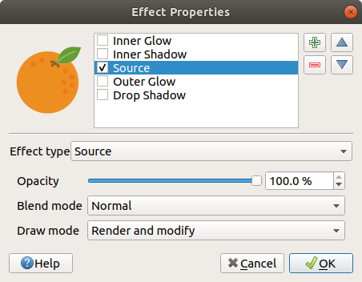
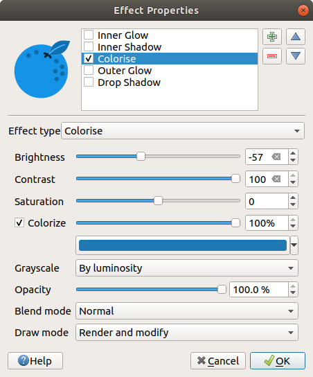
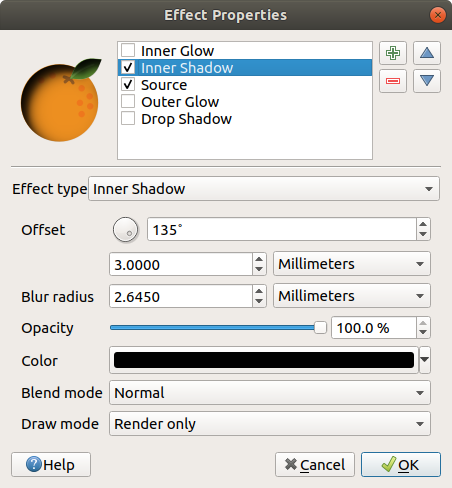
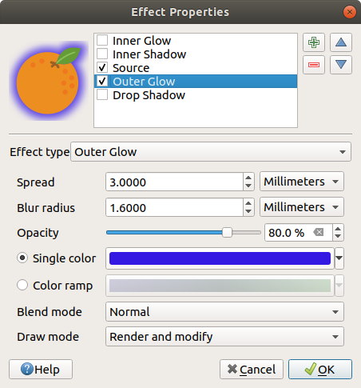
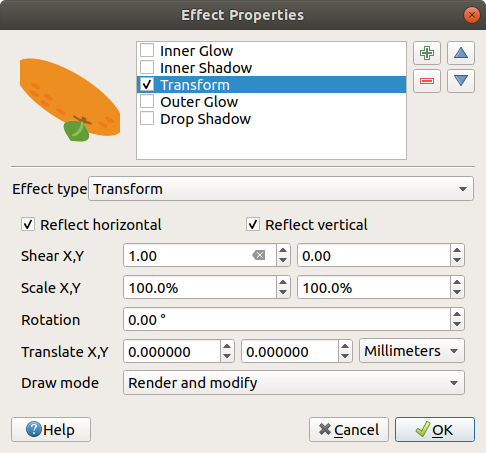
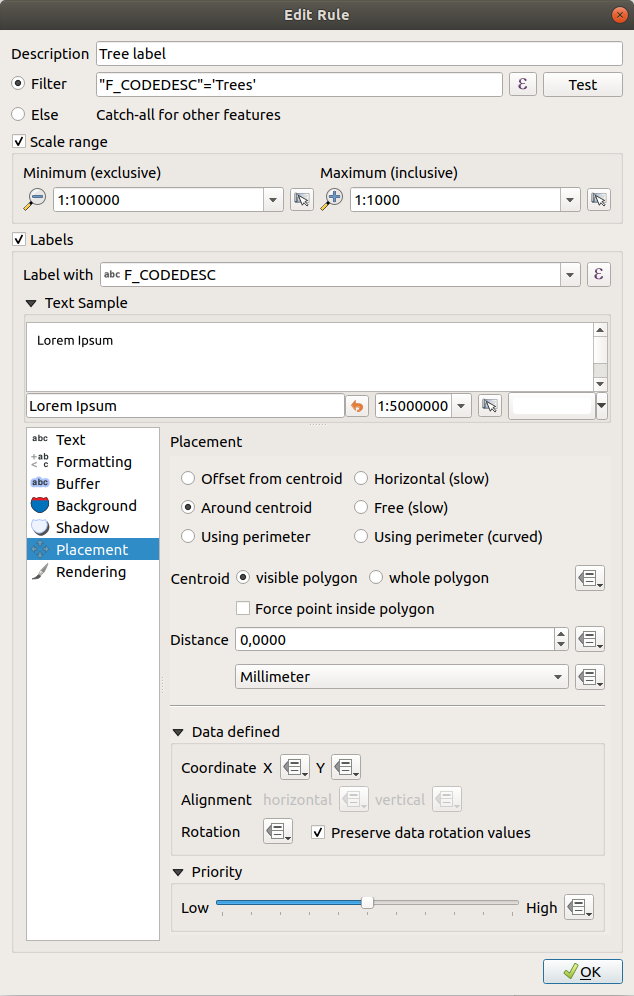
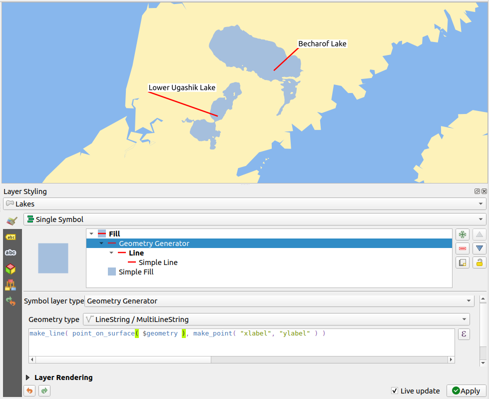
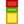

16.1. Vector ၏ ဂုဏ်သတ္တိများပြ dialog (The Vector Properties Dialog)
Vector layer တစ်ခုအတွက် Layer Properties (layer ဂုဏ်သတ္တိများ) dialog တွင် မြေပုံထဲရှိ layer များ၏ အသွင်အပြင် (သင်္ကေတများ၊ အညွှန်းတပ်ခြင်း၊ ရုပ်ပုံကားချပ်များ) ကို စီမံခန့်ခွဲနိုင်ရန် ယေဘူယျပြင်ဆင်မှုများ လုပ်ဆောင်နိုင်သည်။ Mouse (မောက်စ်)နှင့်အပြန်အလှန်တုံ့ပြန်မှုဆောင်ရွက်နိုင်သည် (လုပ်ဆောင်မှုများ၊ မြေပုံအကြံပြုချက်များ၊ ဒီဇိုင်းပုံစံ)။ Layer ၏ အချက်အလက်များကိုလည်း ဖော်ပြပေးပါသည်။
Layer Properties dialog သို့ ဝင်ရောက်ရန်-
Layers panel ရှိ Layer ကို click နှစ်ချက်နှိပ်ပါ သို့မဟုတ် ညာဘက်ကလစ်နှိပ်ပြီး ပေါ်လာသော pop-up menu (ရွေးချယ်စရာစာရင်း) မှ Properties… ကို ရွေးပါ။
Layer ကို ရွေးချယ်ပြီးသည့်အချိန်တွင် ကိုသွားပါ။
Vector Layer Properties dialog တွင် အောက်ပါကဏ္ဍများကို ပံ့ပိုးပေးထားပါသည်-
|
||
|
|
|
External plugins[2] tabs |


{kind=link}
[1] Layer styling panel ထဲတွင်လည်း ရရှိပါသည်။
[2] External plugins (ပြင်ပ plugin များ) တွင် tab များကို ရွေးချယ်ထည့်သွင်းနိုင်ပါသည်။ ထိုလုပ်ဆောင်ချက်များကို ယခု document (စာတမ်း)တွင် ဖော်ပြထားခြင်းမရှိပါ။ ၎င်းတို့၏ သက်ဆိုင်ရာ documentation (စာရွက်စာတမ်း) များကို မှီငြမ်းကိုးကားပါ။
Tip
Layer ပုံစံများ၏ အပြည့်အဝ သို့မဟုတ် တစ်စိတ်တစ်ပိုင်းဂုဏ်သတ္တိများကို မျှဝေခြင်း
Dialog အောက်ခြေရှိ menu သည် များစွာသောနေရာများ (several destination) (ဖိုင်၊ clipboard၊ database) မှ/သို့ ဂုဏ်သတ္တိများ သို့မဟုတ် ဂုဏ်သတ္တိများ၏ အစိတ်အပိုင်းများကို import (ထည့်သွင်းခြင်း) သို့မဟုတ် export (ထုတ်ယူခြင်း) လုပ်ဆောင်နိုင်ပါသည်။ စိတ်ကြိုက် style များ စီမံခန့်ခွဲခြင်း (Managing Custom Styles) (စိတ်ကြိုက်ပုံစံများပြင်ဆင်ခြင်း) တွင် ကြည့်ရှုပါ။
Note
ထည့်သွင်းထားသော layer များ (ပြင်ပ project များမှ layer များကို ထည့်သွင်းခြင်း (Embedding layers from external projects) တွင်ကြည့်ရှုပါ) ၏ ဂုဏ်သတ္တိများ (သင်္ကေတ၊ အညွှန်း၊ လုပ်ဆောင်ချက်များ၊ မူရင်းတန်ဖိုးများ၊ ပုံစံများ…) ကို မူရင်းပရောဂျက်မှ (original project file) ဆွဲထုတ်နိုင်သည်။ ဤလုပ်ဆောင်မှုကို ရပ်တန့်သွားနိုင်သည့် ပြောင်းလဲမှုများကို ရှောင်ရှားရန်အတွက် အဆိုပါ layer များအတွက် ဂုဏ်သတ္တိများ dialog ကို အသုံးပြုနိုင်မည်မဟုတ်ပါ။
16.1.1. သတင်းအချက်အလက်ဆိုင်ရာ ဂုဏ်သတ္တိများ (Information Properties)
 Information (အချက်အလက်) tab သည် ဖတ်ရှုရန်သာဖြစ်ပြီး လက်ရှိ layer ရှိ အကျဉ်းချုပ်အချက်အလက်များနှင့် metadata ကို လျင်မြန်စွာသိရှိနိုင်သည့် စိတ်ဝင်စားစရာကောင်းသောနေရာတစ်ခုဖြစ်သည်။ ရရှိနိုင်သော အချက်အလက်များမှာ-
Information (အချက်အလက်) tab သည် ဖတ်ရှုရန်သာဖြစ်ပြီး လက်ရှိ layer ရှိ အကျဉ်းချုပ်အချက်အလက်များနှင့် metadata ကို လျင်မြန်စွာသိရှိနိုင်သည့် စိတ်ဝင်စားစရာကောင်းသောနေရာတစ်ခုဖြစ်သည်။ ရရှိနိုင်သော အချက်အလက်များမှာ-
ပရောဂျက်အမည်၊ အရင်းအမြစ်လမ်းကြောင်း၊ အရန်ဖိုင်များစာရင်း၊ နောက်ဆုံးသိမ်းဆည်းသည့်အချိန်နှင့် အရွယ်အစား၊ data ဖန်တီးသူ
Layer ဖန်တီးသူအပေါ် မူတည်သည် - သိုလှောင်မှုပုံစံ၊ ဂျီသြမေတြီ အမျိုးအစား၊ encode လုပ်ထားသော ဒေတာအရင်းအမြစ်၊ အတိုင်းအတာပမာဏ၊ feature အရေအတွက်…
Coordinate Reference System (CRS - ကိုဩဒိနိတ်ရည်ညွှန်းစနစ်) - အမည်၊ ယူနစ်များ၊ နည်းလမ်းများ၊ တိကျမှုများ၊ ကိုးကားမှု (ဆိုလိုသည်မှာ ထိုအရာသည် တည်ငြိမ်သည် သို့မဟုတ် ပြောင်းလဲမှုရှိသည်)
filled metadata (ဖြည့်သွင်းထားသော metadata) မှ ရယူသည် - ရယူသုံးစွဲနိုင်မှု၊ အတိုင်းအတာပမာဏများ၊ ချိတ်ဆက်မှုများ၊ အဆက်အသွယ်များ၊ မှတ်တမ်းများ…
၎င်း၏ ဂျီသြမေတြီ (တည်နေရာဆိုင်ရာ အတိုင်းအတာပမာဏ၊ CRS…) သို့မဟုတ် ၎င်း၏ attribute များ (အချက်အလက်များ) (field အရေအတွက်၊ တစ်ခုချင်းစီ၏ ဝိသေသလက္ခဏာများ…) နှင့် သက်ဆိုင်သည်။
16.1.2. မူလရင်းမြစ်၏ ဂုဏ်သတ္တိများ (Source Properties)
Vector layer အတွက် ယေဘုယျ ပြင်ဆင်မှုများကို သတ်မှတ်ရန် ဤ tab  ကို အသုံးပြုပါ-
ကို အသုံးပြုပါ-

Fig. 16.1 Vector layer ၏ ဂုဏ်သတ္တိများ dialog ရှိ အရင်းအမြစ် tab
16.1.2.1. သတ်မှတ်ချက်များ (Settings)
ပရောဂျက်ရှိ layer ကို ဖော်ပြရန် အသုံးပြုမည့် layer ဖိုင်အမည်နှင့် မတူညီသော Layer name (အမည်) တစ်ခုကို သတ်မှတ်ပါ (Layers Panel ထဲတွင်၊ ခိုင်းစေချက်များ (expression) ဖြင့်၊ print layout ရှိ ရည်ညွှန်းချက်ထဲတွင် …)
Data ပုံစံအပေါ် မူတည်၍ QGIS မှ ဒေတာများကို မှန်ကန်စွာ မတွေ့ရှိပါလျှင် Data source encoding ကို ရွေးချယ်ပါ။
16.1.2.2. ကိုသြဒိနိတ်ရည်ညွှန်းစနစ် နှင့် ဂျီသြမေတြီ (Coordinate Reference System and Geometry)
Layer ၏ Assigned Coordinate Reference System (CRS) (သတ်မှတ်ထားသည့် CRS) ကို ပြသပါသည်။ Drop-down list ထဲရှိ မကြာမီကအသုံးပြုခဲ့သည့် CRS တစ်ခုကို ရွေးချယ်ခြင်း သို့မဟုတ်
 Select CRS ခလုတ်ကို နှိပ်ခြင်းဖြင့် (ကိုသြဒိနိတ်ရည်ညွှန်းစနစ်ရွေးချယ်ရာ (Coordinate Reference System Selector) တွင် ကြည့်ရှုပါ) layer ၏ CRS ကို ပြောင်းလဲနိုင်ပါသည်။ Layer တွင်အသုံးပြုသည့် CRS သည် မှားယွင်းနေပါက သို့မဟုတ် CRS သတ်မှတ်ထားခြင်းမရှိပါက ဤလုပ်ငန်းစဉ်ကို အသုံးပြုပါ။ Data ကို အခြား CRS တစ်ခုသို့ reproject (အရိပ်ချစနစ်ပြန်လည်သတ်မှတ်) ပြုလုပ်လိုပါက Processing မှ layer reprojection algorithms သို့မဟုတ် Save it into another layer (အခြား layer တစ်ခုသို့ သိမ်းဆည်းပါ) ကို အသုံးပြုပါ။
Select CRS ခလုတ်ကို နှိပ်ခြင်းဖြင့် (ကိုသြဒိနိတ်ရည်ညွှန်းစနစ်ရွေးချယ်ရာ (Coordinate Reference System Selector) တွင် ကြည့်ရှုပါ) layer ၏ CRS ကို ပြောင်းလဲနိုင်ပါသည်။ Layer တွင်အသုံးပြုသည့် CRS သည် မှားယွင်းနေပါက သို့မဟုတ် CRS သတ်မှတ်ထားခြင်းမရှိပါက ဤလုပ်ငန်းစဉ်ကို အသုံးပြုပါ။ Data ကို အခြား CRS တစ်ခုသို့ reproject (အရိပ်ချစနစ်ပြန်လည်သတ်မှတ်) ပြုလုပ်လိုပါက Processing မှ layer reprojection algorithms သို့မဟုတ် Save it into another layer (အခြား layer တစ်ခုသို့ သိမ်းဆည်းပါ) ကို အသုံးပြုပါ။Create spatial index (တည်နေရာဆိုင်ရာအညွှန်းဖန်တီးခြင်း) (OGR ထောက်ပံ့သည့် ပုံစံများအတွက်သာ)။
Update extents (အတိုင်းအတာပမာဏများကို မွမ်းမံခြင်း) - Layer တစ်ခုအတွက် အတိုင်းအတာပမာဏဆိုင်ရာ အချက်အလက်များ မွမ်းမံခြင်း။
16.1.2.3. Query တည်ဆောက်ရာ (Query Builder)
Provider feature filter group အောက်တွင်ရှိသည့် layer ဂုဏ်သတ္တိများ dialog ထဲမှ Source tab အောက်ခြေရှိ Query Builder (မူလဒေတာမှ မိမိလိုအပ်ချက်များနှင့် ကိုက်ညီသည့် ဒေတာများသီးသန့်ကိုစစ်ထုတ်ယူရန်အတွက် အမိန့်ပေးခိုင်းစေချက်များ ရေးသားသည့်နေရာ) ခလုတ်ကို နှိပ်ပြီး Query Builder Dialog ကို ဝင်ရောက်နိုင်ပါသည်။
Query Builder သည် SQL-like WHERE clause ကို အသုံးပြု၍ layer အတွင်းရှိ feature အစုခွဲတစ်ခုကို သတ်မှတ်ရန်နှင့် ပင်မဝင်းဒိုး (main window) တွင် ရလာဒ်ကို ပြသရန် ခွင့်ပြုသည့် interface တစ်ခုကို ဖော်ပြပေးပါသည်။ Query လုပ်ဆောင်ချက်ရှိနေသမျှ ရလာဒ်နှင့်သက်ဆိုင်သည့် feature များကိုသာ ပရောဂျက်ထဲတွင် ဖော်ပြမည်ဖြစ်ပါသည်။
Query Builder တွင် filter (စစ်ထုတ်) လုပ်ရန်အတွက် layer attribute တစ်ခု သို့မဟုတ် အများကြီးကို အသုံးပြုနိုင်သည်။
Attribute တစ်ခုထက်ပိုသော အသုံးပြုမှုကို Fig. 16.2 တွင် ဖော်ပြထားပါသည်။
ဖော်ပြပါဥပမာတွင် attribute များကို ပေါင်းစပ်ပြီး filter (စစ်ထုတ်) ပြုလုပ်ထားပါသည်-
toa(DateTimefield:cast("toa" as character) > '2017-05-17'နှင့်cast("toa" as character) < '2019-12-24T18:00:00')၊name(Stringfield:"name" > 'S') နှင့်FID(Integerfield:FID > 10)
AND၊ OR နှင့် NOT operator များနှင့် parenthesis (ကွင်းစ ကွင်းပိတ်များ) အသုံးပြုခြင်း။ ဤ syntax (toa field အတွက် ရက်စွဲ၊ အချိန် format ပါဝင်သော) သည် GeoPackage dataset များအတွက် အလုပ်လုပ်ပါသည်။
ဒေတာပံ့ပိုးသူ (data provider) (OGR၊ PostgreSQL၊ MS SQL Server…) အဆင့်တွင် Filter (စစ်ထုတ်) ပြုလုပ်ထားပါက syntax သည် ဒေတာပံ့ပိုးသူပေါ်တွင် မှီခိုပါသည် (ဥပမာ- ရက်စွဲ၊ အချိန်သည် ESRI Shapefile format အတွက် ပံ့ပိုးထားခြင်းမရှိပါ)။ ခိုင်းစေချက် (expression) အပြည့်အစုံမှာ-
cast("toa" as character) > '2017-05-17' AND
cast("toa" as character) < '2019-12-24T18:00:00' AND
NOT ("name" > 'S' OR FID > 10)
menu သို့မဟုတ် layer contextual (အကြောင်းအရာဆိုင်ရာ) menu မှ Filter… option ကို အသုံးပြု၍ Query Builder dialog ကို ဖွင့်နိုင်သည်။ Dialog ရှိ Fields၊ Values နှင့် Operators အပိုင်းများသည် Provider specific filter expression box ရှိ SQL-like query ကို တည်ဆောက်ရာတွင် ကူညီပေးပါသည်။
Fig. 16.2 Query Builder
Fields list (စာရင်း) တွင် layer ၏ field များအားလုံးပါဝင်ပါသည်။ SQL WHERE clause field တွင် attribute column (အတိုင်) တစ်ခုထည့်ရန် ၄င်း၏ အမည်ကို double click (နှစ်ချက်) နှိပ်ပြီး သို့မဟုတ် SQL box ထဲသို့ ရိုက်ထည့်ရန်သာဖြစ်သည်။
Values frame (တန်ဖိုးများပြသသည့်ဘောင်ကွက်) သည် လက်ရှိရွေးချယ်ထားသည့် field ၏တန်ဖိုးများ၏စာရင်းကို ဖော်ပြပေးသည်။ Field တစ်ခု၏ unique (ထူးခြားသော) တန်ဖိုးများ၏ စာရင်းကိုရရှိရန် All ခလုတ်ကို နှိပ်ပါ။ Column ၏ ပထမဆုံး unique (ထူးခြားသော) တန်ဖိုး ၂၅ ခုကို စာရင်းပြုလုပ်ရန် Sample ခလုတ်ကို နှိပ်ပါ။ SQL WHERE clause field ထဲသို့ တန်ဖိုးတစ်ခု ထည့်ရန် တန်ဖိုးများ list ထဲရှိ ၄င်း၏ အမည်ကို double click နှိပ်ပါ။ List ထဲရှိ attribute တန်ဖိုးများကို အလွယ်တကူရှာဖွေရန်နှင့်ဖွင့်ရန်အတွက် Values frame ၏ ထိပ်ရှိ search box (ရှာဖွေရန်အကွက်) ကို အသုံးပြုနိုင်သည်။
Operators အပိုင်းတွင် အသုံးပြုနိုင်သော operator များအားလုံးပါဝင်ပါသည်။ SQL WHERE clause field တွင် operator တစ်ခုထည့်သွင်းရန် သင့်လျော်သော ခလုတ်ကို နှိပ်ပါ။ Relational operators (ဆက်စပ်နေသော operator များ)
( = ၊ > ၊ …)၊ string comparison operator (စာသားနှိုင်းယှဥ်သည့် operator များ) (LIKE)၊ နှင့် logical operators (AND၊ OR၊ …) များ ပါရှိပါသည်။
Test (စမ်းသပ်) ခလုတ်သည် query ကို စစ်ဆေးခြင်းနှင့် လက်ရှိ query ကြောင့် ဖြစ်ပေါ်လာမည့် feature အရေအတွက်ကို ဖော်ပြပေးသော message box တစ်ခုကို ပြသပေးသည်။ SQL query ကို ရှင်းလင်းရန် (wipe) နှင့် layer ကို မူလအခြေအနေသို့ ပြန်ရောက်ရန် (ဆိုလိုသည်မှာ- feature များအကုန်လုံး ဖော်ပြပေးမည်) Clear ခလုတ်ကို အသုံးပြုပါ။
Filter အသုံးပြုသည့်အချိန်တွင် QGIS သည် ရရှိလာသောရလာဒ်အစုကို layer တစ်ခုလုံးကဲ့သို့ ဆောင်ရွက်ပါသည်။
ဥပမာအားဖြင့် ‘Borough’ ("TYPE_2" = 'Borough') အတွက် filter ပြုလုပ်လျှင် Anchorage ကို ပြသခြင်း၊ query၊ သိမ်းဆည်းခြင်း သို့မဟုတ် ပြုပြင်ခြင်းများ မပြုလုပ်နိုင်ပါ။ အကြောင်းမှာ ၄င်းသည် ‘Municipality’ တစ်ခုဖြစ်ပြီး subset ၏ အစိတ်အပိုင်းမဟုတ်သောကြောင့် ဖြစ်သည်။
Tip
Filtered (စစ်ထုတ်ထားသော) layer များကို Layers Panel ထဲတွင် ပြသထားသည်
Filtered (စစ်ထုတ်ထားသော) layer ကို ၎င်း၏ဘေးတွင်  Filter icon တစ်ခုနှင့်အတူ Layers panel ထဲတွင် ပြသပေးပါသည်။ ၎င်း icon ပေါ်သို့ mouse တင်ကြည့်လိုက်လျှင် အသုံးပြုထားသည့် query ကို ဖော်ပြပေးပါသည်။ Icon ကို double click နှိပ်ခြင်းအားဖြင့် Query Builder dialog ပွင့်လာမည်ဖြစ်ပြီး ပြုပြင်ခြင်းများလုပ်ဆောင်နိုင်ပါသည်။
Filter icon တစ်ခုနှင့်အတူ Layers panel ထဲတွင် ပြသပေးပါသည်။ ၎င်း icon ပေါ်သို့ mouse တင်ကြည့်လိုက်လျှင် အသုံးပြုထားသည့် query ကို ဖော်ပြပေးပါသည်။ Icon ကို double click နှိပ်ခြင်းအားဖြင့် Query Builder dialog ပွင့်လာမည်ဖြစ်ပြီး ပြုပြင်ခြင်းများလုပ်ဆောင်နိုင်ပါသည်။
16.1.3. သင်္ကေတ ဂုဏ်သတ္တိများ (Symbology Properties)
Vector data များအား ပုံဖော်ခြင်း နှင့် သင်္ကေတ သတ်မှတ်ခြင်းများကို  သင်္ကေတဆိုင်ရာ tab တွင် ဆောင်ရွက်နိုင်ပါသည်။ Vector data များအားလုံးအတွက် အသုံးများသော tool များကို အသုံးပြုနိုင်သကဲ့သို့ မတူညီသော vector data အမျိုးအစားများအတွက် အထူးပြုလုပ်ထားသော သင်္ကေတဆိုင်ရာ tool များကို လည်းအသုံးပြုနိုင်ပါသည်။ သို့သော် အမျိုးအစားအားလုံးသည် အောက်ပါ dialog ဖွဲ့စည်းပုံတွင် ပါဝင်ပါသည်- အပေါ်ပိုင်းတွင် feature များအတွက် အသုံးပြုရန် အမျိုးအစားခွဲခြားခြင်းနှင့် သင်္ကေတများကို ပြင်ဆင်ရာတွင် အသုံးဝင်သည့် widget တစ်ခုရှိပြီး အောက်ပိုင်းတွင် Layer ပုံဖော်ပြသခြင်း (Layer Rendering) (layer ပုံဖော်ပြသခြင်းဆိုင်ရာ) widget ရှိပါသည်။
သင်္ကေတဆိုင်ရာ tab တွင် ဆောင်ရွက်နိုင်ပါသည်။ Vector data များအားလုံးအတွက် အသုံးများသော tool များကို အသုံးပြုနိုင်သကဲ့သို့ မတူညီသော vector data အမျိုးအစားများအတွက် အထူးပြုလုပ်ထားသော သင်္ကေတဆိုင်ရာ tool များကို လည်းအသုံးပြုနိုင်ပါသည်။ သို့သော် အမျိုးအစားအားလုံးသည် အောက်ပါ dialog ဖွဲ့စည်းပုံတွင် ပါဝင်ပါသည်- အပေါ်ပိုင်းတွင် feature များအတွက် အသုံးပြုရန် အမျိုးအစားခွဲခြားခြင်းနှင့် သင်္ကေတများကို ပြင်ဆင်ရာတွင် အသုံးဝင်သည့် widget တစ်ခုရှိပြီး အောက်ပိုင်းတွင် Layer ပုံဖော်ပြသခြင်း (Layer Rendering) (layer ပုံဖော်ပြသခြင်းဆိုင်ရာ) widget ရှိပါသည်။
Tip
မတူညီသော layer ဖော်ပြမှုများအကြား လျှင်မြန်စွာ ကူးပြောင်းပါ
Layer Properties dialog ၏ အောက်ခြေရှိ menu ကို အသုံးပြု၍ style များစွာကို လိုအပ်သလိုသိမ်းဆည်းနိုင်ပါသည်။ Style တစ်ခုသည် နှစ်သက်ရာ layer တစ်ခု၏ များအားလုံးပေါင်းစပ်ထားခြင်းဖြစ်သည်။ (သင်္ကေတဆိုင်ရာ၊ အညွှန်းတပ်ခြင်းများ၊ ပုံများ၊ field ပုံစံများ၊ လုပ်ဆောင်ချက်များ စသည့်) ထို့နောက် data များ၏ မတူညီသောကိုယ်စားပြုမှုများကို အလိုအလျောက် ရရှိရန် Layers Panel ရှိ layer ၏ context (အကြောင်းအရာဆိုင်ရာ) menu မှ style များအကြား ကူးပြောင်းပါ။
Tip
Vector သင်္ကေတများကို export (ထုတ်ယူ) ပြုလုပ်ခြင်း
Vector သင်္ကေတများကို QGIS မှ ထုတ်ယူ၍ Google *.kml ၊ *.dxf နှင့် MapInfo *.tab ဖိုင်များတွင် အသုံးပြုနိုင်ပါသည်။ Layer ပေါ်တွင် right-click နှိပ်ပြီး ဖိုင်အမည်နှင့် သိမ်းဆည်းမည့်ပုံစံသတ်မှတ်ရန် ကိုနှိပ်ပါ။ Dialog ထဲတွင် သင်္ကေတဆိုင်ရာ အချက်အလက်များကို ပုံစံ သို့မဟုတ် ပုံစံအနေဖြင့် သိမ်းဆည်းရန် menu ကို အသုံးပြုပါ။ သင်္ကေတ layer များကို အသုံးပြုပြီးပါက ကို အသုံးပြုသင့်ပါသည်။
16.1.3.1. Feature ပုံဖော်ပြသရာ (Feature Rendering)
Renderer (ပုံဖော်ပြသပေးသည့်အရာ) သည် မှန်ကန်သော သင်္ကေတဖြင့် feature တစ်ခုကို ရေးဆွဲပေးပါသည်။ Layer ဂျီသြမေတြီ အမျိုးအစားနှင့် မသက်ဆိုင်ပဲ renderer အမျိုးအစား လေးမျိုးရှိပါသည်။ ၄င်းတို့မှာ သင်္ကေတ တစ်မျိုးတည်း ဖြင့်ဖော်ပြခြင်း (single symbol) ၊ အမျိုးအစားအလိုက် ခွဲခြားဖော်ပြခြင်း (categorized) ၊ အဆင့်လိုက် ခွဲခြားဖော်ပြခြင်း (graduated) နှင့် စည်းမျဉ်းသတ်မှတ်ချက်များကိုအခြေခံ၍ဖော်ပြခြင်း (rule-based) တို့ဖြစ်ပါသည်။ Point layer များအတွက် အမှတ် အရွေ့ (point displacement)၊ အမှတ် အစုအဝေး (point cluster) နှင့် တန်ဖိုးအနိမ့်အမြင့်အလိုက်ဖော်ပြသော (heatmap) render များရှိပါသည်။ ပေါင်းစပ်ထားသော (merged) feature များ၊ inverted polygon (polygon အပြင်ဘက်တွင်အရောင်ခြယ်ပြီး polygon တွင်အရောင်မခြယ်ခြင်း) များနှင့် 2.5 D (2 Dimension နှင့် 3 Dimension ကြား) renderer များဖြင့်လည်း polygon layer များကို ပုံဖော်ပြသနိုင်ပါသည်။
Graduated (အဆင့်လိုက်ခွဲခြားဖော်ပြသည့်) renderer တွင် အထူးကိစ္စရပ်အနေဖြင့် လုပ်ဆောင်နိုင်သောကြောင့် continuous (တဆက်တစပ်တည်းဖြစ်သောအရောင်များဖြင့်ဖော်ပြသည့်) renderer မျိုးသီးသန့်မရှိပါ။ Categorized (အမျိုးအစားအလိုက် ခွဲခြားဖော်ပြခြင်း) နှင့် Graduated (အဆင့်လိုက်ခွဲခြားဖော်ပြသည့်) renderer များအား သင်္ကေတတစ်ခုနှင့် color ramp (ရောင်စဉ်တန်း) တစ်ခုကို သတ်မှတ်ပေးခြင်းဖြင့် ဖန်တီးနိုင်သည်။ သင်္ကေတများအတွက် အရောင်များကို သင့်လျော်စွာ သတ်မှတ်ပေးမည်ဖြစ်ပါသည်။ Data အမျိုးအစား (အမှတ်များ၊ မျဥ်းများနှင့် ဧရိယာများ) တစ်ခုစီအတွက် vector သင်္ကေတ layer အမျိုးအစားများ ရရှိနိုင်ပါသည်။ ရွေးချယ်ထားသော renderer အပေါ်မူတည်၍ dialog တွင် မတူညီသော နောက်ထပ်အပိုင်းများကို ဆောင်ရွက်နိုင်သည်။
Note
Renderer အမျိုးအစားကို ပြောင်းလဲလိုက်လျှင် vector layer တစ်ခု၏ style ကို ပြင်ဆင်သတ်မှတ်သည့်အခါ သင်္ကေတအတွက် ပြုလုပ်ထားသော setting (အပြင်အဆင်) များ ကျန်ရှိနေပါလိမ့်မည်။ ဤလုပ်ငန်းစဉ်သည် ပြောင်းလဲမှုတစ်ခုအတွက်သာ အလုပ်လုပ်သည်ကို သတိပြုပါ။ Renderer အမျိုးအစားကို ထပ်ပြောင်းပါက သင်္ကေတအတွက် setting များ ပျောက်သွားမည်ဖြစ်သည်။
သင်္ကေတ တစ်မျိုးတည်းဖြင့် ပုံဖော်ပြသသည့်အရာ (Single Symbol Renderer)
 Single Symbol renderer ကို layer ၏ feature အားလုံးကို
ရွေးချယ်သတ်မှတ်လိုက်သည့် သင်္ကေတ တစ်မျိုးတည်းဖြင့် ပုံဖော်ပြသလိုလျှင် အသုံးပြုပါသည်။
Single Symbol renderer ကို layer ၏ feature အားလုံးကို
ရွေးချယ်သတ်မှတ်လိုက်သည့် သင်္ကေတ တစ်မျိုးတည်းဖြင့် ပုံဖော်ပြသလိုလျှင် အသုံးပြုပါသည်။
သင်္ကေတကိုယ်စားပြုခြင်းဆိုင်ရာနှင့်ပတ်သက်သည့် နောက်ထပ်အချက်အလက်များအတွက် သင်္ကေတရွေးချယ်သည့်အရာ (The Symbol Seclector) ကို ကြည့်ရှပါ။

Fig. 16.3 သင်္ကေတ တစ်မျိုးတည်းဖြင့်ဖော်ပြထားသော မျဥ်း (line) ၏ ဂုဏ်သတ္တိများ
သင်္ကေတအသုံးမပြုပဲ ပုံဖော်ပြသသည့်အရာ (No Symbols Renderer)
 No Symbols renderer သည် သင်္ကေတတစ်မျိုးတည်းပုံဖော်ပြသသည့်အရာ (Single symbol renderer) ၏ အထူးအသုံးပြုမှုတစ်ခုဖြစ်ပြီး feature အားလုံးအတွက် တူညီသော ပုံဖော်ပြသခြင်းကို လုပ်ဆောင်ပေးမည်ဖြစ်သည်။ ဤ renderer ကို အသုံးပြုရာတွင် feature များအတွက် မည်သည့်သင်္ကေတကို ရေးဆွဲပေးမည် မဟုတ်ပါ၊ သို့သော် အညွှန်းဖော်ပြချက်များ၊ ပုံများနှင့် အခြားသော သင်္ကေတမဟုတ်သော အစိတ်အပိုင်းများကို ပြသပေးမည်ဖြစ်သည်။
No Symbols renderer သည် သင်္ကေတတစ်မျိုးတည်းပုံဖော်ပြသသည့်အရာ (Single symbol renderer) ၏ အထူးအသုံးပြုမှုတစ်ခုဖြစ်ပြီး feature အားလုံးအတွက် တူညီသော ပုံဖော်ပြသခြင်းကို လုပ်ဆောင်ပေးမည်ဖြစ်သည်။ ဤ renderer ကို အသုံးပြုရာတွင် feature များအတွက် မည်သည့်သင်္ကေတကို ရေးဆွဲပေးမည် မဟုတ်ပါ၊ သို့သော် အညွှန်းဖော်ပြချက်များ၊ ပုံများနှင့် အခြားသော သင်္ကေတမဟုတ်သော အစိတ်အပိုင်းများကို ပြသပေးမည်ဖြစ်သည်။
ရွေးချယ်မှုများ (selections) ကို canvas (မြေပုံအချက်အလက်များကိုဖော်ပြသည့်နေရာ) ရှိ layer ပေါ်တွင် ပြုလုပ်နိုင်ဆဲဖြစ်ပြီး ရွေးချယ်ထားသော feature များကို default (မူလ/ပုံမှန်) သင်္ကေတဖြင့် ပုံဖော်ပြသမည်ဖြစ်သည်။ ပြင်ဆင်မှုများပြုလုပ်ထားသည့် feature များကိုလည်း ပြသမည်ဖြစ်ပါသည်။
၎င်းသည် အညွှန်းများ သို့မဟုတ် ပုံများကိုသာ ပြသစေလိုသည့် layer များအတွက် အဆင်ပြေသော အလွယ်နည်းလမ်းတစ်ခုဖြစ်ပြီး အပြည့်အဝအလင်းဖောက်ထွင်းနိုင်သော (totally transparent) အဖြည့် (fill)/ဘောင် (border) ဖြင့် သင်္ကေတများကို ပုံဖော်ပြသပေးနိုင်ပါသည်။
အမျိုးအစားအလိုက် ခွဲခြားပုံဖော်ပြသရာ (Categorized Renderer)
 Categorized renderer ကို layer တစ်ခု၏ feature များကို ပုံဖော်ပြသရာတွင်အသုံးပြုပြီး ထိုသို့ ပုံဖော်ပြသရာတွင် field တစ်ခုအတွင်းရှိ ပြတ်ကိန်း တန်ဖိုးများ (discrete values) သို့မဟုတ် ခိုင်းစေချက် (expression) များကို အသုံးပြုပါသည်။
Categorized renderer ကို layer တစ်ခု၏ feature များကို ပုံဖော်ပြသရာတွင်အသုံးပြုပြီး ထိုသို့ ပုံဖော်ပြသရာတွင် field တစ်ခုအတွင်းရှိ ပြတ်ကိန်း တန်ဖိုးများ (discrete values) သို့မဟုတ် ခိုင်းစေချက် (expression) များကို အသုံးပြုပါသည်။
Fig. 16.4 အမျိုးအစားအလိုက် ခွဲခြား ပုံဖော်ပြသခြင်းဆိုင်ရာ ရွေးချယ်စရာများ
Layer တစ်ခုအတွက် အမျိုးအစားအလိုက် သင်္ကေတဆိုင်ရာများ အသုံးပြုမည်ဆိုပါက-
အမျိုးအစားခွဲခြင်း (classification) Value (တန်ဖိုး) ကိုရွေးပါ။ ၄င်းတန်ဖိုးသည် ရှိနေပြီးသား field တစ်ခု သို့မဟုတ် ခိုင်းစေချက်စာသားများရိုက်ထည့်ထားသော သို့မဟုတ် ဆက်စပ်
 ခလုတ်ကို အသုံးပြု၍တည်ဆောက်ထားသော expression (ခိုင်းစေချက်) တစ်ခု ဖြစ်နိုင်ပါသည်။ အမျိုးအစားခွဲခြားခြင်းအတွက် ခိုင်းစေချက် (expression) များ အသုံးပြုခြင်းသည် သင်္ကေတ ပြသနိုင်ရုံအတွက် field တစ်ခုဖန်တီးခြင်းကို လိုအပ်တော့မည်မဟုတ်ပါ။ (ဥပမာ- အမျိုးအစားခွဲခြင်းဆိုင်ရာ စံသတ်မှတ်ချက် (classification criteria) များသည် တစ်ခု သို့မဟုတ် တစ်ခုထက်ပိုသော attribute များမှ ဖြစ်မည်ဆိုပါက)
ခလုတ်ကို အသုံးပြု၍တည်ဆောက်ထားသော expression (ခိုင်းစေချက်) တစ်ခု ဖြစ်နိုင်ပါသည်။ အမျိုးအစားခွဲခြားခြင်းအတွက် ခိုင်းစေချက် (expression) များ အသုံးပြုခြင်းသည် သင်္ကေတ ပြသနိုင်ရုံအတွက် field တစ်ခုဖန်တီးခြင်းကို လိုအပ်တော့မည်မဟုတ်ပါ။ (ဥပမာ- အမျိုးအစားခွဲခြင်းဆိုင်ရာ စံသတ်မှတ်ချက် (classification criteria) များသည် တစ်ခု သို့မဟုတ် တစ်ခုထက်ပိုသော attribute များမှ ဖြစ်မည်ဆိုပါက)Feature များကို အမျိုးအစားခွဲရန် အသုံးပြုသည့် ခိုင်းစေချက် (expression)သည် အမျိုးအစား အမျိုးမျိုး ဖြစ်နိုင်သည်။ ဥပမာ- ၄င်းသည်
နှိုင်းယှဥ်မှု ဖြစ်နိုင်သည်။ ဤအခြေအနေတွင် QGIS သည်
1(True (မှန်)) နှင့်0(False (မှား)) တန်ဖိုးများကို ပြန်ထုတ်ပေးပါသည်။ အချို့ ဥပမာများမှာ-myfield >= 100 $id = @atlas_featureid myfield % 2 = 0 within( $geometry, @atlas_geometry )
မတူညီသော field များကို ပေါင်းစပ်ခြင်း-
concat( field_1, ' ', field_2 )
Field များပေါ်တွင် တွက်ချက်ခြင်း-
myfield % 2 year( myfield ) field_1 + field_2 substr( field_1, -3 )
Linear (အစဉ်အတိုင်းရှိသော) တန်ဖိုးများကို ပြတ်ကိန်း အတန်းအစား (discrete class) များအဖြစ်သို့ ပြောင်းလဲခြင်း၊ ဥပမာ-
CASE WHEN x > 1000 THEN 'Big' ELSE 'Small' END
ပြန်ကိန်းတန်ဖိုး (discrete values) အများအပြားကို အုပ်စုတစ်ခုတည်းအဖြစ်သို့ ပေါင်းခြင်း၊ ဥပမာ-
CASE WHEN building IN ('residence', 'mobile home') THEN 'residential' WHEN building IN ('commercial', 'industrial') THEN 'Commercial and Industrial' END
Tip
Feature များကို အမျိုးအစားခွဲရန် မည်သည့် ခိုင်းစေချက် (expression) မျိုးကိုမဆို အသုံးပြုနိုင်သော်လည်း၊ အချို့သော ရှုပ်ထွေးသော ခိုင်းစေချက် (expression) များအတွက် rule-based rendering (စည်းမျဉ်းသတ်မှတ်ချက်များကိုအခြေခံ၍ ပုံဖော်ပြသခြင်း) ကိုအသုံးပြုခြင်းဖြင့် ပိုမိုရိုးရှင်းနိုင်ပါသည်။
Symbol (သင်္ကေတ) ကို ပြင်ဆင်သတ်မှတ်ပါ။ ၄င်းကို class (အတန်းအစား) အားလုံးအတွက် အခြေခံသင်္ကေတအဖြစ် အသုံးပြုမည် ဖြစ်သည်။
Color ramp (ရောင်စဉ်တန်း) ကို ဖော်ပြပါ။ ဆိုလိုသည်မှာ သင်္ကေတတစ်ခုစီကို ခြယ်သမည့် အရောင်အပိုင်းအခြား ရွေးချယ်ခြင်းဖြစ်ပါသည်။
color ramp widget ၏ အသုံးများသော ရွေးချယ်မှုများ (common options) အပြင်
 Random Color Ramp (ကျပန်းရောင်စဉ်တန်း) တစ်ခု အသုံးပြုနိုင်ပါသည်။ Shuffle Random Colors (ကျပန်းအရောင်များဖြင့်ရောနှောခြင်း) ကိုနှိပ်ပြီး ကျပန်းအရောင်များဖြင့်လည်း ပုံစံအသစ်တစ်ခု ပြုလုပ်နိုင်ပါသည်။
Random Color Ramp (ကျပန်းရောင်စဉ်တန်း) တစ်ခု အသုံးပြုနိုင်ပါသည်။ Shuffle Random Colors (ကျပန်းအရောင်များဖြင့်ရောနှောခြင်း) ကိုနှိပ်ပြီး ကျပန်းအရောင်များဖြင့်လည်း ပုံစံအသစ်တစ်ခု ပြုလုပ်နိုင်ပါသည်။Field သို့မဟုတ် ခိုင်းစေချက် (expression) များ၏ ထင်ရှားသောတန်ဖိုးများမှ class (အတန်းအစား) များကို ဖန်တီးရန် Classify ခလုတ်ကို နှိပ်ပါ။
အကယ်၍ live update (တိုက်ရိုက် update ကိုပြသခြင်း) ကို မဖွင့်ထားလျှင် ပြောင်းလဲမှုများကို အသုံးပြုရန် Apply ကိုနှိပ်ပါ။ မြေပုံ canvas ပေါ်ရှိ feature တစ်ခုချင်းစီကို ၄င်းတို့ class (အတန်းအစား) များ၏ သင်္ကေတများဖြင့် ပြောင်းလဲ ပုံဖော်ပြသလိမ့်မည် ဖြစ်ပါသည်။
ပုံမှန်အားဖြင့် QGIS သည် all other values (အခြားတန်ဖိုးများအားလုံး) class ကို list (စာရင်း) ထဲတွင် ထည့်သွင်းဖော်ပြပါသည်။ အစတွင် အလွတ် (empty) အနေဖြင့်ရှိနေပြီး အခြား class များထဲသို့ မကျရောက်နေသော မည်သည့် feature အတွက်မဆို အဆိုပါ class ကို default အဖြစ်အသုံးပြုပါသည်။ (ဥပမာ- အမျိုးအစားခွဲခြားခြင်း field/ခိုင်းစေချက် (expression) အတွက် တန်ဖိုးအသစ်များနှင့် feature များကို ဖန်တီးသောအခါ)
နောက်ထပ် ချိန်ညှိမှုများကို default (ပုံမှန်) အမျိုးအစားခွဲခြားခြင်းတွင် ဆောင်ရွက်နိုင်ပါသည်-
အမျိုးအစားအသစ်များပေါင်းထည့်ရန်အတွက်
 Add ကိုနှိပ်ပါ။ ရွေးချယ်ထားသော အမျိုးအစားများကိုပယ်ဖျက်ရန် သို့မဟုတ် Delete All (အားလုံးကို ပယ်ဖျက်ရန်)
Add ကိုနှိပ်ပါ။ ရွေးချယ်ထားသော အမျိုးအစားများကိုပယ်ဖျက်ရန် သို့မဟုတ် Delete All (အားလုံးကို ပယ်ဖျက်ရန်)  Remove ကိုနှိပ်နိုင်ပါသည်။
Remove ကိုနှိပ်နိုင်ပါသည်။Class (အတန်းအစား) အမည် ဘယ်ဘက်ဘေးရှိ အမှန်ခြစ်ကို ဖြုတ်ထားခြင်းအားဖြင့် class ကို ဖျောက်ထားနိုင်ပါသည်။ ထိုသို့ ပြုလုပ်ခြင်းအားဖြင့် သက်ဆိုင်ရာ feature များသည် မြေပုံပေါ်တွင် ပျောက်နေမည်ဖြစ်သည်။
Class (အတန်းအစား) များကို ဖိဆွဲပြီး (drag-and-drop) class များ၏ အစီအစဥ်များကို ပြင်ဆင်နေရာချနိုင်သည်။
Class (အတန်းအစား) တစ်ခု၏ သင်္ကေတ သို့မဟုတ် တန်ဖိုး သို့မဟုတ် ရည်ညွှန်းချက်ကို ပြောင်းလဲရန် click နှစ်ချက်နှိပ်ပါ။
ရွေးချယ်ထားသော item (များ) အပေါ်တွင် Right-click ကို နှိပ်ခြင်းအားဖြင့် အောက်ပါတို့ကို လုပ်ဆောင်နိုင်ရန် သက်ဆိုင်ရာ menu တစ်ခု ပေါ်လာပါလိမ့်မည်-
Copy Symbol (သင်္ကေတကိုကူးယူခြင်း) နှင့် Paste Symbol သည် item များ၏ ဖော်ပြမှုကို အခြားတွင်အသုံးချရန်အတွက် အဆင်ပြေပါသည်။
ရွေးချယ်ထားသော သင်္ကေတ (များ) ၏ Change Color… (အရောင်ပြောင်းလဲခြင်း)
ရွေးချယ်ထားသော သင်္ကေတ (များ) ၏ Change Opacity… (အလင်းပိတ်နှုန်း ပြောင်းလဲခြင်း)
ရွေးချယ်ထားသော သင်္ကေတ (များ) ၏ Change Output Unit… (ရလာဒ်ယူနစ်ပြောင်းလဲခြင်း)
ရွေးချယ်ထားသော မျဥ်းသင်္ကေတ (များ) ၏ Change Width… (အထူ ပြောင်းလဲခြင်း)
ရွေးချယ်ထားသော အမှတ်သင်္ကေတ (များ) ၏Change Size… (အရွယ်အစားပြောင်းလဲခြင်း)
ရွေးချယ်ထားသော အမှတ်သင်္ကေတ (များ) ၏ Change Angle… (ထောင့် ပြောင်းလဲခြင်း)
Merge Categories (အမျိုးအစားများ စုပေါင်းခြင်း) သည် ရွေးချယ်ထားသော မျိုးစုံဖြစ်နေသည့် အမျိုးအစားများကို တစ်ခုတည်းဖြစ်စေရန် စုစည်းပေးပါသည်။ ၎င်းသည် အမျိုးအစားများစွာပါဝင်သော layer များကို ရိုးရှင်းသောပုံစံ ပြုလုပ်နိုင်ပါသည်။ ထိုနေရာတွင် များပြားလှသော အမျိုးအစားများကို သေးငယ်ပြီး ပိုမိုစီမံခန့်ခွဲရ လွယ်ကူသော အမျိုးအစားအစုများအဖြစ်သို့ စုဖွဲ့နိုင်ပါသည်။
Tip
စုပေါင်းထားသော အမျိုးအစားများအတွက်သင်္ကေတသည် စာရင်းထဲတွင် ရွေးချယ်ထားသည့်အမျိုးအစားများထဲမှ ထိပ်ဆုံး တစ်ခု၏ သင်္ကေတဖြစ်သောကြောင့် merge (စုပေါင်းခြင်း) မပြုလုပ်မီတွင် ပြန်လည်အသုံးပြုလိုသည့် သင်္ကေတအမျိုးအစားကို ထိပ်သို့ရွှေ့ထားနိုင်ပါသည်။
ယခင်က စုပေါင်းထားခဲ့သော အမျိုးအစားများကို Unmerge Categories (အမျိုးအစားများ ပြန်ခွဲထုတ်ခြင်း) ပြုလုပ်ခြင်း
ဖန်တီးထားသော class များသည် Layers ထဲရှိ tree hierarchy (စဉ်ထားသည့်ဖွဲ့စည်းပုံ) နေရာတွင် ပေါ်လာပါလိမ့်မည်။ သတ်မှတ်ထားသော သင်္ကေတကိုပြန်လည်ပြင်ဆင်ရန် မြေပုံရည်ညွှန်းချက်ထဲရှိ entry တစ်ခုကို click နှစ်ချက်နှိပ်ပါ။ အချို့သော more options (အခြားရွေးချယ်မှုများ) ကိုရယူရန် Right-click ကိုနှိပ်ပါ။
Match to saved symbols (ရှိပြီးသား သင်္ကေတများနှင့် တူညီရန်) - symbols library ကိုအသုံးပြုခြင်းသည် အမျိုးအစားတစ်ခုစီကို သင်္ကေတတစ်ခုစီ သတ်မှတ်ပေးပါသည်။ ထိုသင်္ကေတ၏အမည်သည် အမျိုးအစား၏ အတန်းအစားခွဲခြားမှုတန်ဖိုး (classification value) ကို ကိုယ်စားပြုပါသည်။
Match to symbols from file… (ဖိုင်ထဲရှိ သင်္ကေတများနှင့် တူညီရန်) - သင်္ကေတပါရှိသော ဖိုင်တစ်ခုကိုထည့်သွင်းပေးခြင်းသည် အမျိုးအစားတစ်ခုစီကို သင်္ကေတတစ်ခုစီ သတ်မှတ်ပေးပါသည်။ ထိုသင်္ကေတ၏အမည်သည် အမျိုးအစား၏ အတန်းအစားခွဲခြားမှုတန်ဖိုး (classification value) ကို ကိုယ်စားပြုပါသည်။
Symbol levels… (သင်္ကေတအဆင့်များ) သည် သင်္ကေတများပုံဖော်ပြသမည့် အစီအစဥ်ကိုသတ်မှတ်ရန်ဖြစ်သည်။
အဆင့်ကို ခွဲခြား ပုံဖော်ပြသပေးသည့်အရာ (Graduated Renderer)
 Graduated renderer ကို layer တစ်ခု၏ feature များကို ပုံဖော်ပြသရာတွင်အသုံးပြုပြီး ပုံဖော်ပြသသည့် သင်္ကေတ၏ အရောင်နှင့်အရွယ်အစားသည် class (အတန်းအစား) တစ်ခုအတွက် သတ်မှတ်ပေးမည့် feature ၏ attribute ပေါ်မူတည်ပါသည်။
Graduated renderer ကို layer တစ်ခု၏ feature များကို ပုံဖော်ပြသရာတွင်အသုံးပြုပြီး ပုံဖော်ပြသသည့် သင်္ကေတ၏ အရောင်နှင့်အရွယ်အစားသည် class (အတန်းအစား) တစ်ခုအတွက် သတ်မှတ်ပေးမည့် feature ၏ attribute ပေါ်မူတည်ပါသည်။
အမျိုးအစားအလိုက် ခွဲခြား ပုံဖော်ပြသသည့်အရာ (Categorized Renderer) ကဲ့သို့ပင် အဆင့်လိုက် ခွဲခြားပုံဖော်ပြသသည့်အရာ (Graduated Renderer) သည် သတ်မှတ်ထားသော column (အတိုင်) များမှ rotation (အလှည့်) နှင့် အရွယ်အစား စကေးကို သတ်မှတ်နိုင်သည်။
အမျိုးအစားအလိုက် ခွဲခြား ပုံဖော်ပြသခြင်း (Categorized Renderer) နှင့်အလားတူ အောက်ဖော်ပြပါရွေးချယ်မှုများကို ပြုလုပ်နိုင်ပါသည်-
အမျိုးအစားခွဲခြားခြင်း၏ Value (တန်ဖိုး) - ၄င်းတန်ဖိုးသည် ရှိနေပြီးသား field တစ်ခု သို့မဟုတ် ခိုင်းစေချက်စာသားများရိုက်ထည့်ထားသော သို့မဟုတ် ဆက်စပ်
ခလုတ်ကို အသုံးပြု၍တည်ဆောက်ထားသော expression (ခိုင်းစေချက်) တစ်ခု ဖြစ်နိုင်ပါသည်။ အဆင့်အလိုက်ခွဲခြားပုံဖော်ပြသခြင်း (Graduating) အတွက် ခိုင်းစေချက် (expression) များ အသုံးပြုခြင်းသည် သင်္ကေတ ပြသနိုင်ရုံအတွက် field တစ်ခုဖန်တီးခြင်းကို လိုအပ်တော့မည်မဟုတ်ပါ။ (ဥပမာ- အမျိုးအစားခွဲခြင်းဆိုင်ရာ စံသတ်မှတ်ချက် (classification criteria) များသည် တစ်ခု သို့မဟုတ် တစ်ခုထက်ပိုသော attribute များမှ ဖြစ်မည်ဆိုပါက)သင်္ကေတ (သင်္ကေတ ရွေးချယ်မှု dialog ကို အသုံးပြု၍)
မြေပုံရည်ညွှန်းချက် (legend) ပုံစံနှင့် တိကျမှု (precision)
သင်္ကေတကို ပြောင်းလဲရန် အသုံးပြုမည့်နည်းလမ်း- အရောင် သို့မဟုတ် အရွယ်အစား
အရောင်များ (ရောင်စဉ်တန်း စာရင်းကို အသုံးပြုခြင်း)၊ အရောင်နည်းလမ်းကို ရွေးချယ်ပါက
အရွယ်အစား (အရွယ်အစားနေရာနှင့် ၄င်း၏ ယူနစ်)
ထို့နောက် သတ်မှတ်ထားသော feild သို့မဟုတ် ခိုင်းစေချက် (expression) တန်ဖိုးများ၏ အပြန်အလှန် ဆက်နွယ်မှု ကြိမ်နှုန်းပြဂရိပ် (histogram) ကို ပြသသည့် Histogram tab ကိုသုံးနိုင်သည်။ Histogram widget ကို အသုံးပြု၍ class breaks (အတန်းအစား ခွဲသည့်နေရာများ) ကို ရွှေ့နိုင်သည် သို့မဟုတ် ထပ်ပေါင်းထည့်နိုင်သည်။
Note
Vector layer ရှိ နောက်ထပ် အချက်အလက်များကို ရယူရန် Statistical Summary (စာရင်းအင်း အကျဉ်းချုပ်) panel ကို အသုံးပြုနိုင်သည်။ စာရင်းအင်းအချက်အလက်အနှစ်ချုပ်ပြနေရာ (Statistical Summary Panel) တွင်ကြည့်ရှုပါ။
Classes tab ကိုပြန်သွားပြီး Class များ၏ အရေအတွက်နှင့် class များအတွင်း feature များကို အမျိုးအစားခွဲရန် mode (နည်းလမ်း) ကိုသတ်မှတ်နိုင်သည်။ (Mode (နည်းလမ်း) စာရင်းကို အသုံးပြု၍) အသုံးပြုနိုင်သော mode များမှာ-
Equal Count (အညီအမျှရေတွက်ခြင်း) (Quantile) - Class တစ်ခုချင်းစီတွင် အရေအတွက် တူညီသော အစိတ်အပိုင်းများ ပါဝင်ပါမည်။ (boxplot တစ်ခု၏ စိတ်ကူး)
Equal Interval (တစ်ခုနှင့်တစ်ခုကြား အညီအမျှသတ်မှတ်ခြင်း) - Class တစ်ခုချင်းစီတွင် တူညီသော အရွယ်အစားရှိပါမည်။ (ဥပမာ- 1 မှ 16 အထိတန်ဖိုးများနှင့် class လေးခုရှိလျှင် class တစ်ခုစီသည် တန်ဖိုး လေးခု အရွယ်အစားရှိပါမည်။)
Logarithmic (လော့ဂရစ်သမ်) စကေး- တန်ဖိုးကွာခြားချက်များစွာရှိသော data များအတွက် သင့်လျော်ပါသည်။ နည်းသော တန်ဖိုးများအတွက် ကျဥ်းမြောင်းသော class များနှင့် ကြီးသော တန်ဖိုးများအတွက် ကျယ်ပြန့်သော class များ (ဥပမာ- [0..100] အပိုင်းအခြားရှိ ဒသမကိန်းများနှင့် class နှစ်ခုအတွက် ပထမ class သည် 0 မှ 10 ကြားနှင့် ဒုတိယ class သည် 10 မှ 100 ကြားဖြစ်ပါလိမ့်မည်)
Natural Breaks (Jenks) (သာမန်အတိုင်း ခွဲခြားခြင်း) - Class များကြားကွဲလွဲမှုကို အများဆုံးထားသော်လည်း class တစ်ခုချင်းစီရှိ ကွဲလွဲမှုကို အနည်းဆုံးထားသည်။
Pretty Breaks (Pretty algorithm (နည်းလမ်း) အရပိုင်းခြားခြင်း)- ဒေတာတစ်ခုရှိ အငယ်ဆုံးနှင့် အကြီးဆုံး တန်ဖိုးများကြားတွင် (n+1) အရေအတွက်ဖြင့် အဆင်ပြေညီညာသည့်အပိုင်းများရရှိအောင် တွက်ချက်ပိုင်းခြားပေးသည်။ အပိုင်းအခြားတန်ဖိုးများသည် ၁၀ ဆ ၊ ၁၀၀ ဆ သို့မဟုတ် ၁၀၀၀၀၀ ဆ စသည်ဖြင့် ရွေးချယ်ထားသည်။ (R statistical environment မှ Pretty ကို အခြေခံထားပါသည်။ https://www.rdocumentation.org/packages/base/topics/pretty)
Standard Deviation (စံသွေဖယ်မှု) - တန်ဖိုးများ၏ စံသွေဖယ်မှုပေါ်မူတည်၍ class များကို တည်ဆောက်ထားသည်။
Symbology၏ အလယ်ရှိ listbox တွင် class များကို ၎င်းတို့၏ အပိုင်းအခြားများ၊ အညွှန်းများနှင့် ပုံဖော်ပြသမည့်သင်္ကေတများဖြင့် စာရင်းပြုစုထားသည်။
ရွေးချယ်ထားသော mode ကို အသုံးပြု၍ class များဖန်တီးရန် Classify ခလုတ်ကို နှိပ်ပါ။ Class အမည်၏ ဘယ်ဘက်ရှိ အမှတ်ခြစ်ကွက်ကို ဖြုတ်ခြင်းဖြင့် class တစ်ခုချင်းစီတိုင်းကို ပိတ်ထားနိုင်သည်။
Class ၏သင်္ကေတ၊ တန်ဖိုးနှင့်/သို့မဟုတ် အညွှန်းကိုပြောင်းလဲလိုလျှင် ပြောင်းလဲလိုသော item ပေါ်တွင် click နှစ်ချက်နှိပ်ခြင်းဖြင့် ပြောင်းလဲနိုင်သည်။
ရွေးချယ်ထားသော item (များ) အပေါ်တွင် Right-click ကို နှိပ်ခြင်းအားဖြင့် အောက်ပါတို့ကို လုပ်ဆောင်နိုင်ရန် သက်ဆိုင်ရာ menu တစ်ခု ပေါ်လာပါလိမ့်မည်-
Copy Symbol (သင်္ကေတကိုကူးယူခြင်း) နှင့် Paste Symbol သည် item များ၏ ဖော်ပြမှုကို အခြားတွင်အသုံးချရန်အတွက် အဆင်ပြေပါသည်။
ရွေးချယ်ထားသော သင်္ကေတ (များ) ၏ Change Color… (အရောင်ပြောင်းလဲခြင်း)
ရွေးချယ်ထားသော သင်္ကေတ (များ) ၏ Change Opacity… (အလင်းပိတ်နှုန်း ပြောင်းလဲခြင်း)
ရွေးချယ်ထားသော သင်္ကေတ (များ) ၏ Change Output Unit… (ရလာဒ်ယူနစ်ပြောင်းလဲခြင်း)
ရွေးချယ်ထားသော မျဥ်းသင်္ကေတ (များ) ၏ Change Width… (အထူ ပြောင်းလဲခြင်း)
ရွေးချယ်ထားသော အမှတ်သင်္ကေတ (များ) ၏Change Size… (အရွယ်အစားပြောင်းလဲခြင်း)
ရွေးချယ်ထားသော အမှတ်သင်္ကေတ (များ) ၏ Change Angle… (ထောင့် ပြောင်းလဲခြင်း)
Fig. 16.5 ရှိ ဥပမာသည် QGIS နမူနာ dataset ၏ major_rivers layer အတွက် အဆင့်အလိုက် ခွဲခြား ပုံဖော်ပြသခြင်း (graduated rendering) dialog ကိုဖော်ပြထားသည်။
Fig. 16.5 သင်္ကေတများကို အဆင့်လိုက်ခွဲခြားပုံဖော်ပြသခြင်းဆိုင်ရာ ရွေးချယ်မှုများ
ဖန်တီးထားသော class များသည် Layers ထဲရှိ tree hierarchy (စဉ်ထားသည့်ဖွဲ့စည်းပုံ) နေရာတွင် ပေါ်လာပါလိမ့်မည်။ သတ်မှတ်ထားသော သင်္ကေတကိုပြန်လည်ပြင်ဆင်ရန် မြေပုံရည်ညွှန်းချက်ထဲရှိ entry တစ်ခုကို click နှစ်ချက်နှိပ်ပါ။ အချို့သော more options (အခြားရွေးချယ်မှုများ) ကိုရယူရန် Right-click ကိုနှိပ်ပါ။
အချိုးကျပြသင်္ကေတနှင့် ကိန်းရှင်အများပါဝင်သောဆန်းစစ်ခြင်း (Proportional Symbol and Multivariate Analysis)
Proportional symbol (အချိုးကျဖော်ပြသောသင်္ကေတ) နှင့် multivariate analysis (အမျိုးမျိုးသောကွဲပြားမှုအကြားဆက်စပ်မှုကို ဆန်းစစ်ခြင်း) များကို သင်္ကေတဆိုင်ရာ ပုံဖော်ပြသခြင်းဆိုင်ရာစာရင်း (symbology rendering drop-down list) တွင် ရရှိနိုင်မည်မဟုတ်ပါ။ သို့သော်လည်း ယခင်ရှိပြီးသား rendering (ပုံဖော်ပြသခြင်း) option များထဲမှ တစ်ခုခုအပေါ်တွင် data-defined override (data ဖြင့်သတ်မှတ်ပေးခြင်း) ဖြင့် QGIS သည် ထိုသတ်မှတ်ချက်များအတိုင်း အမှတ်နှင့် မျဥ်း data များကို ပြသပေးမည်ဖြစ်ပါသည်။
အချိုးကျဖော်ပြသောသင်္ကေတဖန်တီးခြင်း
အချိုးကျ ပုံဖေါ်ပြသခြင်း (proportional rendering) တစ်ခုကို ဆောင်ရွက်ရန်-
ပထမဦးစွာ layer အတွက် single symbol renderer ကို အသုံးပြုပါ။
ထို့နောက် feature များအတွက် သင်္ကေတကို သတ်မှတ်ပါ။ သင်္ကေတဖွဲ့စည်းပုံ (symbol tree) ၏ အထက်ပိုင်းအဆင့်ရှိ item အား ရွေးချယ်ပြီး Size (point layer အတွက်) သို့မဟုတ် Width (line layer အတွက်) ဘေးရှိ
 Data-defined override button ကို အသုံးပြုပါ။
Data-defined override button ကို အသုံးပြုပါ။Field တစ်ခုရွေးချယ်ပါ သို့မဟုတ် ခိုင်းစေချက် (expression) တစ်ခုကိုထည့်ပါ။ Feature တစ်ခုချင်းစီအတွက် QGIS သည် ရလာဒ် တန်ဖိုးကို property ထဲတွင် အသုံးချပြီး map canvas တွင် သင်္ကေတအရွယ်အစားကို အချိူးကျ ပြန်ချိန်ညှိပေးပါသည်။
လိုအပ်ပါက အချို့သော ပြောင်းလဲများမှုကိုပြုလုပ်ပြီး သင်္ကေတ အရွယ်အစားကို ချိန်ညှိရန်
menu ရှိ Size assistant… ကို အသုံးပြုပါ။ (အသေးစိတ် အချက်အလက်များအတွက် Data-defined assistance interface ကိုအသုံးပြုခြင်း ကိုကြည့်ပါ။)
Proportional symbols (အချိုးကျသင်္ကေတများ) ကိုပြသရန် Layers panel နှင့် print layout legend item ထဲတွင် ရွေးချယ်နိုင်သည်။ Symbology tab ၏ အဓိက Dialog အောက်ခြေရှိ Advanced စာရင်းကို ဖွင့်ချပြီး မြေပုံရည်ညွှန်းချက်များကို ပြင်ဆင်သတ်မှတ်ရန် Data-defined size legend..(Data ဖြင့်သတ်မှတ်ထားသော အရွယ်အစားပြ ရည်ညွှန်းချက်) ကိုရွေးချယ်ပါ။ (အသေးစိတ် အချက်အလက်များအတွက် Data အရဖြင့်သတ်မှတ်သည့် မြေပုံအညွန်းအရွယ်အစား (Data-defined size legend) တွင်ကြည့်ရှုပါ။)
အမျိုးမျိုးသောကွဲပြားမှုအကြားဆက်စပ်မှုကိုဆန်းစစ်ခြင်း (multivariate analysis) ကိုဖန်တီးခြင်း
တစ်ခု သို့မဟုတ် တစ်ခုထက်ပိုသော variable (ကိန်းရှင်) များအကြား ဆက်စပ်မှုကို ဖော်ထုတ်သည့်အခါတွင် အမျိုးမျိုးသောကွဲပြားမှုအကြားဆက်စပ်မှုကိုဆန်းစစ်ခြင်း (multivariate analysis) ဖြင့်ဆောင်ရွက်နိုင်သည်။ ဥပမာ- variable တစ်ခုကို color ramp (ရောင်စဉ်တန်း) တစ်ခုဖြင့် ဖော်ပြပြီး အခြားတစ်ခုကို အရွယ်အစားအရ ဖော်ပြလိုသည့်အခါတွင် အသုံးပြုနိုင်သည်။
QGIS တွင် multivariate analysis ဖန်တီးရန် အရိုးရှင်းဆုံး နည်းလမ်းမှာ-
ဦးစွာပထမ class အားလုံးအတွက် တူညီသော သင်္ကေတအမျိုးအစားကို အသုံးပြုပြီး layer ပေါ်တွင် categorized သို့မဟုတ် graduated ပုံဖော်ပြသခြင်းကို လုပ်ဆောင်ပါ။
ထိုနောက် class များပေါ်တွင် အချိုးကျဖော်ပြသောသင်္ကေတများကို အသုံးပြုပါ။
ခွဲခြမ်းစိတ်ဖြာခြင်း (classification) frame အပေါ်ရှိ Change ခလုတ်ကို နှိပ်ခြင်းအားဖြင့် symbol-selector dialog ပေါ်လာပါလိမ့်မည်။
အထက်တွင်ဖော်ပြခဲ့သော
data defined override widget ကိုအသုံးပြု၍ သင်္ကေတအလွှာ၏ အရွယ်အစား (size) နှင့် အထူ (width) ကို ပြန်လည်ချိန်ညှိပါ။
အချိုးကျဖော်ပြသောသင်္ကေတ ကဲ့သို့ပင် စကေးသင်္ကေတ (scaled symbol) ကို data defined size legend feature ကို အသုံးပြု၍ layer tree (layer ဖွဲ့စည်းပုံ) ထဲရှိ categorized သို့မဟုတ် graduated ဖြင့် ပုံဖော်ပြသထားသော အတန်းအစားသင်္ကေတများ၏အပေါ်တွင် ထည့်သွင်းနိုင်သည်။ ဖော်ပြမှု နှစ်ခုလုံးကို မြေပုံရည်ညွှန်းချက်အပြင်အဆင် ကဏ္ဍ တွင်လည်း ရရှိနိုင်ပါသည်။

Fig. 16.6 စကေးအရွယ်အစားရည်ညွှန်းချက်ဖြင့်ပြထားသော multivariate ဥပမာ
စည်းမျဉ်းဖြင့်ဖော်ပြပေးသည့်အရာ (Rule-based Renderer)
Rule (စည်းမျဉ်းသတ်မှတ်ချက်) များသည် feature များကို ၎င်းတို့အတွက် သီးခြား ပုံဖော်ပြသခြင်း setting (အပြင်အဆင်) များကိုအသုံးချရန်အတွက် ၎င်းတို့၏ attribute များ သို့မဟုတ် ဂုဏ်သတ္တိများအလိုက် ခွဲခြားပေးရန် အသုံးပြုသည့် QGIS expressions များဖြစ်ပါသည်။ Rule များသည် (nested) အဆင့်(များ)အလိုက်ဖြစ်နိုင်ပြီး အထက်ပိုင်း (nesting levels) အဆင့်များအားလုံးနှင့် သက်ဆိုင်ပါက class တစ်ခုနှင့်သက်ဆိုင်သော feature များဖြစ်နိုင်ပါသည်။
ထို့ကြောင့် Rule-based renderer သည် အနုစိတ် (fine-grained) class တစ်ခုဖြစ်စေရန် ရွေးချယ်ထားသောသင်္ကေတများကို အသုံးပြု၍ layer တစ်ခု၏ feature များအားလုံးကို ပုံဖော်ပြသရန် ဒီဇိုင်းပြုလုပ်ထားခြင်းဖြစ်သည်။
{kind=link}
စည်းမျဥ်းတစ်ခုဖန်တီးရန်-
ရှိပြီးသား row (အတန်း) ကို အသက်သွင်းရန် (activate) ၄င်းကို click နှစ်ချက်နှိပ်ပါ (ပုံမှန် အားဖြင့်၊ QGIS သည် rendering mode ကိုဖွင့်ထားသောအခါတွင် rule မပါဘဲ သင်္ကေတတစ်ခုကို ပေါင်းထည့်သည်) သို့မဟုတ်
 Edit rule (rule ကိုပြင်ဆင်ရန်) သို့မဟုတ် Add rule (rule ထပ်ပေါင်းထည့်ရန်) ခလုတ်ကို နှိပ်ပါ။
Edit rule (rule ကိုပြင်ဆင်ရန်) သို့မဟုတ် Add rule (rule ထပ်ပေါင်းထည့်ရန်) ခလုတ်ကို နှိပ်ပါ။Edit Rule dialog တွင် rule တစ်ခုစီကို သိရှိနိုင်စေရန် အညွှန်းတစ်ခုကို သတ်မှတ်နိုင်သည်။ ထိုအညွှန်းသည် Layers Panel နှင့် print composer (မြေပုံပြင်ဆင်ထုတ်လုပ်ပေးသည့်အရာ) ရည်ညွှန်းချက်တွင်လည်း ပြသမည်ဖြစ်ပါသည်။
 Filter option ဘေးရှိ စာရိုက်ရန်နေရာ (text box) တွင် ခိုင်းစေချက် (expression)ကို ကိုယ်တိုင်ရေးထည့်ပါ သို့မဟုတ် expression string builder (ခိုင်းစေချက်စာသားများဖန်တီးပေးသည့်အရာ) dialog ကို ဖွင့်ရန် text box ၏ ဘေးရှိ ခလုတ်ကို နှိပ်ပါ။
Filter option ဘေးရှိ စာရိုက်ရန်နေရာ (text box) တွင် ခိုင်းစေချက် (expression)ကို ကိုယ်တိုင်ရေးထည့်ပါ သို့မဟုတ် expression string builder (ခိုင်းစေချက်စာသားများဖန်တီးပေးသည့်အရာ) dialog ကို ဖွင့်ရန် text box ၏ ဘေးရှိ ခလုတ်ကို နှိပ်ပါ။ရယူလိုသော feature များကို စစ်ထုတ်ရန် expression ကိုတည်ဆောက်ရာတွင် ထောက်ပံ့ပေးထားသော functions (လုပ်ဆောင်ချက်များ)နှင့် layer attribute များကို အသုံးပြုပါ။ Query ၏ ရလာဒ်များကို စစ်ဆေးရန် Test ခလုတ်ကိုနှိပ်ပါ။
Rule ဖော်ပြချက်ကို ပြီးပြည့်စုံစေရန် ပိုရှည်သော အညွှန်းတစ်ခုကို ထည့်နိုင်ပါသည်။
နောက်ဆုံးတွင် ဤ feature များအတွက် symbol to use (အသုံးချမည့် သင်္ကေတ) ကို သတ်မှတ်ပါ။
ထို့နောက် OK ခလုတ်ကို နှိပ်ပါ။
Rule ကို အကျဉ်းချုပ်ဖော်ပြသည့် row အသစ်တစ်ခုကို Layer Properties dialog ထဲတွင် ထည့်သွင်းထားမည်ဖြစ်သည်။ အထက်ဖော်ပြပါအဆင့်များအတိုင်း လိုအပ်သလို rule များစွာကို ဖန်တီးနိုင်သလို ရှိပြီးသား rule တစ်ခုကို ကူးထည့်နိုင်ပါသည်။ ၎င်းတို့ကို အဆင့်အလိုက် (nest) ပြုလုပ်ရန်နှင့် class ခွဲများတွင် အပေါ်ပိုင်းရှိ rule များကို ပြန်လည်ကောင်းမွန်စေရန် (refine) အတွက် rule များကို တစ်ခုအပေါ်တစ်ခု drag-and-drop (ဖိဆွဲခြင်း) ပြုလုပ်ပါ။
Rule-based (စည်းမျဥ်းသတ်မှတ်ချက်အခြေခံသည့်) renderer ကို categorized သို့မဟုတ် graduated renderer နှင့် ပေါင်းစပ်ဆောင်ရွက်နိုင်သည်။ Rule တစ်ခုကို ရွေးချယ်ပြီး Refine selected rules drop-down menu ကိုအသုံးပြုပြီး class ခွဲများရှိ feature များကို စုစည်းနိုင်သည်။ Refine (ပြန်လည်ကောင်းမွန်အောင်) ပြုလုပ်ထားသော class များသည် tree hierarchy (စဉ်ထားသည့်ဖွဲ့စည်းပုံ) တစ်ခုထဲတွင် rule ၏ အကြောင်းအရာခွဲများကဲ့သို့ နှင့် ၎င်းတို့၏ မူလအရင်းအမြစ်များ (parent) ကဲ့သို့ ပေါ်လာမည်ဖြစ်သည်။ အလိုအလျောက် rule refinement (ပြန်လည်ကောင်းမွန်အောင်လုပ်ဆောင်ခြင်း) ကို အောက်ပါတို့ကို အခြေခံ၍ လုပ်ဆောင်နိုင်သည်-
စကေးများ - စကေးများစာရင်းတစ်ခုကို သတ်မှတ်ပေးရပြီး၊ ဤရွေးချယ်မှုသည် မတူညီသော အသုံးပြုသူသတ်မှတ်ထားသော စကေးအပိုင်းအခြားများ သက်ရောက်သည့် class များအစုတစ်ခုကို ဖန်တီးပေးပါသည်။ စကေးအခြေခံသည့် class အသစ်တစ်ခုစီတွင် ၎င်း၏ကိုယ်ပိုင်သင်္ကေတနှင့် အဓိပ္ပါယ်ဖွင့်ဆိုချက်များ ပါရှိနိုင်ပါသည်။ ဥပမာအားဖြင့် သင်္ကေတမျိုးစုံနှင့် တူညီသော feature များကို စကေးအမျိုးမျိုးဖြင့် ဖော်ပြခြင်း သို့မဟုတ် စကေးအပေါ်မူတည်၍ feature အစုတစ်ခုကိုသာ ဖော်ပြနိုင်ခြင်းအတွက် အဆင်ပြေသော နည်းလမ်းဖြစ်သည်။။ (ဥပမာ- ဒေသအဆင့်လေဆိပ်များကို စကေး အကြီးဖြင့် ဖော်ပြခြင်းနှင့် အပြည်ပြည်ဆိုင်ရာလေဆိပ်များကို စကေးအသေးဖြင့်ဖော်ပြခြင်း)
အမျိုးအစားများ - ရွေးချယ်ထားသော rule နှင့်ကိုက်ညီသော feature များကို categorized renderer အသုံးပြုပေးပါသည်။
သို့မဟုတ် အပိုင်းအခြားများ - ရွေးချယ်ထားသော rule rule နှင့်ကိုက်ညီသော feature များကို graduated renderer အသုံးပြုပေးပါသည်။
Refine ပြုလုပ်ထားသော class များသည် rule ၏ အကြောင်းအရာခွဲများကဲ့သို့ tree hierarchy တွင်ပေါ်လာမည်ဖြစ်ပြီး အထက်မှာကဲ့သို့ပင် class တစ်ခုချင်းစီ၏ သင်္ကေတကို သတ်မှတ်နိုင်သည်။ Nested (အဆင့်လိုက်) rule များ၏ သင်္ကေတများကို တစ်ခုနှင့်တစ်ခုအပေါ်တွင် စုစည်း (stack) ထားသောကြောင့် ၎င်းတို့ကို သတိထား၍ ရွေးချယ်ပါ။ Edit rule (Rule ကို ပြင်ဆင်ခြင်း) dialog ထဲရှိ Symbols ကို အမှန်ခြစ်ဖြုတ်ခြင်းဖြင့် စုစည်းထားသည့် (stack) အရာထဲတွင် သီးခြား သင်္ကေတတစ်ခုကို ပုံဖော်ပြသခြင်းမှ ရှောင်ရှားစေပါသည်။
Edit rule dialog ထဲတွင် rule များအားလုံးကို ရေးသားခြင်းမှ ရှောင်ရှားနိုင်ပြီး တူညီသောအဆင့်တွင် အခြားသော rule များနှင့် မကိုက်ညီသော feature များအားလုံးကို မိနိုင်စေရန်  Else option ကို အသုံးပြုနိုင်ပါသည်။ dialog ၏ Rule column တွင်
Else option ကို အသုံးပြုနိုင်ပါသည်။ dialog ၏ Rule column တွင် Else ဟုရေးခြင်းဖြင့်လည်း ဆောင်ရွက်နိုင်သည်။
ရွေးချယ်ထားသော item (များ) အပေါ်တွင် Right-click ကို နှိပ်ခြင်းအားဖြင့် အောက်ပါတို့ကို လုပ်ဆောင်နိုင်ရန် သက်ဆိုင်ရာ menu တစ်ခု ပေါ်လာပါလိမ့်မည်-
Copy (ကူးယူခြင်း) နှင့် Paste - ရှိပြီးသား item (များ) အပေါ်အခြေခံ၍ item အသစ် (များ) ကို လွယ်ကူစွာ ဖန်တီးနိုင်သည်။
Copy Symbol (သင်္ကေတကိုကူးယူခြင်း) နှင့် Paste Symbol သည် item များ၏ ဖော်ပြမှုကို အခြားတွင်အသုံးချရန်အတွက် အဆင်ပြေပါသည်။
ရွေးချယ်ထားသော သင်္ကေတ (များ) ၏ Change Color… (အရောင်ပြောင်းလဲခြင်း)
ရွေးချယ်ထားသော သင်္ကေတ (များ) ၏ Change Opacity… (အလင်းပိတ်နှုန်း ပြောင်းလဲခြင်း)
ရွေးချယ်ထားသော သင်္ကေတ (များ) ၏ Change Output Unit… (ရလာဒ်ယူနစ်ပြောင်းလဲခြင်း)
ရွေးချယ်ထားသော မျဥ်းသင်္ကေတ (များ) ၏ Change Width… (အထူ ပြောင်းလဲခြင်း)
ရွေးချယ်ထားသော အမှတ်သင်္ကေတ (များ) ၏Change Size… (အရွယ်အစားပြောင်းလဲခြင်း)
ရွေးချယ်ထားသော အမှတ်သင်္ကေတ (များ) ၏ Change Angle… (ထောင့် ပြောင်းလဲခြင်း)
Refine Current Rule (လက်ရှိ rule ကို ကောင်းမွန်အောင်ပြုလုပ်ခြင်း) - စကေးများ၊ အမျိုးအစားများ သို့မဟုတ် အပိုင်းအခြားများ ဖြင့် လက်ရှိ rule ကို ကောင်းမွန်အောင်ပြုလုပ်နိုင်သည့် submenu တစ်ခုကိုပွင့်လာပါမည်။ Dialog အောက်ခြေရှိ ခလုတ် corresponding menu (သက်ဆိုင်ရာ menu) ကိုရွေးချယ်ခြင်းနှင့် အတူတူပင်ဖြစ်သည်။
Rule-based renderer (စည်းမျဉ်းသတ်မှတ်ချက်များကိုအခြေခံ၍ဖော်ပြပေးသည့်အရာ) dialog ရှိ row တစ်ခုကို အမှန်ခြစ်ဖြုတ်ခြင်းဖြင့် သီးသန့် rule နှင့် nested rule များ၏ feature များကို မြေပုံ canvas တွင် မမြင်အောင်ထားနိုင်သည်။
မြေပုံရည်ညွှန်းချက်ထဲရှိ tree hierarchy (စဉ်ထားသည့်ဖွဲ့စည်းပုံ) တွင် ဖန်တီးထားသော rule များပေါ်လာပါမည်။ သတ်မှတ်ထားသော သင်္ကေတကိုပြန်လည်ပြင်ဆင်ရန် မြေပုံရည်ညွှန်းချက်ထဲရှိ entry တစ်ခုကို click နှစ်ချက်နှိပ်ပါ။ အချို့သော more options (အခြားရွေးချယ်မှုများ) ကိုရယူရန် Right-click ကိုနှိပ်ပါ။
Fig. 16.7 ရှိ ဥပမာသည် QGIS နမူနာ dataset ၏ rivers layer အတွက် Rule-based rendering (စည်းမျဉ်းသတ်မှတ်ချက်များကိုအခြေခံ၍ပုံဖော်ပြသပေးခြင်း) dialog ကိုဖော်ပြထားသည်။

Fig. 16.7 သင်္ကေတများကို စည်းမျဉ်းသတ်မှတ်ချက်များကိုအခြေခံ၍ပုံဖော်ပြသခြင်းဆိုင်ရာ ရွေးချယ်မှုများ
အမှတ်နေရာအရွေ့ ပုံဖော်ပြသပေးသည့်အရာ (Point displacement Renderer)
 Point Displacement renderer သည် တစ်ခုနှင့်တစ်ခု အကြား သတ်မှတ်ထားသည့် အကွာအဝေးအတွင်း ကျရောက်နေသည့် point feature များကို ရယူပြီး ကွဲပြားသောနေရာချထားမှုနည်းလမ်းများအတိုင်း ၎င်းတို့၏ သင်္ကေတများကို ၎င်းတို့၏ barycenter (အလယ်ဗဟို) ပတ်ချာလည်တွင် နေရာချပေးသည်။ ၎င်းသည် တည်နေရာတူညီနေသည့်တိုင် point layer တစ်ခု၏ feature များအားလုံးကို ပြသရာတွင် အဆင်ပြေစေသောနည်းလမ်းတစ်ခုဖြစ်သည် (ဥပမာ- အဆောက်အဦတစ်ခုအတွင်းရှိ အပန်းဖြေနေရာများ)။
Point Displacement renderer သည် တစ်ခုနှင့်တစ်ခု အကြား သတ်မှတ်ထားသည့် အကွာအဝေးအတွင်း ကျရောက်နေသည့် point feature များကို ရယူပြီး ကွဲပြားသောနေရာချထားမှုနည်းလမ်းများအတိုင်း ၎င်းတို့၏ သင်္ကေတများကို ၎င်းတို့၏ barycenter (အလယ်ဗဟို) ပတ်ချာလည်တွင် နေရာချပေးသည်။ ၎င်းသည် တည်နေရာတူညီနေသည့်တိုင် point layer တစ်ခု၏ feature များအားလုံးကို ပြသရာတွင် အဆင်ပြေစေသောနည်းလမ်းတစ်ခုဖြစ်သည် (ဥပမာ- အဆောက်အဦတစ်ခုအတွင်းရှိ အပန်းဖြေနေရာများ)။
Point displacement renderer တစ်ခုကို ပြင်ဆင်သတ်မှတ်ရာတွင် အောက်ပါတို့ကို လုပ်ဆောင်ရမည်-
Center symbol (အလယ်သင်္ကေတ) ကိုသတ်မှတ်ပါ- အလယ်ဗဟိုရှိ virtual (ပုံရိပ်) အမှတ် သည် မည်သည့်ပုံစံဖြစ်မည်ကို ဆောင်ရွက်ပေးသည်။
Renderer အမျိုးအစားကို ရွေးချယ်ပါ- layer အတွင်းရှိ feature များကို မည်သို့ခွဲခြား (classify) မည်ကို ရွေးချယ်ပါ (single ၊ categorized ၊ rule-based….စသည်)
ရွေးချယ်ထားသော renderer အရ feature များ၏ သင်္ကေတကို ပြင်ဆင်သတ်မှတ်ရန် Renderer Settings… ခလုတ်ကို နှိပ်ပါ။
နီးကပ်နေသော feature များကို ထပ်နေသည်ဟု ယူဆပြီး တူညီသော virtual အမှတ်ပေါ်တွင် နေရာရွေ့ချထားမည့် Distance (အကွာအဝေး) ကို ညွှန်ပြပါ။ အသုံးများသော သင်္ကေတဆိုင်ရာယူနစ်များ အသုံးပြုနိုင်ပါသည်။
Placement methods (နေရာချထားမည့်နည်းလမ်း) ကို သတ်မှတ်ပါ-
Ring (ကွင်း) - အချင်းဝက်သည် ပြသမည့် feature များ၏ အရေအတွက်ပေါ်မူတည်သော စက်ဝိုင်းတစ်ခုပေါ်တွင် feature အားလုံးကို နေရာချပါ။
Concentric rings (ဗဟိုချက်ကွင်းများ) - feature များကိုပြသရန် ဗဟိုချက်ကွင်းများကို အသုံးပြုသည်။
Grid (ဇယားကွက်) သည် ဆုံမှတ်တစ်ခုစီတွင် အမှတ်သင်္ကေတဖြင့် ပုံမှန်ဇယားကွက်တစ်ခုကို ထုတ်ပေးသည်။
အရွေ့ သင်္ကေတများ (Displaced symbols) ကို Displacement lines (အရွေ့မျဉ်းများ) ပေါ်တွင် နေရာချထားပါသည်။ အရွေ့မျဥ်းများ၏ အနည်းဆုံးကြားအကွာအဝေး (minimal spacing) သည် အမှတ်သင်္ကေတများ ပုံဖော်ပြသသည့်အရာပေါ်တွင် မူတည်သော်လည်း၊ Stroke width (လိုင်းအထူ)၊ Stroke color (လိုင်းအရောင်) နှင့် Size adjustment (အရွယ်အစားချိန်ညှိခြင်း) ကဲ့သို့သော ပြင်ဆင်မှုအချို့ကို စိတ်ကြိုက်ပြင်ဆင်နိုင်ပါသေးသည်။ (ဥပမာ- ပုံဖော်ပြသထားသော အမှတ်များကြားတွင် အကွာအဝေးပိုမိုထည့်ရန်)
အမှတ်များကို အညွှန်းတပ်ခြင်းလုပ်ဆောင်ရန် Labels (အညွှန်း) အုပ်စုရွေးချယ်မှုများကို အသုံးပြုပါ- အညွှန်းများကို feature ၏နေရာအမှန်တွင် မဟုတ်ပဲ အရွေ့သင်္ကေတအနီးတွင် ထားရှိပါမည်။
Label attribute (အညွှန်းအချက်အလက်များ) ကိုရွေးချယ်ပါ။ ၄င်းသည် အညွှန်းတပ်ရာတွင် အသုံးပြုမည့် layer ၏ field တစ်ခု ဖြစ်ပါသည်။
Label font (အညွှန်းဖောင့်) ဂုဏ်သတ္တိများ နှင့် အရွယ်အစားကို ညွှန်ပြပါ။
Label color (အညွှန်းအရောင်) တစ်ခုကို ရွေးချယ်ပါ။
Label distance factor (အညွှန်းအကွာအဝေးကိန်း) ကိုသတ်မှတ်ပါ။ အမှတ် feature တစ်ခုစီအတွက်၊ သင်္ကေတ၏အလယ်ဗဟိုမှ အညွှန်းကို သင်္ကေတ၏ထောင့်ဖြတ်အရွယ်အစားနှင့် အချိုးကျ offset (ခွာထား) ပြုလုပ်မည်ဖြစ်သည်။
သတ်မှတ်ထားသည့် Minimum map scale (အနည်းဆုံးမြေပုံစကေး) ထက် ပိုကြီးသော စကေးများတွင်သာ အညွှန်းများကိုပြသလိုပါက
Use scale dependent labeling ကိုဖွင့်ပါ။
Fig. 16.8 အမှတ်အရွေ့ (Point displacement) ဆိုင်ရာ dialog
Note
Point Displacement renderer သည် ဂျီသြမေတြီ feature ကို မပြောင်းလဲပါ၊ ဆိုလိုသည်မှာ အမှတ်များကို ၎င်းတို့၏ အနေအထားမှ ရွေ့မည်မဟုတ်ပါ။ ၎င်းတို့သည် ၎င်းတို့၏ မူလနေရာ၌ ရှိနေမည်ဖြစ်သည်။ ပြောင်းလဲမှုများသည် ပုံဖော်ပြသရန် ရည်ရွယ်ထားသော ပုံရိပ်သာ ဖြစ်သည်။ အရွေ့ feature များကို ဖန်တီးလိုပါက Point များအရွေ့ (Points displacement) algorithm ကို အစားထိုးအသုံးပြုပါ။
Point cloud များကို ပုံဖော်ပြသပေးသည့်အရာ (Point Cluster Renderer)
အနီးဆုံး သို့မဟုတ် ထပ်နေသည့် point feature များ နေရာချထားမှုလုပ်ဆောင်ပေးသည့် Point Displacement renderer နှင့်မတူပဲ  Point Cluster renderer သည် အနီးနားရှိ အမှတ်အသားများကိုအုပ်စုဖွဲ့ပြီး အမှတ်အသားသင်္ကေတတစ်ခုတည်းအဖြစ်လုပ်ဆောင်ပေးသည်။ တစ်ခုနှင့်တစ်ခု သတ်မှတ်ထားသော အကွာအဝေးအတွင်း ကျရောက်သော အမှတ်များကို သင်္ကေတတစ်ခုအဖြစ် ပေါင်းစပ်ပေးသည်။ ရှာဖွေမှုအကွာအဝေးအတွင်းကျရောက်သည်များကို ပထမအုပ်စုအဖြစ် သတ်မှတ်ပေးခြင်းထက် အနီးစပ်ဆုံးအုပ်စုကို ဖွဲ့စည်းထားသည့်အပေါ် အခြေခံ၍ အမှတ်များစုစည်းမှုကို ပြုလုပ်သည်။
Point Cluster renderer သည် အနီးနားရှိ အမှတ်အသားများကိုအုပ်စုဖွဲ့ပြီး အမှတ်အသားသင်္ကေတတစ်ခုတည်းအဖြစ်လုပ်ဆောင်ပေးသည်။ တစ်ခုနှင့်တစ်ခု သတ်မှတ်ထားသော အကွာအဝေးအတွင်း ကျရောက်သော အမှတ်များကို သင်္ကေတတစ်ခုအဖြစ် ပေါင်းစပ်ပေးသည်။ ရှာဖွေမှုအကွာအဝေးအတွင်းကျရောက်သည်များကို ပထမအုပ်စုအဖြစ် သတ်မှတ်ပေးခြင်းထက် အနီးစပ်ဆုံးအုပ်စုကို ဖွဲ့စည်းထားသည့်အပေါ် အခြေခံ၍ အမှတ်များစုစည်းမှုကို ပြုလုပ်သည်။
အဓိက dialog ကနေ အောက်ပါတို့ကိုဆောင်ရွက်နိုင်ပါသည်-
အမှတ်အစုအဝေး (point cluster) ကို ကိုယ်စားပြုရန် Cluster symbol (အစုအဝေး သင်္ကေတ) တွင် သင်္ကေတကို သတ်မှတ်ပါ။ ပုံမှန်ပုံဖော်ပြသမှုသည် ဖောင့်အမှတ်အသား သင်္ကေတ layer ရှိ
@cluster_sizevariable ကိုသုံးပြီး စုစည်းထားသော feature အရေအတွက်ကို ပြသပါသည်။Renderer အမျိုးအစား ကို ရွေးပါ။ ဆိုလိုသည်မှာ layer ရှိ feature များကို မည်သို့ ခွဲခြား (classify) မည်ကို ရွေးချယ်ပါ (single ၊ categorized ၊ rule-based….စသည်)
ခါတိုင်းလိုပင် feature များ၏ သင်္ကေတများ သတ်မှတ်ရန် Renderer Settings… ခလုတ်ကို နှိပ်ပါ။ ဤသင်္ကေတကို အစုအဝေးလိုက်မဟုတ်သော feature များတွင်သာ မြင်နိုင်သည်။ Cluster symbol ကို အခြားနည်းဖြင့် အသုံးပြုထားပါသည်။ ထို့အပြင် အစုအဝေးတစ်ခုရှိ point feature အားလုံးသည် တူညီသော rendering class (အတန်းအစား) တွင်ရှိပါက တူညီသောအရောင်ကို အသုံးပြုပါလိမ့်မည်။ ထိုအရောင်သည် အစုအဝေး၏
@cluster_colorvariable ကို ကိုယ်စားပြုသည်။Feature များ စုဖွဲ့ရန်အတွက် ထည့်သွင်းစဉ်းစားမည့် အများဆုံး Distance (အကွာအဝေး) ကိုဖော်ပြပါ။ အသုံးများသော သင်္ကေတဆိုင်ရာယူနစ်များ အသုံးပြုနိုင်ပါသည်။

Fig. 16.9 အမှတ် အစုအဝေးဆိုင်ရာ dialog
Note
အမှတ်အစုအဝေး renderer သည် feature ဂျီဩမေတျီ ကို မပြောင်းလဲပါ။ ဆိုလိုသည်မှာ အမှတ်များကို ၎င်းတို့၏ အနေအထားမှ ရွှေ့မည်မဟုတ်ပါ။ ၄င်းတို့သည့် ၄င်းတို့၏ မူလနေရာ၌ ဆက်လက်ပြီး တည်ရှိနေလိမ့်မည်။ ပြောင်းလဲမှုများသည် ပုံဖော်ပြသရန် ရည်ရွယ်ထားသော ပုံရိပ်သာ ဖြစ်သည်။ အစုအဝေးအခြေခံ (cluster-based) feature များကိုဖန်တီးလိုပါက K-means နည်းလမ်းဖြင့် စုဖွဲ့ခြင်း (K-means clustering) သို့မဟုတ် DBSCAN ဖြင့်စုဖွဲ့ခြင်း (DBSCAN clustering) algorithm ကို အစားထိုးအသုံးပြုပါ။
ပေါင်းထားသည့်feature များကိုပုံဖော်ပြသရာ (Merged Features Renderer)
 Merged Features renderer သည် ရှုပ်ထွေးသော သင်္ကေတများ သို့မဟုတ် ထပ်နေသော feature များကို တသမတ်တည်းနှင့် တဆက်တစပ်တည်းဖြစ်သည့် မြေပုံဆိုင်ရာ သင်္ကေတဖြင့်ဖော်ပြနိုင်စေရန် ဧရိယာနှင့် မျဉ်း feature များကို ပုံဖော်ပြသခြင်းမပြုလုပ်ခင်တွင် object တစ်ခုတည်းအဖြစ်သို့ “dissolved” ပြုလုပ်ပေးပါသည်။
Merged Features renderer သည် ရှုပ်ထွေးသော သင်္ကေတများ သို့မဟုတ် ထပ်နေသော feature များကို တသမတ်တည်းနှင့် တဆက်တစပ်တည်းဖြစ်သည့် မြေပုံဆိုင်ရာ သင်္ကေတဖြင့်ဖော်ပြနိုင်စေရန် ဧရိယာနှင့် မျဉ်း feature များကို ပုံဖော်ပြသခြင်းမပြုလုပ်ခင်တွင် object တစ်ခုတည်းအဖြစ်သို့ “dissolved” ပြုလုပ်ပေးပါသည်။
Polygon အတွင်းနှင့်အပြင်ကို ပြောင်းပြန် ပုံဖော်ပြပေးသည့်အရာ (Inverted Polygon Renderer)
 Inverted Polygon renderer သည် layer ၏ polygon များအပြင်ဘက်တွင်
ဖြည့် (fill) ရန် သင်္ကေတတစ်ခုကို သတ်မှတ်ခွင့်ပြုသည်။ အထက်တွင်ဖော်ပြထားသည့်အတိုင်း single symbol (သင်္ကေတတစ်ခုတည်း)၊ graduated (အဆင့်အလိုက်အမျိုးအစားခွဲခြားခြင်း)၊ categorized (အမျိုးအစားအလိုက် ခွဲခြားခြင်း)၊ Rule-Based (စည်းမျဉ်းသတ်မှတ်ချက်များဖြင့် ခွဲခြားခြင်း) သို့မဟုတ် 2.5 D (2D နှင့် 3D အကြား) renderer များကဲ့သို့ subrenderer (ပုံဖော်ပြသသည့်အရာ အခွဲ) များကို ရွေးချယ်နိုင်သည်။
Inverted Polygon renderer သည် layer ၏ polygon များအပြင်ဘက်တွင်
ဖြည့် (fill) ရန် သင်္ကေတတစ်ခုကို သတ်မှတ်ခွင့်ပြုသည်။ အထက်တွင်ဖော်ပြထားသည့်အတိုင်း single symbol (သင်္ကေတတစ်ခုတည်း)၊ graduated (အဆင့်အလိုက်အမျိုးအစားခွဲခြားခြင်း)၊ categorized (အမျိုးအစားအလိုက် ခွဲခြားခြင်း)၊ Rule-Based (စည်းမျဉ်းသတ်မှတ်ချက်များဖြင့် ခွဲခြားခြင်း) သို့မဟုတ် 2.5 D (2D နှင့် 3D အကြား) renderer များကဲ့သို့ subrenderer (ပုံဖော်ပြသသည့်အရာ အခွဲ) များကို ရွေးချယ်နိုင်သည်။

Fig. 16.10 Polygon အတွင်းနှင့်အပြင်ကို ပြောင်းပြန်ပြုလုပ်ခြင်းဆိုင်ရာ dialog
သိပ်သည်းမှုပြမြေပုံပြသရာ (Heatmap Renderer)
 Heatmap renderer သည် (များစွာသော) point layer များအတွက် တိုက်ရိုက်ပြောင်းလဲမှုကိုပြသနိုင်သော heatmap များကို ဖန်တီးနိုင်သည်။ Heatmap အချင်းဝက်ကို မီလီမီတာများ၊ အမှတ်များ၊ Pixel များ၊ မြေပုံယူနစ်များ သို့မဟုတ် လက်မများဖြင့် သတ်မှတ်နိုင်သည်။ Heatmap style အတွက် color ramp ကို ရွေးချယ်ပြုပြင်နိုင်သည်။ Render မြန်နှုန်းနှင့် အရည်အသွေးအကြား trade-off (အပေးအယူ) တစ်ခုကိုရွေးချယ်ရန် slider (ဘေးဘယ်ညာ အတိုးအလျှော့ပြုလုပ်နိုင်သောအရာ) တစ်ခုကို အသုံးပြုနိုင်ပါသည်။ အမြင့်ဆုံးတန်ဖိုးကန့်သတ်ချက်ကိုလည်း သတ်မှတ်နိုင်ပြီး field တစ်ခု သို့မဟုတ် ခိုင်းစေချက် (expression) တစ်ခုအသုံးပြု၍ အမှတ်များကို weight (အလေးပေးမှုတန်ဖိုး) တစ်ခုပေးနိုင်သည်။ Feature တစ်ခုကို ထည့်သွင်းခြင်း သို့မဟုတ် ဖယ်ရှားသည့်အခါ heatmap renderer သည် heatmap style ကို အလိုအလျောက် update လုပ်သည်။
Heatmap renderer သည် (များစွာသော) point layer များအတွက် တိုက်ရိုက်ပြောင်းလဲမှုကိုပြသနိုင်သော heatmap များကို ဖန်တီးနိုင်သည်။ Heatmap အချင်းဝက်ကို မီလီမီတာများ၊ အမှတ်များ၊ Pixel များ၊ မြေပုံယူနစ်များ သို့မဟုတ် လက်မများဖြင့် သတ်မှတ်နိုင်သည်။ Heatmap style အတွက် color ramp ကို ရွေးချယ်ပြုပြင်နိုင်သည်။ Render မြန်နှုန်းနှင့် အရည်အသွေးအကြား trade-off (အပေးအယူ) တစ်ခုကိုရွေးချယ်ရန် slider (ဘေးဘယ်ညာ အတိုးအလျှော့ပြုလုပ်နိုင်သောအရာ) တစ်ခုကို အသုံးပြုနိုင်ပါသည်။ အမြင့်ဆုံးတန်ဖိုးကန့်သတ်ချက်ကိုလည်း သတ်မှတ်နိုင်ပြီး field တစ်ခု သို့မဟုတ် ခိုင်းစေချက် (expression) တစ်ခုအသုံးပြု၍ အမှတ်များကို weight (အလေးပေးမှုတန်ဖိုး) တစ်ခုပေးနိုင်သည်။ Feature တစ်ခုကို ထည့်သွင်းခြင်း သို့မဟုတ် ဖယ်ရှားသည့်အခါ heatmap renderer သည် heatmap style ကို အလိုအလျောက် update လုပ်သည်။
Fig. 16.11 Heatmap ဆိုင်ရာ dialog
2.5D ဖြင့်ပြသပေးသည့်အရာ (2.5D Renderer)
 2.5D renderer အသုံးပြုခြင်းဖြင့် layer ၏ feature များကို 2.5D effect (အထူးပြုလုပ်ချက်) တစ်ခု ဖန်တီးပေးနိုင်ပါသည်။ Height (အမြင့်) တန်ဖိုးတစ်ခု ရွေးချယ်ပါ (မြေပုံ ယူနစ်များဖြင့်)။ ၄င်းအတွက် ပုံသေတန်ဖိုးတစ်ခု၊ layer ၏ field များထဲမှ တစ်ခု သို့မဟုတ် ခိုင်းစေချက် (expression) တစ်ခုကို အသုံးပြုနိုင်သည်။ Viewer position (ကြည့်ရှုသူအနေအထား) ကို ပြန်လည်ဖန်တီးရန် Angle (ထောင့်) (ဒီဂရီဖြင့်) တစ်ခု ရွေးချယ်ရန် လိုအပ်ပါသည်။ (0° သည် အနောက်အရပ်ကို ဆိုလိုသည်၊ နာရီလက်တံပြောင်းပြန်အလိုက် တန်ဖိုးကြီးသွားပါသည်)
Roof Color (အပေါ်ထိပ်ပိုင်းအရောင်) နှင့် Wall Color (ဘေးနံရံအရောင်) ကို သတ်မှတ်ရန် အဆင်မြင့် ပြင်ဆင်သတ်မှတ်ခြင်းဆိုင်ရာ ရွေးချယ်မှုများကို အသုံးပြုပါ။ Feature များ၏ ဘေးနံရံများပေါ်တွင် solar radiation (နေရောင်ခြည် ဖြာထွက်ခြင်း) ကို simulate (သဏ္ဍာန်တူဖန်တီး) ပြုလုပ်လိုပါက
2.5D renderer အသုံးပြုခြင်းဖြင့် layer ၏ feature များကို 2.5D effect (အထူးပြုလုပ်ချက်) တစ်ခု ဖန်တီးပေးနိုင်ပါသည်။ Height (အမြင့်) တန်ဖိုးတစ်ခု ရွေးချယ်ပါ (မြေပုံ ယူနစ်များဖြင့်)။ ၄င်းအတွက် ပုံသေတန်ဖိုးတစ်ခု၊ layer ၏ field များထဲမှ တစ်ခု သို့မဟုတ် ခိုင်းစေချက် (expression) တစ်ခုကို အသုံးပြုနိုင်သည်။ Viewer position (ကြည့်ရှုသူအနေအထား) ကို ပြန်လည်ဖန်တီးရန် Angle (ထောင့်) (ဒီဂရီဖြင့်) တစ်ခု ရွေးချယ်ရန် လိုအပ်ပါသည်။ (0° သည် အနောက်အရပ်ကို ဆိုလိုသည်၊ နာရီလက်တံပြောင်းပြန်အလိုက် တန်ဖိုးကြီးသွားပါသည်)
Roof Color (အပေါ်ထိပ်ပိုင်းအရောင်) နှင့် Wall Color (ဘေးနံရံအရောင်) ကို သတ်မှတ်ရန် အဆင်မြင့် ပြင်ဆင်သတ်မှတ်ခြင်းဆိုင်ရာ ရွေးချယ်မှုများကို အသုံးပြုပါ။ Feature များ၏ ဘေးနံရံများပေါ်တွင် solar radiation (နေရောင်ခြည် ဖြာထွက်ခြင်း) ကို simulate (သဏ္ဍာန်တူဖန်တီး) ပြုလုပ်လိုပါက  Shade walls based on aspect option ကို အမှန်ခြစ်ထားရပါမည်။ Color (အရောင်) နှင့် Size (အရွယ်အစား) (မြေပုံယူနစ်များဖြင့်) ကို သတ်မှတ်ခြင်းအားဖြင့် shadow (အရိပ်) တစ်ခုကိုလည်း simulate (သဏ္ဍာန်တူဖန်တီး) ပြုလုပ်နိုင်ပါသည်။
Shade walls based on aspect option ကို အမှန်ခြစ်ထားရပါမည်။ Color (အရောင်) နှင့် Size (အရွယ်အစား) (မြေပုံယူနစ်များဖြင့်) ကို သတ်မှတ်ခြင်းအားဖြင့် shadow (အရိပ်) တစ်ခုကိုလည်း simulate (သဏ္ဍာန်တူဖန်တီး) ပြုလုပ်နိုင်ပါသည်။

Fig. 16.12 2.5D ဆိုင်ရာ dialog
Tip
အခြားသော renderer များဖြင့် 2.5D effect ကို အသုံးပြုခြင်း
2.5D renderer တွင် အခြေခံ style ကို သတ်မှတ်ပြီးသည်နှင့် ၎င်းကို အခြား renderer (single ၊ categorized ၊ graduated) သို့ ပြောင်းနိုင်သည်။ 2.5D effect (အထူးပြုလုပ်ချက်) များအား သိမ်းဆည်းထားမည်ဖြစ်ပြီး ၎င်းတို့ကို ကောင်းစွာချိန်ညှိရန် အခြား renderer ဆိုင်ရာ သီးခြားရွေးချယ်မှုများအားလုံးကို ရရှိနိုင်မည်ဖြစ်သည် (ဤနည်းအားဖြင့် ကောင်းမွန်သော 2.5D ဖော်ပြမှုဖြင့် categorized သင်္ကေတများကို ရရှိနိုင်သည် သို့မဟုတ် 2.5D သင်္ကေတများတွင် ထပ်ဆောင်း style အချို့ကို ထည့်သွင်းနိုင်သည်)။ အရိပ်နှင့် “အဆောက်အဦ” ကိုယ်တိုင်သည် အခြားသော အနီးအနားရှိ feature များကို အနှောင့်အယှက်မဖြစ်စေရန် Symbols Levels (သင်္ကေတ အဆင့်များ) () ကို ဖွင့်ထားရန် လိုအပ်ပါသည်။ 2.5D အမြင့်နှင့် ထောင့်တန်ဖိုးများကို layer ၏ variable (ကိန်းရှင်) များတွင် သိမ်းဆည်းထားသောကြောင့် ၎င်းကို layer ၏ property dialog ၏ variable tab တွင် ပြုပြင်နိုင်သည်။
ထည့်သွင်းပုံဖော်ပြသသည့်အရာ (Embedded Renderer)
Embedded Symbols renderer သည် ပေးထားသော ဒေတာရင်းမြစ်တစ်ခု၏ ‘မူရင်း’ သင်္ကေတကို ပြသနိုင်သည်။ အများအားဖြင့် ကြိုတင်သတ်မှတ်ထားသော သင်္ကေတများရှိသည့် KML နှင့် TAB dataset များ ဖြစ်သည်။
16.1.3.2. Layer ပုံဖော်ပြသခြင်း (Layer Rendering)
Symbology tab တွင် layer ၏ feature များ အားလုံးအပေါ် အမြဲတစေလုပ်ဆောင်နိုင်သည့် အချို့သော option များကို သတ်မှတ်နိုင်သည်-
Opacity
 - ဤ tool (ကိရိယာ) ဖြင့် map canvas ရှိ အောက်ခြေ layer ကို မြင်စေနိုင်သည်။ Vector layer ၏ မြင်နိုင်စွမ်းကို လိုအပ်သလိုပြောင်းလဲရန် slider ကို အသုံးပြုပါ။ Slider ဘေးရှိ menu တွင် မြင်နိုင်မှုရာခိုင်နှုန်းကို တိကျစွာ သတ်မှတ်နိုင်သည်။
- ဤ tool (ကိရိယာ) ဖြင့် map canvas ရှိ အောက်ခြေ layer ကို မြင်စေနိုင်သည်။ Vector layer ၏ မြင်နိုင်စွမ်းကို လိုအပ်သလိုပြောင်းလဲရန် slider ကို အသုံးပြုပါ။ Slider ဘေးရှိ menu တွင် မြင်နိုင်မှုရာခိုင်နှုန်းကို တိကျစွာ သတ်မှတ်နိုင်သည်။Layer နှင့် Feature အဆင့်များရှိ Blending mode (ရောစပ်ခြင်းနည်းလမ်း) - ယခင်က graphic programs (ရုပ်ပိုင်းဆိုင်ရာပရိုဂရမ်များ) တွင်သာ သိခဲ့သော အထူး ပုံဖော်ပြသခြင်းဆိုင်ရာပြုလုပ်ချက် (rendering effects) များကို ရရှိနိုင်ပါသည်။ ထပ်နေသည့် layer များနှင့် အောက်ခြေရှိ layer များ၏ pixel များ ရောစပ်ခြင်းကို ရောစပ်ခြင်းနည်းလမ်းများ (Blending Modes) တွင် ဖော်ပြထားသည့် settings (အပြင်အဆင်များ) မှတဆင့် လုပ်ဆောင်နိုင်ပါသည်။
Draw Effects ခလုတ်နှိပ်ပြီး layer feature အားလုံးပေါ်တွင် paint effects ကို အသုံးပြုနိုင်ပါသည်။
Control feature rendering order သည် feature များ၏ attribute များကို အသုံးပြုပြီး ၄င်းတို့ကို ပုံဖော်မည့် z-order သတ်မှတ်နိုင်သည်။ checkbox ကို activate ပြုလုပ်ပြီး ဘေးရှိ
 ခလုတ်ကို နှိပ်ပါ။ Define Order dialog ကို ရရှိလာပါမည်။ ထို dialog ထဲတွင်-
ခလုတ်ကို နှိပ်ပါ။ Define Order dialog ကို ရရှိလာပါမည်။ ထို dialog ထဲတွင်-Layer feature များတွင် အသုံးပြုမည့် field တစ်ခု ရွေးပါ သို့မဟုတ် ခိုင်းစေချက် (expression) တစ်ခု တည်ဆောက်ပါ။
ရယူထားသော feature များကို မည်သည့် အစီအစဥ်ဖြင့် sort (စီ) ပြုလုပ်မည်ကို သတ်မှတ်ပါ၊ ဆိုလိုသည်မှာ Ascending (ကြီးစဉ်ငယ်လိုက်) အစီအစဥ်ကို ရွေးချယ်ပါက တန်ဖိုးနိမ့်သော feature များသည် တန်ဖိုးမြင့်သော feature များအောက်တွင် ပုံဖော်ပြသပေးပါလိမ့်မည်။
NULL တန်ဖိုးကို ပြန်ထုတ်ပေးသည့် feature များကို ပုံဖော်ပြသလိုသည့်အချိန် သတ်မှတ်ပါ- first (ပထမ) (အောက်ခြေ) သို့မဟုတ် last (နောက်ဆုံး) (အပေါ်)။
အထက်ဖော်ပြပါအဆင့်များကို အသုံးပြုလိုသည့် စည်းမျဥ်းများအတိုင်း ထပ်တလဲလဲ ပြုလုပ်ပါ။
ပထမစည်းမျဉ်းကို layer ရှိ feature အားလုံးတွင် အသုံးပြုပြီး ပြန်ထုတ်ပေးသည့်တန်ဖိုးအရ ၎င်းတို့ကို စီစဥ်ပေးသည်။ ထို့နောက် တူညီသောတန်ဖိုး နှင့် တူညီသော z-level ရှိသော (NULL တန်ဖိုးအပါအဝင်) feature အုပ်စုတစ်ခုစီအတွင်း စီစဉ်ပေးပြီး နောက်ထပ်စည်းမျဉ်းကို အသုံးပြုသည်။

Fig. 16.13 Layer ပုံဖော်ပြသခြင်းဆိုင်ရာ ရွေးချယ်မှုများ
16.1.3.3. အခြားအပြင်အဆင်များ (Other Settings)
သင်္ကေတအဆင့်များ (Symbol levels)
ထပ်နေသည့် သင်္ကေတ layer များကို ဆောင်ရွက်နိုင်သော renderer များအတွက် (Heatmap မရှိပါ) သင်္ကေတတစ်ခုစီ၏အဆင့်ဆင့် ပုံဖော်ပြသမှုအစီအစဥ်ကို ထိန်းချုပ်နိုင်ပါသည်။
Renderer အများစုအတွက် သိမ်းဆည်းထားသော သင်္ကေတများစာရင်းအောက်ရှိ Advanced ခလုတ်ကို နှိပ်ပြီး Symbol levels ကို ရွေးချယ်ခြင်းအားဖြင့် သင်္ကေတအဆင့်များ option ကိုအသုံးပြုနိုင်ပါသည်။ စည်းမျဉ်းဖြင့်ဖော်ပြပေးသည့်အရာ (Rule-based Renderer) အတွက် option ကို Symbols Levels… ခလုတ်မှ တစ်ဆင့် တိုက်ရိုက် ရရှိနိုင်သည်။ အမှတ်နေရာအရွေ့ ပုံဖော်ပြသပေးသည့်အရာ (Point displacement Renderer) renderer အတွက် Symbols Levels… ခလုတ်သည် Rendering settings dialog ၏ အတွင်းပိုင်းတွင်ရှိသည်။
သင်္ကေတအဆင့်များကို activate (အသက်သွင်း) ပြုလုပ်ရန် Enable symbol levels ကို ရွေးချယ်ပါ။ Row (အတန်း) တစ်ခုစီသည် သင်္ကေတ၊ ၎င်း၏အညွှန်းနှင့် column များအဖြစ်သို့ ပိုင်းခြားထားသော သင်္ကေတ layer တစ်ခုစီတို့ဘေးတွင် နံပါတ်တစ်ခုစီဖော်ပြထားသော နမူနာအနည်းငယ်ကို ပြသပေးပါလိမ့်မည်။ နံပါတ်များသည် သင်္ကေတ layer ကို ရေးဆွဲမည့် ပုံဖော်ပြသမှုအဆင့်ကို ကိုယ်စားပြုသည်။ တန်ဖိုးနည်းအဆင့်များကို ဦးစွာရေးဆွဲပြီး အောက်ခြေတွင်ထားပါမည်။ တန်ဖိုးများသည့် အဆင့်များကို နောက်ဆုံးမှ ရေးဆွဲပြီး အခြားအရာများ၏ အပေါ်တွင် ထားပါမည်။
Fig. 16.14 သင်္ကေတအဆင့်များဆိုင်ရာ dialog
Note
သင်္ကေတအဆင့်များကို deactivate (ပိတ်ထား) ပြုလုပ်ထားပါက ပြီးပြည့်စုံသော သင်္ကေတများကို ၎င်းတို့၏ သက်ဆိုင်ရာ feature အစီအစဥ်အလိုက် ရေးဆွဲမည်ဖြစ်သည်။ ထပ်နေသည့် သင်္ကေတများသည် အောက်တွင်ရှိသောအခြားအရာများနှင့် ရှုပ်ထွေးသွားမည်ဖြစ်သည်။ ထို့အပြင် ဆင်တူသည့်သင်္ကေတများသည် တစ်ခုနှင့်တစ်ခု “merge” (ပေါင်းစပ်) မည်မဟုတ်ပါ။
Fig. 16.15 သင်္ကေတအဆင့်များ activate ပြုလုပ်ခြင်း (A) နှင့် deactivate ပြုလုပ်ထားခြင်း (B) ခြားနားချက်
Data အရဖြင့်သတ်မှတ်သည့် မြေပုံအညွန်းအရွယ်အစား (Data-defined size legend)
Layer တစ်ခုကို အချိုးကျပြသသောသင်္ကေတ (proportional symbol) သို့မဟုတ် အမျိုးမျိုးသောကွဲပြားမှု (multivariate) ပုံဖော်ပြသခြင်း ဖြင့် ပုံဖော်ပြသသောအခါ သို့မဟုတ် စကေးကိုက်အရွယ်အစားရုပ်ပုံ (scaled size diagram) တစ်ခုကို layer တွင်အသုံးချသောအခါ စကေးကိုက်သင်္ကေတများကို Layers panel နှင့် print layout legend နှစ်ခုစလုံးတွင် ဖော်ပြနိုင်ပါသည်။
သင်္ကေတဆိုင်ရာကို ပုံဖော်ပြသရန်အတွက် Data-defined Size Legend dialog ကို ဖွင့်ရန် သိမ်းဆည်းထားသည့် သင်္ကေတစာရင်းအောက်တွင်ရှိသော Advanced ခလုတ်ထဲမှ eponym option ကို ရွေးပါ။ ရုပ်ပုံများအတွက် Legend tab အောက်တွင်ရှိသော option ကို အသုံးပြုနိုင်ပါသည်။ Dialog တွင် အောက်ပါ option များကို လုပ်ဆောင်နိုင်ပါသည်-
- Legend not enabled (ရည်ညွှန်းချက်မဖော်ပြ)၊ Separated legend items (ခွဲထားသော ရည်ညွှန်းချက် item များ) နှင့် Collapsed legend (စုစည်းထားသော ရည်ညွှန်းချက်) များထဲမှ မြေပုံရည်ညွှန်းချက်အမျိုးအစားကိုရွေးချယ်ပါ။ Collapsed legend (စုစည်းထားသော ရည်ညွှန်းချက်) ရွေးချယ်မှုတွင် သင်္ကေတ item များသည် Bottom (အောက်ခြေ) သို့မဟုတ် Center (အလယ်ဗဟို) တွင် align လုပ်မည်မလုပ်မည်ကို ရွေးချယ်နိုင်ပါသည်။
မြေပုံရည်ညွှန်းချက် ကိုယ်စားပြုခြင်းအတွက် symbol to use (အသုံးပြုမည့် သင်္ကေတ) ကို အကြိုကြည့်ရှုနိုင်သည်။
မြေပုံရည်ညွှန်းချက်တွင် ခေါင်းစဉ် ထည့်သွင်းနိုင်သည်။
အသုံးပြုမည့် အတန်းအစားများကို အရွယ်အစားပြန်လည်သတ်မှတ်နိုင်သည်။ ပုံမှန်အားဖြင့် QGIS တွင် အတန်းအစား (၅) မျိုးပါဝင်သည့် ရည်ညွှန်းချက်တစ်ခု (natural pretty breaks ကိုအခြေခံ၍) ပေးထားပါသည်။ သို့သော်လည်း
Manual size classes option ကို အသုံးပြုခြင်းဖြင့် ကိုယ်ပိုင်အတန်းအစားခွဲခြားခြင်းကို ပြုလုပ်နိုင်ပါသည်။ ကိုယ်တိုင်ဖန်တီးထားသည့် အတန်းအစားတန်ဖိုးများနှင့် အညွှန်းများကို သတ်မှတ်ရန် နှင့် ခလုတ်များကို အသုံးပြုပါ။စုစည်းထားသော မြေပုံရည်ညွှန်းချက် (Collapsed legend) အတွက် အောက်ပါတို့ကို ဆောင်ရွက်နိုင်ပါသည်-
သင်္ကေတကို အလယ်ဗဟို သို့မဟုတ် အောက်ခြေတွင် align ပြုလုပ်ခြင်း (Align symbols )
သင်္ကေတမှ အလျားလိုက်ခေါင်းစဉ် Line symbol ကို ပြင်ဆင်သတ်မှတ်ခြင်း
မြေပုံရည်ညွှန်းချက်၏ အကြိုကြည့်ရှုခြင်း (preview) တစ်ခုကို dialog ၏ ညာဘက် panel တွင် ဖော်ပြပေးမည်ဖြစ်ပြီး မိမိသတ်မှတ်ချက်များအတိုင်း update ပြုလုပ်မည်ဖြစ်ပါသည်။
Fig. 16.16 Size scaled legend ဆိုင်ရာ အပြင်အဆင်
Note
လက်ရှိတွင် data-defined size legend ကို single ၊ categorized သို့မဟုတ် graduated သင်္ကေတဆိုင်ရာများအသုံးပြုပြီး point layer တွင်သာ အသုံးပြုနိုင်မည်ဖြစ်သည်။
ရေးဆွဲခြင်းဆိုင်ရာ အထူးပြုလုပ်ချက်များ (Draw effects)
Layer ပုံဖော်ပြသခြင်း တိုးတက်စေရန်နှင့် အပြီးသတ် မြေပုံများ ပုံဖော်ပြသရာတွင် အခြား ဆော့ဝဲလ်များကို အသုံးပြုရခြင်းမှ ရှောင်ရှားရန် (သို့မဟုတ် အနည်းဆုံးအနေဖြင့် လျော့ချရန်) အလို့ငှာ QGIS တွင် စွမ်းဆောင်ရည်မြင့်သော လုပ်ဆောင်ချက်တစ်ခု  Draw Effects options ထောက်ပံ့ပေးထားသည်။ ၎င်းတွင် vector layer များ ကြည့်ရှုခြင်းဆိုင်ရာကို ပြင်ဆင်နိုင်ရန်အတွက် paint effects (ဆေးခြယ်ခြင်းဆိုင်ရာအထူးပြုလုပ်ချက်များ) ကို ထည့်သွင်းပေးထားပါသည်။
Draw Effects options ထောက်ပံ့ပေးထားသည်။ ၎င်းတွင် vector layer များ ကြည့်ရှုခြင်းဆိုင်ရာကို ပြင်ဆင်နိုင်ရန်အတွက် paint effects (ဆေးခြယ်ခြင်းဆိုင်ရာအထူးပြုလုပ်ချက်များ) ကို ထည့်သွင်းပေးထားပါသည်။
Layer rendering အုပ်စုအောက်ရှိ dialog ထဲတွင် (layer တစ်ခုလုံးကို သက်ရောက်စေမည်ဖြစ်သည်) သို့မဟုတ် symbol layer properties ထဲတွင် (သက်ဆိုင်ရာ feature များကို သက်ရောက်စေမည်ဖြစ်သည်။) အဆိုပါ option ကို အသုံးပြုနိုင်ပါသည်။ အသုံးပြုမှု နှစ်ခုကို ပေါင်းစပ်နိုင်ပါသည်။
Paint effects (ဆေးခြယ်ခြင်းဆိုင်ရာအထူးပြုလုပ်ချက်များ) ကို Draw effects option အမှန်ခြစ်ပြုလုပ်ပြီး|paintEffects| Customize effects ခလုတ်ကို နှိပ်ခြင်းအားဖြင့် စတင်အသုံးပြုနိုင်ပါသည်။ ထိုသို့ပြုလုပ်ခြင်းသည် Effect Properties dialog (Fig. 16.17 တွင် ကြည့်ရှုပါ) ပွင့်လာမည် ဖြစ်သည်။ အောက်ဖော်ပြပါ စိတ်ကြိုက်ပြင်ဆင်နိုင်သော effect အမျိုးအစားများကို ရရှိနိုင်ပါသည်-
Source (မူလအရင်းအမြစ်) - Layer ဂုဏ်သတ္တိများ၏ ပြင်ဆင်သတ်မှတ်မှုများအတိုင်း feature များ၏ မူလ style ကို ရေးဆွဲခြင်း။ ၎င်း style ၏ Opacity (အလင်းပိတ်နှုန်း) ကို ချိန်ညှိနိုင်သကဲ့သို့ Blend mode (ရောစပ်ခြင်းဆိုင်ရာနည်းလမ်း) နှင့် Draw mode (ရေးဆွဲခြင်းဆိုင်ရာနည်းလမ်း) များကိုလည်း ချိန်ညှိနိုင်ပါသည်။ ၎င်းတို့သည် effect အမျိုးအစားအားလုံးအတွက် အသုံးများသောဂုဏ်သတ္တိများ ဖြစ်သည်။
 Fig. 16.17 ရေးဆွဲခြင်းဆိုင်ရာ အထူးပြုလုပ်ချက်များ- မူလအရင်းအမြစ် dialog
Blur (မှုန်ဝါးအောင်ပြုလုပ်ခြင်း) - Vector layer ကို မှုန်ဝါးစေသည့် effect တစ်ခုထည့်သွင်းခြင်း။ ပြောင်းလဲနိုင်သော စိတ်ကြိုက်ပြင်ဆင်နိုင်သည့် ရွေးချယ်မှုများမှာ Blur type (Stack blur (fast) သို့မဟုတ် Gaussian blur (quality)) နှင့် Blur strength တို့ဖြစ်ပါသည်။

Fig. 16.18 ရေးဆွဲခြင်းဆိုင်ရာ အထူးပြုလုပ်ချက်များ- မှုန်ဝါးအောင်ပြုလုပ်ခြင်း dialog
Colorise (အရောင်ထည့်သွင်းခြင်း) - အဆိုပါ effect ကို single hue (အရောင်အဆင်းတစ်မျိုးတည်း) တစ်ခု အသုံးပြုခြင်းဖြင့် style အသွင်အပြင်တစ်ခုပြုလုပ်ရန် အသုံးပြုနိုင်ပါသည်။ သင်္ကေတ၏မီးခိုးရောင်ပုံစံ (Grayscale) သည် အခြေခံအားဖြင့်ရှိနေမည်ဖြစ်ပြီး အောက်ပါတို့ကို ဆောင်ရွက်နိုင်သည်-
ထိုအရာကို မည်သို့ဖန်တီးမည်ကို ရွေးချယ်ရန်
 Grayscale ကို အသုံးပြုပါ။ ရွေးချယ်စရာများမှာ ‘By lightness (အရောင်ပေါ့ပါးခြင်းအားဖြင့်)’ ၊ ‘By luminosity (အရောင်တောက်ပမှုအားဖြင့်)’ ၊ ‘By average (ပျမ်းမျှအားဖြင့်)’ ၊ နှင့် ‘Off (ပိတ်ထားခြင်း)’။
Grayscale ကို အသုံးပြုပါ။ ရွေးချယ်စရာများမှာ ‘By lightness (အရောင်ပေါ့ပါးခြင်းအားဖြင့်)’ ၊ ‘By luminosity (အရောင်တောက်ပမှုအားဖြင့်)’ ၊ ‘By average (ပျမ်းမျှအားဖြင့်)’ ၊ နှင့် ‘Off (ပိတ်ထားခြင်း)’။- Colorise ကိုရွေးချယ်ထားခဲ့လျှင် ၎င်းသည် အခြားအရောင်များနှင့်ရောစပ်နိုင်ပြီး အရောင်၏ပြင်းအားကို ရွေးချယ်နိုင်ပါသည်။
ရရှိလာသောသင်္ကေတ၏ Brightness (တောက်ပမှု)၊ Contrast (ကွဲပြားထင်ရှားခြားနားမှု) နှင့် Saturation (အရောင်အနုအရင့်အနေအထား) အဆင့်များကို ထိန်းချုပ်နိုင်ပါသည်။
 Fig. 16.19 ရေးဆွဲခြင်းဆိုင်ရာ အထူးပြုလုပ်ချက်များ- အရောင်ထည့်သွင်းခြင်း dialog
Drop Shadow (အရိပ်ထည့်သွင်းခြင်း) - Feature ပေါ်တွင် အရိပ်တစ်ခုထည့်သွင်းပေးပါသည်။ ၎င်းသည် အပိုရှုထောင့်အမြင် (extra dimension) တစ်ခုထည့်သွင်းခြင်းပုံစံဖြစ်ပါသည်။ အဆိုပါ effect ကို Offset (အရွေ့) ထောင့်နှင့် အကွာအဝေး ကို ပြောင်းလဲခြင်းဖြင့် စိတ်ကြိုက်ပြင်ဆင်နိုင်ပါသည်။ Offset (အရွေ့) ထောင့်နှင့် အကွာအဝေးသည် မူလအရာဝတ္ထုနှင့်အရိပ် အကွာအဝေးကို ဆုံးဖြတ်ပေးပါသည်။ တွင် Blur radius (မှုန်ဝါးစေမည့်အချင်းဝက်) နှင့် effect ၏ Color (အရောင်) များကို ပြောင်းလဲရန် ရွေးချယ်စရာများလည်း ရှိပါသည်။

Fig. 16.20 ရေးဆွဲခြင်းဆိုင်ရာ အထူးပြုလုပ်ချက်များ- အရိပ်ထည့်သွင်းခြင်း dialog
Inner Shadow (အတွင်းပိုင်းအရိပ်ထည့်သွင်းခြင်း) - ဤ effect သည် Drop Shadow effect နှင့် ဆင်တူပါသည်။ သို့သော် ၎င်းသည် feature အစွန်း၏ အတွင်းထဲတွင် အရိပ် effect ကို ထည့်သွင်းခြင်းဖြစ်သည်။ ပြင်ဆင်မှုများအတွက် အသုံးပြုနိုင်သော ရွေးချယ်စရာများသည် Drop Shadow effect အတိုင်းပင်ဖြစ်ပါသည်။
 Fig. 16.21 ရေးဆွဲခြင်းဆိုင်ရာ အထူးပြုလုပ်ချက်များ- အတွင်းပိုင်းအရိပ်ထည့်သွင်းခြင်း dialog
Inner Glow (အတွင်းပိုင်းတောက်ပမှုထည့်သွင်းခြင်း) - Feature အတွင်းတွင် အရောင်တောက်ပခြင်း effect တစ်ခု ထည့်သွင်းခြင်း။ အဆိုပါ effect ကို တောက်ပမှု၏ Spread (အကျယ်) သို့မဟုတ် Blur radius ကို ချိန်ညှိခြင်းဖြင့် ပြင်ဆင်နိုင်ပါသည်။ Blur radius သည် မှုန်ဝါးစေလိုသော feature ၏ အစွန်းမှ အကွာအဝေးကို သတ်မှတ်ပါသည်။ ထို့အပြင် Single color (အရောင်တစ်မျိုးတည်း) သို့မဟုတ် Color ramp (ရောင်စဉ်တန်း) တစ်ခုကို အသုံးပြုခြင်းဖြင့် တောက်ပမှု၏အရောင်ကို ပြင်ဆင်နိုင်ပါသည်။

Fig. 16.22 ရေးဆွဲခြင်းဆိုင်ရာ အထူးပြုလုပ်ချက်များ- အတွင်းပိုင်းတောက်ပမှုထည့်သွင်းခြင်း dialog
Outer Glow (အပြင်ပိုင်းတောက်ပမှုထည့်သွင်းခြင်း) - ဤ effect သည် Inner Glow ၏ effect နှင့် ဆင်တူပါသည်။ သို့သော် ၎င်းသည် feature အစွန်း၏ အပြင်ဘက်တွင် တောက်ပခြင်း effect ထည့်သွင်းခြင်းဖြစ်သည်။ ပြင်ဆင်မှုများအတွက် အသုံးပြုနိုင်သော ရွေးချယ်စရာများသည် Inner Glow effect အတိုင်းပင်ဖြစ်ပါသည်။
 Fig. 16.23 ရေးဆွဲခြင်းဆိုင်ရာ အထူးပြုလုပ်ချက်များ- အပြင်ပိုင်းတောက်ပမှုထည့်သွင်းခြင်း dialog
Transform (ပုံသဏ္ဍာန်ပြောင်းလဲခြင်း) - သင်္ကေတပုံသဏ္ဍာန်ကိုပြောင်းလဲပေးပါသည်။ ပြင်ဆင်နိုင်သည်များမှာ Reflect horizontal နှင့် Reflect vertical တို့ ဖြစ်ကြပြီး၊ ၎င်းတို့သည် အလျားလိုက် နှင့်/သို့မဟုတ် ဒေါင်လိုက် ဝင်ရိုးပေါ်တွင် အရောင်ပြန် (reflection) တစ်ခု ဖန်တီးနိုင်ပါသည်။ အခြားရွေးချယ်စရာများမှာ-
Shear X,Y - X နှင့်/သို့မဟုတ် Y ဝင်ရိုးတစ်လျောက်ရှိ feature ကို စောင်းခြင်း၊
Scale X,Y - X နှင့်/သို့မဟုတ် Y ဝင်ရိုးတစ်လျောက်ရှိ feature ကို ရာခိုင်နှုန်းအားဖြင့် ကြီးလာစေခြင်း သို့မဟုတ် ချုံ့ခြင်းများ
Rotation - Feature ကို ၎င်း၏အလယ်ဗဟိုအမှတ် ပတ်လည်တွင် လှည့်ခြင်း။
နှင့် Translate X,Y - X နှင့်/သို့မဟုတ် Y ဝင်ရိုး ပေါ်ရှိ အကွာအဝေးတစ်ခုကို အခြေခံပြီး item ၏ အနေအထားကို ပြောင်းလဲခြင်း။
 Fig. 16.24 ရေးဆွဲခြင်းဆိုင်ရာ အထူးပြုလုပ်ချက်များ- ပုံသဏ္ဍာန်ပြောင်းလဲခြင်း dialog
တစ်ခုသို့မဟုတ် တစ်ခုထက်ပိုသော effect အမျိုးအစားများကို တစ်ချိန်တည်းအသုံးပြုနိုင်ပါသည်။ Effect စာရင်းထဲရှိ effect checkbox ကို အသုံးပြုပြီး effect ကို ပိတ်ထားနိုင်ပါသည်။ ရွေးချယ်ထားသော effect အမျိုးအစားကို Effect type ကို အသုံးပြုပြီး ပြောင်းလဲနိုင်ပါသည်။  Move up နှင်
Move up နှင်  Move down ခလုတ်များကို အသုံးပြုပြီး effect များကို ပြန်လည်စီစဉ်နိုင်ပါသည်။ Add new effect နှင့် Remove effect ခလုတ်များကို အသုံးပြု၍လည်း effect များကို ထည့်သွင်းခြင်း/ဖယ်ရှားခြင်းများ ပြုလုပ်နိုင်ပါသည်။
Move down ခလုတ်များကို အသုံးပြုပြီး effect များကို ပြန်လည်စီစဉ်နိုင်ပါသည်။ Add new effect နှင့် Remove effect ခလုတ်များကို အသုံးပြု၍လည်း effect များကို ထည့်သွင်းခြင်း/ဖယ်ရှားခြင်းများ ပြုလုပ်နိုင်ပါသည်။
ရေးဆွဲခြင်းဆိုင်ရာ effect အမျိုးအစားများ အားလုံးအတွက် အသုံးများသော ရွေးချယ်စရာများရှိပါသည်။ Opacity (အလင်းပိတ်နှုန်း) နှင့် Blend mode (ရောစပ်ခြင်းနည်းလမ်း) သည် Layer ပုံဖော်ပြသခြင်း (Layer Rendering) တွင် ဖော်ပြထားသည့် လုပ်ဆောင်မှုနှင့် ဆင်တူပါသည်။ ပုံသဏ္ဍာန်ပြောင်းလဲခြင်း (Transform) တစ်ခုအတွက်မှလွဲ၍ အခြားရေးဆွဲခြင်း effect များအားလုံးတွင် အသုံးပြုနိုင်ပါသည်။
Effect တိုင်းအတွက် Draw mode option တစ်ခုလည်း ရရှိနိုင်ပါသည်။ အောက်ဖော်ပြပါစည်းမျဉ်းအချို့အရ
သင်္ကေတကို ပုံဖော်ပြသရန် နှင့်/သို့မဟုတ် အဆင့်မြှင့်ရန် ရွေးချယ်နိုင်ပါသည်-
အထက်မှအောက်သို့ effect များ ပုံဖော်ပြသခြင်း
Render only (ပုံဖော်ပြသခြင်းသာ) ပုံစံသည် effect များ၏ မြင်တွေ့ရစေနိုင်ပါသည်။
Modifier only (ပြောင်းလဲပြင်ဆင်ခြင်းသာ) ပုံစံသည် effect များကို မြင်တွေ့နိုင်မည်မဟုတ်ပါ၊ သို့သော် effect တွင် အသုံးချသော ပြောင်းလဲမှုများကို နောက် effect ဆီကို လက်ဆင့်ကမ်းသွားပါမည်။ (အောက်တွင် ချက်ခြင်းပေါ်သောတစ်ခု)
Render and Modify (ပုံဖော်ပြသခြင်းနှင့် ပြောင်းလဲပြင်ဆင်ခြင်း) ပုံစံသည် effect များကို မြင်တွေ့နိုင်ပြီး နောက် effect တွင် ပြောင်းလဲမှုများကို လက်ဆင့်ကမ်းသွားပါမည်။ Effect သည် effect list (စာရင်း) ၏ ထိပ်ဆုံးတွင် ရှိနေလျှင် သို့မဟုတ် effect အပေါ်တွင် ချက်ခြင်းပြောင်းလဲမှုသည် modify mode တွင် မရှိလျှင် layer properties မှ မူရင်းအရင်းမြစ် သင်္ကေတကိုအသုံးပြုသွားမည်ဖြစ်သည်။ (မူလအရင်းမြစ်နှင့်ဆင်တူ)
16.1.4. အညွှန်းစာများ၏ ဂုဏ်သတ္တိများ (Labels Properties)
 Labels property များသည် vector layer များပေါ်တွင် သပ်ရပ်စွာ အညွှန်းတပ်ခြင်းကို ပြင်ဆင်သတ်မှတ်ရန် လိုအပ်သင့်လျော်သော စွမ်းရည်များအားလုံးကို ပံ့ပိုးပေးပါသည်။ ဤ dialog ကို Layer Styling panel မှ သို့မဟုတ် Labels toolbar ၏ Layer Labeling Options ခလုတ်ကို အသုံးပြု၍လည်း ဝင်ရောက်နိုင်သည်။
Labels property များသည် vector layer များပေါ်တွင် သပ်ရပ်စွာ အညွှန်းတပ်ခြင်းကို ပြင်ဆင်သတ်မှတ်ရန် လိုအပ်သင့်လျော်သော စွမ်းရည်များအားလုံးကို ပံ့ပိုးပေးပါသည်။ ဤ dialog ကို Layer Styling panel မှ သို့မဟုတ် Labels toolbar ၏ Layer Labeling Options ခလုတ်ကို အသုံးပြု၍လည်း ဝင်ရောက်နိုင်သည်။
ပထမဆုံးအဆင့်အနေဖြင့် drop-down list မှ အညွှန်းတပ်ခြင်း နည်းလမ်းကို ရွေးချယ်ရန်ဖြစ်ပါသည်။ ရရှိနိုင်သော နည်းလမ်းများမှာ-
 No labels - Layer မှ အညွှန်းများ မပြသလိုလျှင် default value (မူလတန်ဖိုး)၊
No labels - Layer မှ အညွှန်းများ မပြသလိုလျှင် default value (မူလတန်ဖိုး)၊- Single labels - Attribute (ဇယားတန်ဖိုး) တစ်ခု သို့မဟုတ် expression (ခိုင်းစေချက်) တစ်ခု အသုံးပြုပြီး မြေပုံပေါ်တွင် အညွှန်းများ ပြသခြင်း။
Rule-based labeling (စည်းမျဉ်းများအခြေခံ၍ အညွှန်းတပ်ခြင်း)
နှင့်
 Blocking - Layer တစ်ခုကို ၄င်း၏ အညွှန်းများ မဖော်ပြလိုပဲ အခြားအလွှာများ၏ အညွှန်းများအတွက် အတားအဆီးတစ်ခု (obstacle) အဖြစ် သတ်မှတ်ပေးနိုင်ပါသည်။
Blocking - Layer တစ်ခုကို ၄င်း၏ အညွှန်းများ မဖော်ပြလိုပဲ အခြားအလွှာများ၏ အညွှန်းများအတွက် အတားအဆီးတစ်ခု (obstacle) အဖြစ် သတ်မှတ်ပေးနိုင်ပါသည်။
{kind=link}
နောက်ထပ်အဆင့်များအနေဖြင့် Single labels
ကို ရွေးချယ်လျှင် အောက်ပါ dialog ပွင့်လာပါမည်။

Fig. 16.25 Layer အညွှန်းတပ်ခြင်း အပြင်အဆင်များ - တစ်ခုတည်းသော အညွှန်းများ
Dialog ၏ အပေါ်တွင် Value drop-down list တစ်ခု ရှိပါမည်။ အညွှန်းတပ်ခြင်းအတွက် attribute column တစ်ခုကို ရွေးချယ်နိုင်သည်။ Default (ပုံမှန်) အနေဖြင့် display field ကိုအသုံးပြုပါသည်။ Expression များအပေါ် အခြေခံပြီး အညွှန်းများ တပ်ဆင်လိုလျှင် နှိပ်ပါ - ခိုင်းစေချက်များဖြင့် အညွှန်းစာများ သတ်မှတ်ခြင်း (Define labels based on expressions) တွင်ကြည့်ရှုပါ။
Note
Legend tab ဖွင့်ထားလျှင် ၄င်းတို့၏ format များနှင့် အညွှန်းများကို legend (ရည်ညွှန်းချက်) များထဲတွင် ထည့်သွင်းမှုများ (entries) အဖြစ် ပြသနိုင်ပါသည်။
အညွှန်းများကို ပြင်ဆင်ရန် အမျိုးမျိုးသော tab များအောက်ရှိ ရွေးချယ်စရာများကို အောက်တွင် ဖော်ပြထားပါသည်-
 Text (စာသား)
Text (စာသား)Formatting (စာသားပုံစံပြင်ဆင်ခြင်း)
 Buffer (ဘေးပတ်လည်အဝန်းအဝိုင်း)
Buffer (ဘေးပတ်လည်အဝန်းအဝိုင်း) Mask (အဖုံးအအုပ်)
Mask (အဖုံးအအုပ်) Background (နောက်ခံ)
Background (နောက်ခံ) Shadow (အရိပ်)
Shadow (အရိပ်) Callouts (မျဉ်းထိုးအညွှန်းစာများ)
Callouts (မျဉ်းထိုးအညွှန်းစာများ) Placement (နေရာချထားမှု)
Placement (နေရာချထားမှု) Rendering (ပုံဖော်ပြသခြင်း)
Rendering (ပုံဖော်ပြသခြင်း)
{kind=link}
Property တစ်ခုစီကို မည်သို့သတ်မှတ်ဖော်ပြမည်ကို အညွှန်းစာတစ်ခု သတ်မှတ်ခြင်း (Setting a label) တွင် ဖော်ပြထားပါသည်။
16.1.4.1. အလိုအလျောက် နေရာချထားရန် ပြင်ဆင်ခြင်း (Setting the automated placement engine)
ပရောဂျက်အဆင့် အညွှန်းများ၏ အလိုအလျောက် အပြုအမူများ (automated behavior)ကို ပြင်ဆင်သတ်မှတ်ရန် အလိုအလျောက်နေရာချထားမှု အပြင်အဆင်များကို အသုံးပြုနိုင်သည်။ Labels tab ၏ အပေါ်ညာဘက်ထောင့်ရှိ Automated placement settings (applies to all layers) ခလုတ်ကို နှိပ်ပါ။ အောက်ပါရွေးချယ်စရာများနှင့်အတူ dialog တစ်ခု ပွင့်လာပါလိမ့်မည်-
{kind=link}

Fig. 16.26 အညွှန်းများ အလိုအလျောက်နေရာချထားခြင်းကိရိယာတန်ဆာပလာ
Number of candidates (အညွှန်းနေရာချထားမှုအရေအတွက်) - Line နှင့် polygon feature များကို တွက်ချက်သတ်မှတ်ပြီး ၄င်းတို့၏ အရွယ်အစားပေါ် မူတည်၍ ဖြစ်နိုင်သော အညွှန်းများနေရာချထားမှု အရေအတွက်ကို ဆောင်ရွက်ပေးပါသည်။ Feature တစ်ခုသည် ပိုရှည် သို့မဟုတ် ပိုကျယ်လေလေ ၄င်းတွင် အရေအတွက် ပိုများလေလေဖြစ်ပြီး အညွှန်းများအချင်းချင်း ထိတွေ့နိုင်ခြေနည်းပါးမှုနှင့်အတူ အညွှန်းများကို ပိုမိုကောင်းမွန်စွာ နေရာချထားနိုင်ပါသည်။
Text rendering - exporting a map canvas (မြေပုံမြင်ကွင်းတစ်ခု export ပြုလုပ်ခြင်း) သို့မဟုတ် a layout (မြေပုံအပြင်အဆင်တစ်ခု) ကို PDF သို့မဟုတ် SVG ထုတ်ယူသည့်အချိန် Label rendering widget များအတွက် default value သတ်မှတ်ပါသည်။ Always render labels as text ကို ရွေးချယ်လျှင် အညွှန်းများကို ပြင်ပ application များပေါ်တွင် (ဥပမာ- Inkscape) ပုံမှန် စာသားအနေဖြင့် ပြုပြင်နိုင်ပါသည်။ သို့သော် ဘေးထွက်ဆိုးကျိုးအနေဖြင့် rendering quality ကျဆင်းသွားပြီး၊ buffer လိုမျိုး စာသားအပြင်အဆင်အချို့ကို နေရာချထားသည့်အခါ ပုံဖော်ပြသခြင်းနှင့်ပတ်သက်ပြီး ပြဿနာရှိပါသည်။ ထို့ကြောင့် အညွှန်းများကို outline များအဖြစ်ထုတ်ယူပေးသည့် Always render labels as paths (recommended) ကိုအသုံးပြုရန် အကြံပြုထားပါသည်။
- Allow truncated labels on edges of map - မြေပုံ၏ အတိုင်းအတာအပြင်ဘက်တွင် တစ်စိတ်တစ်ပိုင်းကျနေသည့် အညွှန်းများကို ပုံဖော်ပြသနိုင်သည်။ အမှန်ခြစ်လျှင် ၄င်းအညွှန်းများကို ပြသပါလိမ့်မည် (မြင်နိုင်သည့် ဧရိယာအတွင်းတွင် အညွှန်းများကို အပြည့်အဝနေရာချရန် နည်းလမ်းမရှိသည့်အချိန်)။ အမှန်ခြစ်မဖြုတ်လျှင် တစ်စိတ်တစ်ပိုင်းမြင်နိုင်သည့် အညွှန်းများကို ကျော်သွားပါလိမ့်မည်။ ဤ အပြင်အဆင်သည် layout map item တွင် အညွှန်းများ ပြသမှုပေါ် အကျိုးသက်ရောက်မှုမရှိပါ။
- Show all labels for all layers (ဆိုလိုသည်မှာ ထိနေသော အရာများပါဝင်သည်) - ဤရွေးချယ်မှုသည် layer အလိုက်လည်း သတ်မှတ်နိုင်သည်။ (ပုံဖော်ပြသခြင်းဆိုင်ရာ tab (Rendering tab) တွင်ကြည့်ရှုပါ။)
- Show unplaced labels - မြေပုံများမှ အရေးကြီးသော အညွှန်းများ ပျောက်နေခြင်းရှိမရှိ ဆုံးဖြတ်နိုင်သည် (ဥပမာ- ထပ်နေမှုများ သို့မဟုတ် အခြားကန့်သတ်ချက်များကြောင့်)။ ၄င်းတို့ကို စိတ်ကြိုက် အရောင်တစ်ခု အသုံးပြုပြီး ပြသနိုင်သည်။
- Show candidates (for debugging) - အညွှန်းနေရာချထားမှုအတွက် ထုတ်ပေးသည့် အညွှန်းအရေအတွက်အားလုံးကို ပြသသော boxes (ထည့်သည့်အရာများ) ကို မြေပုံပေါ်တွင်ရေးဆွဲနိုင်သည်။ အညွှန်းပြထားသည့်အတိုင်း၊ ကွဲပြားသော အညွှန်း အပြင်အဆင်များ၏ effect ကို စမ်းသပ်ခြင်းနှင့် အမှားရှာဖွေဖယ်ရှားခြင်း (debugging) အတွက်သာ အသုံးဝင်ပါသည်။ ၄င်းကို label toolbar မှ tool များဖြင့် အကောင်းဆုံးအညွှန်းနေရာချထားခြင်းအတွက် ပြုလုပ်နိုင်သည်။
Project labeling version - QGIS တွင် အညွှန်း အလိုအလျောက်နေရာချထားခြင်း version နှစ်မျိုး ရှိပါသည်-
Version 1 - စနစ်ဟောင်း (QGIS versions 3.10 နှင့် အစောပိုင်း version များတွင် အသုံးပြုသည်။ QGIS 3.12 သို့မဟုတ် နောက်ပိုင်း version တွင် ဖန်တီးထားသည့် ပရောဂျက်များ ဖွင့်သည့်အချိန်တွင် အသုံးပြုပါသည်)။ Version 1 သည် အညွှန်းနှင့် priority obstacles (ဦးစားပေးအတားအဆီးများ) ကို “rough guides” (လမ်းညွှန်ချက်အကြမ်း) အဖြစ်သာ ပြုစုထားသည်။ ဤ version တွင် high-priority obstacle တစ်ခုထက် low-priority label (နိမ့်သောဦးစားပေးအညွှန်း) တစ်ခုကို နေရာချထားပေးသည်။ ထို့ကြောင့် ဤ version ကိုအသုံးပြုသည့်အခါ အလိုရှိသော အညွှန်းရလဒ်များရရှိရန် ခက်ခဲနိုင်သည်။ ၎င်းကို ပရောဂျက်အဟောင်းများနှင့် ကိုက်ညီမှုရှိစေရန်အတွက်သာအသုံးပြုရန် အကြံပြုထားသည်။
Version 2 (recommended) - ၄င်းသည် QGIS 3.12 သို့မဟုတ် နောက်ပိုင်း version များ၏ default စနစ်ဖြစ်သည်။ Version 2 တွင် အညွှန်းများသည် ထပ်နေသည့် obstacles ကိုခွင့်ပြုသည့်အခါ ညွှန်ကြားချက် logic များသည် ပြန်လည်လုပ်ဆောင်ပါသည်။ ဦးစားပေး အညွှန်းများနှင့် ယှဥ်လျှင် အတားအဆီးပမာဏ ပိုမိုမြင့်မားသော အတားအဆီးများနှင့် အညွှန်းများထပ်နေခြင်းကို logic အသစ်မှ တားမြစ်ထားသည်။ ရလဒ်အနေဖြင့် ဤ version သည် အညွှန်းတပ်ခြင်းရလဒ်များကို ပိုမိုခန့်မှန်းရလွယ်ကူပြီး ပိုမိုနားလည်ရလွယ်ကူစေသည်။
16.1.4.2. စည်းမျဉ်းဖြင့် အညွှန်းတပ်ခြင်း (Rule-based labeling)
Rule-based labeling တွင် စကေးအပိုင်းအခြားနှင့် expression စစ်ထုတ်မှုများပေါ် အခြေခံပြီး အညွှန်းပြင်ဆင်သတ်မှတ်မှုအများအပြားကို သတ်မှတ်နိုင်ပြီး ရွေးချယ်အသုံးချနိုင်ပါသည်။ Rule-based rendering တွင်ဖော်ပြထားသည့်အတိုင်းဖြစ်ပါသည်။
To create a rule:
Select the Rule-based labeling option in the main drop-down list from the Labels tab
Click the
Add rule button at the bottom of the dialog.Fill the new dialog with:
စည်းမျဥ်းတစ်ခုဖန်တီးရန်-
Labels tab မှ အဓိက drop-down list ရှိ Rule-based labeling ကို ရွေးချယ်ပါ။
Dialog အောက်ခြေရှိ
Add rule ခလုတ်ကို နှိပ်ပါ။Dialog အသစ်ကို အောက်ပါတို့ဖြင့် fill (ဖြည့်ပါ) ပြုလုပ်ပါ-
Description (ဖော်ပြချက်) - Labels tab တွင် စည်းမျဥ်းသတ်မှန်ရန် အသုံးပြုသည့် စာသားတစ်ခုဖြစ်ပြီး print layout legend တွင် label legend entry တစ်ခု ဖြစ်ပါသည်။
Filter (စစ်ထုတ်ခြင်း) - အညွှန်းအပြင်အဆင်များတွင် အသုံးပြုမည့် feature များကိုရွေးချယ်သည့် expression တစ်ခု
စည်းမျဥ်းများသတ်မှတ်ပြီးလျှင် တူညီသောအုပ်စုရှိ စည်းမျဥ်းများနှင့် မကိုက်ညီသော feature များကို ရွေးချယ်ရန် Else option ကိုအသုံးပြုနိုင်ပါသည်။
အညွှန်းတပ်ခြင်း စည်းမျဥ်းတွင် အသုံးပြုမည့် scale range (စကေးအပိုင်းအခြား) တစ်ခုကို သတ်မှတ်နိုင်သည်။
Labels အုပ်စုအောက်တွင် ရရှိသော ရွေးချယ်စရာများသည် ပုံမှန်အသုံးပြုနေသည့် label settings များဖြစ်သည်။ ၄င်းတို့ကို ပြင်ဆင်သတ်မှတ်ပြီး OK ကို နှိပ်ပါ။
 Fig. 16.27 စည်းမျဥ်းဆိုင်ရာ အပြင်အဆင်များ
ရှိပြီးသား စည်းမျဉ်းများ၏ အနှစ်ချုပ်တစ်ခုကို ပင်မ dialog တွင် ပြထားသည် (Fig. 16.28 တွင်ကြည့်ရှုပါ)။ စည်းမျဥ်းများစွာကို ထည့်သွင်းနိုင်ပြီး drag-and-drop တစ်ခုနှင့် ၄င်းတို့ကို ပြန်စီစဥ်နိုင်သည် သို့မဟုတ် ပြန်ပြီးထပ်ထည့်နိုင်သည်။ ၄င်းတို့ကို ခလုတ်ကို နှိပ်ပြီး ဖယ်ရှားနိုင်သည် သို့မဟုတ်
ခလုတ်ကို နှိပ်ပြီး သို့မဟုတ် click နှစ်ချက်နှိပ်ပြီး ပြုပြင်နိုင်သည်။

Fig. 16.28 စည်းမျဥ်းအခြေခံ၍အညွှန်းတပ်ခြင်း panel
16.1.4.3. ခိုင်းစေချက်များဖြင့် အညွှန်းစာများ သတ်မှတ်ခြင်း (Define labels based on expressions)
တစ်ခုတည်းသော သို့မဟုတ် စည်းမျဉ်းအခြေခံ အညွှန်းတပ်ခြင်း အမျိုးအစားကို ရွေးချယ်သည်ဖြစ်စေ QGIS သည် feature များ အညွှန်းတပ်ခြင်းကို expression အသုံးပြု၍ ပြုလုပ်ပေးနိုင်သည်။
Single labels နည်းလမ်းကို အသုံးပြုထားသည်ဆိုပါက property dialog ၏ Labels tab တွင်ရှိသော Value drop-down list အနီးအနားရှိ ခလုတ်ကို နှိပ်ပါ။
Fig. 16.29 တွင် ‘VEGDESC’ field ကိုအခြေခံပြီး alaska trees layer ကို ဖော်ပြချက်စာသားတစ်ချို့ဖြင့် tree type နှင့် ဧရိယာ အညွှန်းတပ်ထားသော နမူနာ expression တစ်ခုကို ပြသထားပါသည်။ ပိုမိုကြည့်ကောင်းစေရန် $area function ကို format_number() ဖြင့် ပေါင်းစပ်ထားပါသည်။

Fig. 16.29 အညွှန်းတပ်ခြင်းအတွက် expression များ အသုံးပြုခြင်း
Expression ပေါ် အခြေခံပြီး အညွှန်းတပ်ခြင်းသည် ပြုလုပ်ရန်လွယ်ကူပါသည်။ ၄င်းလုပ်ဆောင်ခြင်းတွင် ဂရုစိုက်ရမည့်အရာများမှာ-
Element များအားလုံး (string များ၊ field များ နှင့် function များ) ကို
concat၊+သို့မဟုတ်||ကဲ့သို့သော string concatenation (စာသားများပေါင်းခြင်း) function တစ်ခုဖြင့်ပေါင်းရန် လိုအပ်သည်။ အချို့သောအခြေအနေများတွင် ( null သို့မဟုတ် ဂဏန်းတန်ဖိုးများပါဝင်နေသောအခါ) ဤကိရိယာများအားလုံးသည် အဆင်ပြေနိုင်မည်မဟုတ်သည်ကို သတိပြုပါ။String များကို ‘single quotes’ ဖြင့် ရေးသားသည်။
Field များကို “double quotes” ဖြင့်ရေးသားသည် သို့မဟုတ် quote မရှိဘဲ ရေးသားသည်။
ဥပမာအချို့ကို ကြည့်ပါ-
‘အမည်’ နှင့် ‘နေရာ’ field နှစ်ခု အခြေခံ၍ comma ကို separator (ပိုင်းခြားပေးသည့်အရာ) အဖြစ်သုံးထားသော အညွှန်း-
“name” || ‘, ‘ || “place”
Returns (ရလာဒ်):
John Smith, Paris
‘အမည်’ နှင့် ‘နေရာ’ field နှစ်ခု အခြေခံ၍ အခြားစာသားများသုံးထားသည့် အညွှန်း-
'My name is ' + "name" + 'and I live in ' + "place" 'My name is ' || "name" || 'and I live in ' || "place" concat('My name is ', name, ' and I live in ', "place")Returns (ရလာဒ်):
My name is John Smith and I live in Paris
‘အမည်’ နှင့် ‘နေရာ’ field နှစ်ခု အခြေခံ၍ မတူညီသော concatenation function များဖြင့် ပေါင်းစပ်ထားသော အခြားစာသားများသုံးထားသည့် အညွှန်း-
concat('My name is ', name, ' and I live in ' || place)Returns (ရလာဒ်):
My name is John Smith and I live in Paris
Or, if the field ‘place’ is NULL, returns:
My name is John Smith
‘အမည်’ နှင့် ‘နေရာ’ field နှစ်ခု အခြေခံ၍ တစ်ကြောင်းတည်းမဟုတ်သည့်မျဥ်းများဖြင့် အညွှန်း-
concat('My name is ', "name", '\n' , 'I live in ' , "place")Returns (ရလာဒ်):
My name is John Smith I live in Paris
နေရာ၏ အမည်နှင့် ၎င်း၏ဧရိယာကို ပြောင်းလဲထားသည့် ယူနစ်ဖြင့် ပြသရန် field တစ်ခုနှင့် $area function ပေါ် အခြေခံထားသည့် အညွန်း-
'The area of ' || "place" || ' has a size of ' || round($area/10000) || ' ha'
Returns (ရလာဒ်):
The area of Paris has a size of 10500 ha
CASE ELSE အခြေအနေ တစ်ခု ဖန်တီးပါ။ Field ရှိ လူဦးရေတန်ဖိုးသည် population <= 50000 (လူဦးရေ ၅၀၀၀၀ နှင့်အောက်ဖြစ်လျှင်) ဖြစ်လျှင် မြို့ (Town) ဖြစ်သည်။ မဟုတ်လျှင် မြို့တော် (City) ဖြစ်သည်။
concat('This place is a ', CASE WHEN "population" <= 50000 THEN 'town' ELSE 'city' END)Returns (ရလာဒ်):
This place is a town
မြို့တော်များအတွက် အမည်ပြသပြီး အခြား feature များအတွက် အညွှန်းမပြသပါ။ (မြို့တော်အတွက် အထက်ပါ ဥပမာကို ကြည့်ပါ)-
CASE WHEN "population" > 50000 THEN "NAME" END
Returns (ရလာဒ်):
Paris
Expression builder (ခိုင်းစေချက်ဖန်တီးသည့်အရာ) တွင် မြင်တွေ့ရသည့်အတိုင်း QGIS တွင် data များကို အညွှန်းတပ်ရန် ရိုးရှင်းသော expression များနှင့် အလွန်ရှုပ်ထွေးသော expression များ ဖန်တီးရန် ရာပေါင်းများစွာသော function များရှိသည်။ Expression ဥပမာများနှင့် အချက်အလက်များစွာအတွက် စေခိုင်းချက်များ (Expressions) အခန်းကို ကြည့်ပါ။
16.1.4.4. အညွှန်းစာတပ်ရာတွင် Data က ထိန်းချုပ်းလုပ်ဆောင်ခြင်း (Using data-defined override for labeling)
Data defined override function တွင် အညွှန်းတပ်ခြင်းအတွက် အပြင်အဆင်များကို attribute table ရှိ ထည့်သွင်းမှုများဖြင့် သို့မဟုတ် ၄င်းတို့အပေါ် အခြေခံထားသည့် expresssion များဖြင့် အစားထိုးလုပ်ဆောင် (overridden) သည်။ အထက်ဖော်ပြပါ အညွှန်းတပ်ဆင်ခြင်း ရွေးချယ်မှုအများစုအတွက် တန်ဖိုးများကို သတ်မှတ်ရန် ဤ feature ကို အသုံးပြုနိုင်ပါသည်။
ဥပမာအားဖြင့် Alaska QGIS နမူနာ dataset ကို အသုံးပြု၍ airports layer များကို ၄င်းတို့၏ စစ်ဘက်ဆိုင်ရာ USE ကို အခြေခံ၍ ၄င်းတို့၏ အမည်ဖြင့် အညွှန်းတပ်ဆင်ခြင်းလုပ်ဆောင်ကြည့်ရအောင်။ ဆိုလိုသည်မှာ လေဆိပ်သို့ ဝင်ရောက်ခွင့်ရှိမရှိ-
* စစ်ဘက်ဆိုင်ရာပုဂ္ဂိုလ်များဝင်ရောက်ခွင့်ရှိလျှင် အညိုရောင်ဖြင့်ပြသပြီး အရွယ်အစား ၈ ဖြင့် ပြသပါ။
* အခြားပုဂ္ဂိုလ်များအတွက် အပြာရောင်ဖြင့်ပြသပြီး အရွယ်အစား ၁၀ ဖြင့် ပြသပါ။
ထိုသို့ ပြုလုပ်ရန် layer၏ NAME feild ပေါ်တွင် အညွှန်းတပ်ခြင်းများ ပြုလုပ်ပါ။ (အညွှန်းစာတစ်ခု သတ်မှတ်ခြင်း (Setting a label) တွင်ကြည့်ပါ)-
Text tab ကို activate ပြုလုပ်ပါ။
Size property ဘေးရှိ
icon ကို နှိပ်ပါ။Edit… ရွေးချယ်ပြီး အောက်ပါတို့ကို ရိုက်ပါ-
CASE
WHEN "USE" like '%Military%' THEN 8 -- because compatible values are 'Military'
-- and 'Joint Military/Civilian'
ELSE 10
END
အတည်ပြုရန် OK ကို နှိပ်ပါ။ Dialog ပိတ်သွားပြီး
ခလုတ်သည်  ဖြစ်လာပါမည်။ စည်းမျဥ်းတစ်ခု လည်ပတ်နေခြင်းကို ဆိုလိုပါသည်။
ဖြစ်လာပါမည်။ စည်းမျဥ်းတစ်ခု လည်ပတ်နေခြင်းကို ဆိုလိုပါသည်။ထို့နောက် color property ဘေးရှိ ခလုတ်ကို နှိပ်ပါ၊ အောက်ပါ စကားရပ်ကို ရိုက်ထည့်ပြီး အတည်ပြုပါ-
CASE
WHEN "USE" like '%Military%' THEN '150, 150, 150'
ELSE '0, 0, 255'
END
အလားတူ အလိုရှိသည့်အတိုင်း အညွှန်း၏ အခြား property ကို စိတ်ကြိုက်ပြင်ဆင်နိုင်သည်။ Data အရ အစားထိုးလုပ်ဆောင်ခြင်းဆိုင်ရာ ပြင်ဆင်ချက် (Data defined override setup) အခန်းရှိ Data-define override widget ၏ ဖော်ပြချက်နှင့် ကိုင်တွယ်နည်း အသေးစိတ်ကိုကြည့်ရှုပါ။
Fig. 16.30 လေဆိပ်များ၏ အညွှန်းများကို ၄င်း၏ attribute ကို အခြေခံ၍ format ချထားသည်။
Tip
အစိတ်အပိုင်းများစွာပါဝင်သည့် feature များ၏ အစိတ်အပိုင်းတိုင်းကို အညွှန်းတပ်ရန် data-defined override ကို အသုံးပြုပါ
အညွှန်း property မှ သီးခြားအစိတ်အပိုင်းများစွာအတွက် အညွှန်းတပ်ခြင်းကို သတ်မှတ်ရန် ရွေးချယ်ခွင့်တစ်ခုရှိသည်။ Rendering ၊ Feature options ကို ရွေးချယ်ပါ။ ထို့နောက် Label every part of multipart-features ဘေးရှိ Data-define override ခလုတ်ကို နှိပ်ပါ။ Data အရ အစားထိုးလုပ်ဆောင်ခြင်းဆိုင်ရာ ပြင်ဆင်ချက် (Data defined override setup) တွင် ဖော်ပြထားသည့်အတိုင်း အညွှန်းများကို သတ်မှတ်ပါ။
အညွှန်းစာ Toolbar (The Label Toolbar)
Label Toolbar တွင် label (callout (မျဉ်းထိုးအညွှန်းစာများ) အပါအဝင်) သို့မဟုတ်  diagram property များကို ကိုင်တွယ်နိုင်ရန် အချို့သော tool (ကိရိယာ) များပါရှိပါသည်။
diagram property များကို ကိုင်တွယ်နိုင်ရန် အချို့သော tool (ကိရိယာ) များပါရှိပါသည်။

Fig. 16.31 အညွှန်းဆိုင်ရာ Toolbar
 Highlight Pinned Labels, Diagrams and Callouts - Item ၏ vector layer ကို ပြင်ဆင်နိုင်လျှင် အစိမ်းရောင်ဖြင့် highlight ပြုလုပ်မည်ဖြစ်ပြီး မပြင်ဆင်နိုင်လျှင် အပြာရောင်ဖြင့် highlight ပြုလုပ်မည်ဖြစ်မည်။
Highlight Pinned Labels, Diagrams and Callouts - Item ၏ vector layer ကို ပြင်ဆင်နိုင်လျှင် အစိမ်းရောင်ဖြင့် highlight ပြုလုပ်မည်ဖြစ်ပြီး မပြင်ဆင်နိုင်လျှင် အပြာရောင်ဖြင့် highlight ပြုလုပ်မည်ဖြစ်မည်။ Toggle Display of Unplaced Labels - မြေပုံမှ အရေးကြီးသည့် အညွှန်းများ ပျောက်ဆုံးရှိမရှိ ဆုံးဖြတ်ရန် လုပ်ဆောင်နိုင်သည် (ဥပမာအားဖြင့် ထပ်နေခြင်းများ သို့မဟုတ် အခြားအတားအဆီးများကြောင့်)။ ထိုအရာများကို စိတ်ကြိုက်ပြုပြင်နိုင်သော အရောင်ဖြင့် ပြသနိုင်သည်။ (အလိုအလျောက် နေရာချထားရန် ပြင်ဆင်ခြင်း (Setting the automated placement engine) တွင်ကြည့်ပါ)
Toggle Display of Unplaced Labels - မြေပုံမှ အရေးကြီးသည့် အညွှန်းများ ပျောက်ဆုံးရှိမရှိ ဆုံးဖြတ်ရန် လုပ်ဆောင်နိုင်သည် (ဥပမာအားဖြင့် ထပ်နေခြင်းများ သို့မဟုတ် အခြားအတားအဆီးများကြောင့်)။ ထိုအရာများကို စိတ်ကြိုက်ပြုပြင်နိုင်သော အရောင်ဖြင့် ပြသနိုင်သည်။ (အလိုအလျောက် နေရာချထားရန် ပြင်ဆင်ခြင်း (Setting the automated placement engine) တွင်ကြည့်ပါ) Pin/Unpin Labels and Diagrams - ဧရိယာကို နှိပ်ခြင်း သို့မဟုတ် ဖိဆွဲခြင်းအားဖြင့် ထပ်နေသော item များအားလုံးကို pin ပြုလုပ်သည်။ Shift ကိုဖိထားပြီး ဧရိယာတစ်ခုကို နှိပ် သို့မဟုတ် ဖိဆွဲလျှင် item များကို pin ဖြုတ်ထားမည်ဖြစ်သည်။ နောက်ဆုံးတွင် ၎င်းတို့၏ pin ပြုလုပ်ထားမှုအခြေအနေကို အဖွင့်အပိတ်လုပ်ရန် Ctrl ကိုဖိထားပြီး ဧရိယာတစ်ခုကို နှိပ် သို့မဟုတ် ဖိဆွဲခြင်း လုပ်ဆောင်နိုင်သည်။
Pin/Unpin Labels and Diagrams - ဧရိယာကို နှိပ်ခြင်း သို့မဟုတ် ဖိဆွဲခြင်းအားဖြင့် ထပ်နေသော item များအားလုံးကို pin ပြုလုပ်သည်။ Shift ကိုဖိထားပြီး ဧရိယာတစ်ခုကို နှိပ် သို့မဟုတ် ဖိဆွဲလျှင် item များကို pin ဖြုတ်ထားမည်ဖြစ်သည်။ နောက်ဆုံးတွင် ၎င်းတို့၏ pin ပြုလုပ်ထားမှုအခြေအနေကို အဖွင့်အပိတ်လုပ်ရန် Ctrl ကိုဖိထားပြီး ဧရိယာတစ်ခုကို နှိပ် သို့မဟုတ် ဖိဆွဲခြင်း လုပ်ဆောင်နိုင်သည်။ Show/Hide Labels and Diagrams - Item များပေါ်တွင် click နှိပ်လျှင်
သို့မဟုတ် Shift ကိုဖိထားပြီး ဧရိယာတစ်ခုကို click နှိပ်ပြီး ဖိဆွဲလျှင် ၄င်းတို့ကို ဖျောက်ထားပေးမည်ဖြစ်သည်။ Item တစ်ခုကို ဖျောက်ထားသောအခါ ၄င်းကို ပြန်လည်မြင်ရနိုင်ရန် feature ပေါ်တွင် click နှိပ်ပါ။ ဧရိယာတစ်ခုကို ဖိဆွဲလျှင် ဧရိယာရှိ item အားလုံးပြန်လည်မြင်ရနိုင်မည်ဖြစ်သည်။
Show/Hide Labels and Diagrams - Item များပေါ်တွင် click နှိပ်လျှင်
သို့မဟုတ် Shift ကိုဖိထားပြီး ဧရိယာတစ်ခုကို click နှိပ်ပြီး ဖိဆွဲလျှင် ၄င်းတို့ကို ဖျောက်ထားပေးမည်ဖြစ်သည်။ Item တစ်ခုကို ဖျောက်ထားသောအခါ ၄င်းကို ပြန်လည်မြင်ရနိုင်ရန် feature ပေါ်တွင် click နှိပ်ပါ။ ဧရိယာတစ်ခုကို ဖိဆွဲလျှင် ဧရိယာရှိ item အားလုံးပြန်လည်မြင်ရနိုင်မည်ဖြစ်သည်။
Move a Label, Diagram or Callout - Item ကို ရွေးချယ်ပြီး click နှိပ်၍ ကြိုက်နှစ်သက်သော နေရာသို့ ရွှေ့ပါ။ auxiliary fields (အရန် field များ) ထဲတွင် ကိုသြဒိနိတ် အသစ်များကို သိမ်းဆည်းပေးပါသည်။ ဤ tool ဖြင့် item ကို ရွေးချယ်ပြီး Delete ကိုနှိပ်လျှင် သိမ်းဆည်းထားသည့် တည်နေရာတန်ဖိုးများ ပျက်သွားမည်ဖြစ်သည်။
 Rotate a Label - အညွှန်း ကိုရွေးချယ်ပြီး click နှိပ်၍ လိုချင်သော လှည့်ခြင်းကို ပြုလုပ်ရန် click ထပ်နှိပ်ပါ။ အလားတူပင် ထောင့်အသစ်ကို အရန် (auxilliary) field တွင် သိမ်းဆည်းထားပါသည်။ ဤ tool ဖြင့် item ကို ရွေးချယ်ပြီး Delete နှိပ်လျှင် အညွှန်း၏ rotation value (အလှည့်တန်ဖိုး) သည် ပျက်သွားမည်ဖြစ်သည်။
Rotate a Label - အညွှန်း ကိုရွေးချယ်ပြီး click နှိပ်၍ လိုချင်သော လှည့်ခြင်းကို ပြုလုပ်ရန် click ထပ်နှိပ်ပါ။ အလားတူပင် ထောင့်အသစ်ကို အရန် (auxilliary) field တွင် သိမ်းဆည်းထားပါသည်။ ဤ tool ဖြင့် item ကို ရွေးချယ်ပြီး Delete နှိပ်လျှင် အညွှန်း၏ rotation value (အလှည့်တန်ဖိုး) သည် ပျက်သွားမည်ဖြစ်သည်။ Change Label Properties - နှိပ်ထားသော label property ကို ပြောင်းလဲရန် dialog တစ်ခုကို ဖွင့်စေသည်။ ဤ property ကို field တစ်ခုတွင် ဖော်ထားသရွေ့ ၄င်းသည် အညွှန်းများ၊ ကိုသြဒိနိတ်များ၊ ထောင့်၊ ဖောင့်၊ အရွယ်အစား၊ မျဥ်းအများအပြား ချိန်ညှိမှုများ စသည်တို့ ဖြစ်နိုင်သည်။ Label every part of a feature (Feature တစ်ခု၏အစိတ်အပိုင်းတိုင်းကို အညွှန်းတပ်ခြင်း) ရွေးချယ်မှုကိုလည်း သတ်မှတ်နိုင်သည်။
Change Label Properties - နှိပ်ထားသော label property ကို ပြောင်းလဲရန် dialog တစ်ခုကို ဖွင့်စေသည်။ ဤ property ကို field တစ်ခုတွင် ဖော်ထားသရွေ့ ၄င်းသည် အညွှန်းများ၊ ကိုသြဒိနိတ်များ၊ ထောင့်၊ ဖောင့်၊ အရွယ်အစား၊ မျဥ်းအများအပြား ချိန်ညှိမှုများ စသည်တို့ ဖြစ်နိုင်သည်။ Label every part of a feature (Feature တစ်ခု၏အစိတ်အပိုင်းတိုင်းကို အညွှန်းတပ်ခြင်း) ရွေးချယ်မှုကိုလည်း သတ်မှတ်နိုင်သည်။
Warning
အညွှန်း tool များသည် လက်ရှိ field တန်ဖိုးများကို overwrite (အစားထိုးရေးသား) ပြုလုပ်သည်
အညွှန်းပြင်ဆင်ရန် Label toolbar ကိုအသုံးပြုခြင်းသည် မြေပုံ field ရှိ property တန်ဖိုးအသစ်ကို overwrite (အစားထိုးရေးသား) မည်ဖြစ်သည်။ ထို့ကြောင့် နောင်တွင် လိုအပ်လာနိုင်မည့် ဒေတာများကို အမှတ်မထင် အစားထိုးမသွားမိစေရန် သတိပြုပါ။
Note
အရင်းခံဒေတာအရင်းအမြစ်ကို ပြင်ဆင်ခြင်းမရှိဘဲ အရန် database ဂုဏ်သတ္တိများ (Auxiliary Storage Properties) လုပ်ဆောင်ချက်ကို အညွှန်းတပ်ဆင်ရန် (တည်နေရာ၊ စသည့်) အသုံးပြုနိုင်သည်။
မြေပုံမြင်ကွင်း မှ အညွှန်းများကို ပြင်ဆင်ခြင်း (Customize the labels from the map canvas)
Label Toolbar နှင့် ပေါင်းစပ်ထားသော data defined override (သတ်မှတ်ထားသည့် data ဖြင့်အစားထိုးလုပ်ဆောင်ခြင်း) အပြင်အဆင်သည် မြေပုံမြင်ကွင်းရှိ အညွှန်းများကို ကိုင်တွယ်စေနိုင်သည် (ရွှေ့ခြင်း၊ ပြုပြင်ခြင်း၊ လှည့်ခြင်း)။ Move Label, Diagram or Callout function အတွက် data defined override function အသုံးပြုထားသည့် ဥပမာတစ်ခုကို ဖော်ပြထားသည်။
(Fig. 16.32 တွင်ကြည့်ရှုပါ)
QGIS နမူနာ dataset မှ
lakes.shpကို ထည့်သွင်းပါ။Layer Property ကို ဖွင့်ရန် layer ကို နှစ်ချက်နှိပ်ပါ။ Labels နှင့် Placement`ကို နှိပ်ပါ။ |radioButtonOn| :guilabel:`Offset from centroid ကို ရွေးပါ။
Data defined ထည့်သွင်းမှုကို ရှာပါ။ Coordinate အတွက် field အမျိုးအစားသတ်မှတ်ရန်
icon ကို နှိပ်ပါ။ X အတွက် xlabelနှင့် Y အတွက်ylabelရွေးပါ။ Icon များကို အဝါရောင်ဖြင့် ပြသပါလိမ့်မည်။
Fig. 16.32 Data defined override ဖြင့် vector polygon layer များကို အညွှန်းတပ်ခြင်း
ရေကန်တစ်ခုကို zoom ချဲ့ကြည့်ပါ။
 Toggle Editing ခလုတ်ကို အသုံးပြုပြီး ပြုပြင်နိုင်သော layer ကို သတ်မှတ်ပါ။
Toggle Editing ခလုတ်ကို အသုံးပြုပြီး ပြုပြင်နိုင်သော layer ကို သတ်မှတ်ပါ။Label toolbar ကို သွားပါ။ ထို့နောက်
icon ကို နှိပ်ပါ။ အညွှန်းကို တခြားနေရာသို့ manual (ကိုယ်တိုင်) ရွှေ့ပြောင်းနိုင်မည်ဖြစ်သည် (Fig. 16.33 တွင်ကြည့်ရှုပါ)။ အညွှန်း၏ နေရာအသစ်ကို attribute table ၏ xlabelနှင့်ylabelcolumn များထဲတွင် သိမ်းဆည်းသွားလိမ့်မည်ဖြစ်ပါမည်။ရေကန်တစ်ခုစီကို ၎င်း၏ရွှေ့ထားသောအညွှန်းနှင့် ချိတ်ဆက်ထားသော လိုင်းတစ်ခုကိုလည်း ထည့်နိုင်သည်-
အညွှန်း၏ callout property (မျဉ်းထိုးအညွှန်းစာများ property)
သို့မဟုတ် အောက်ပါ expression နှင့်အတူ geometry generator symbol layer
make_line( centroid( $geometry )၊ make_point( "xlabel", "ylabel" ) )
 Fig. 16.33 နေရာရွှေ့ထားသော အညွှန်းများ
Note
ပြုပြင်နိုင်သော ဒေတာအရင်းအမြစ်မရှိဘဲ data-defined property များနှင့်အတူ အရန် database ဂုဏ်သတ္တိများ (Auxiliary Storage Properties) လုပ်ဆောင်ချက်ကို အသုံးပြုနိုင်သည်။
16.1.5. ရုပ်ပုံများ၏ ဂုဏ်သတ္တိများ (Diagrams Properties)
Diagrams tab သည် vector layer တစ်ခုထဲကို graphic overlay (ရုပ်ပြတစ်ခုဖုံးအုပ်ခြင်း) တစ်ခု ပေါင်းထည့်နိုင်သည်။ (Fig. 16.34 တွင်ကြည့်ရှုပါ)
ရုပ်ပုံများ (diagrams) ၏ လက်ရှိ အခြေခံလုပ်ဆောင်နိုင်စွမ်းသည် အောက်ပါတို့အတွက် ပံ့ပိုးမှုပေးပါသည်-
 No diagrams သည် features ပေါ်တွင် ရုပ်ပုံ (diagram) ဖော်ပြခြင်းမရှိသော ပုံသေတန်ဖိုး (default value) ဖြစ်သည်။
No diagrams သည် features ပေါ်တွင် ရုပ်ပုံ (diagram) ဖော်ပြခြင်းမရှိသော ပုံသေတန်ဖိုး (default value) ဖြစ်သည်။ Pie chart သည် ကိန်းဂဏန်းအချိုးအစားကို ဖော်ပြရန် အချပ်များ (slices) ဖြင့် ပိုင်းခြားထားသည့် စက်ဝိုင်းပုံကိန်းဂဏန်းဂရပ်ဖစ်တစ်ခု (circular statistical graphic) တစ်ခုဖြစ်သည်။ အချပ်တစ်ခုချင်းစီ၏ စက်ဝန်းပိုင်းအရှည် (arc length) သည် ၎င်းကိုယ်စားပြုသည့် ပမာဏနှင့် တိုက်ရိုက်အချိုးကျပါသည်။
Pie chart သည် ကိန်းဂဏန်းအချိုးအစားကို ဖော်ပြရန် အချပ်များ (slices) ဖြင့် ပိုင်းခြားထားသည့် စက်ဝိုင်းပုံကိန်းဂဏန်းဂရပ်ဖစ်တစ်ခု (circular statistical graphic) တစ်ခုဖြစ်သည်။ အချပ်တစ်ခုချင်းစီ၏ စက်ဝန်းပိုင်းအရှည် (arc length) သည် ၎င်းကိုယ်စားပြုသည့် ပမာဏနှင့် တိုက်ရိုက်အချိုးကျပါသည်။- Text diagram သည် အတွင်း၌ ကိန်းဂဏန်းတန်ဖိုးများ (statistics values) ကို ပြသသည့် အလျားလိုက် ပိုင်းခြားထားသော စက်ဝိုင်းတစ်ခုဖြစ်သည်။
 Histogram (ကြိမ်နှုန်းပြဂရပ်) သည် တစ်ခုနှင့်တစ်ခု ကပ်လျက် align (စီတန်း) ပြုလုပ်ထားသော attribute တစ်ခုချင်းစီအတွက် မတူညီသောအရောင်များဖြင့် ပြထားသော bar များ ဖြစ်သည်။
Histogram (ကြိမ်နှုန်းပြဂရပ်) သည် တစ်ခုနှင့်တစ်ခု ကပ်လျက် align (စီတန်း) ပြုလုပ်ထားသော attribute တစ်ခုချင်းစီအတွက် မတူညီသောအရောင်များဖြင့် ပြထားသော bar များ ဖြစ်သည်။ Stacked bars (စီထပ်ထားသောဘားတန်းများ) သည် attribute တစ်ခုအပေါ်တစ်ခု ဒေါင်လိုက် သို့မဟုတ် အလျားလိုက်အစီအရီဆင့်ထားသော မတူညီသောအရောင်များဖြင့်ပြထားသော bar များဖြစ်သည်။
{kind=link}
Diagrams tab ၏ အပေါ်ညာဘက်ထောင့်ရှိ Automated placement settings (applies to all layers) ခလုတ်သည် မြေပုံမြင်ကွင်း (map canvas) ပေါ်တွင် diagram labels placement (ရုပ်ပုံအညွှန်းများနေရာချထားခြင်း) ကို ထိန်းချုပ်ပေးနိုင်ပါသည်။
Tip
Diagram အမျိုးအစားများအကြား လျှင်မြန်စွာကူးပြောင်းပါ
မတူညီသော diagram အမျိုးအစားများအတွက် အပြင်အဆင်သည် အတူတူပင် ဖြစ်နေသောကြောင့် diagram ဒီဇိုင်းပြုလုပ်သည့်အခါ diagram အမျိုးအစားကို အလွယ်တကူ ပြောင်းလဲနိုင်ပြီး data များ ပျက်စီးဆုံးရှုံးမှုမရှိစေဘဲ သင့်လျော်သော ဒီဇိုင်းတစ်ခုကို ဖန်တီးနိုင်ပါသည်။
Diagram အမျိုးအစားတစ်ခုချင်းစီအတွက် ဂုဏ်သတ္တိများကို tab များစွာဖြင့် ပိုင်းခြားထားပါသည်-
Attributes (ဇယားတန်ဖိုးများ/အချက်အလက်များ)
Rendering (ပုံဖော်ပြသခြင်း)
Size (အရွယ်အစား)
Placement (နေရာချထားမှု)
Options (ရွေးချယ်စရာများ)
Legend (ရည်ညွှန်းချက်)
16.1.5.1. အချက်အလက်များ (Attributes)
Attributes သည် diagram တွင် ဖော်ပြမည့် ကိန်းရှင်များကို သတ်မှတ်သည်။ add item ခလုတ်ကိုနှိပ်၍ ‘Assigned Attributes’ panel ထဲသို့ အလိုရှိသော field များ ရွေးချယ်ပါ။ စေခိုင်းချက်များ (Expressions) ဖြင့် ထုတ်ထားသော attribute များကိုလည်း အသုံးပြုနိုင်ပါသည်။
Click နှင့် drag (click နှိပ်ပြီးဖိဆွဲခြင်း) ပြုလုပ်၍ မည်သည့် row များကိုမဆို အပေါ်နှင့်အောက် ရွှေ့နိုင်ပြီး attribute များဖော်ပြမည့် အစီအစဉ်ကို ပြုလုပ်နိုင်ပါသည်။ Item ကို နှစ်ချက်နှိပ်ခြင်း (double-click) ဖြင့် ‘Legend’ column ရှိ အညွှန်းများ သို့မဟုတ် attribute အရောင်ကိုလည်း ပြောင်းလဲနိုင်ပါသည်။
ထိုအညွှန်းသည် Print layout (မြေပုံအပြင်အဆင်) ၏ ရည်ညွှန်းချက် သို့မဟုတ် layer tree (ဖွဲ့စည်းပုံ) တွင် ဖော်ပြထားသော မူရင်းစာသား (default text) ဖြစ်သည်။

Fig. 16.34 Diagram ဂုဏ်သတ္တိများ - ဇယားတန်ဖိုးများ tab
16.1.5.2. ပုံဖော်ပြသခြင်း (Rendering)
Rendering သည် diagram ကို မည်သို့ပုံဖော်ရမည်ကို သတ်မှတ်ပေးသည်။ အောက်ဖော်ပြပါကဲ့သို့ ကိန်းဂဏန်းတန်ဖိုးများ (statistic values) ကို အနှောင့်အယှက်မဖြစ်စေသော ယေဘူယျအပြင်အဆင်များကို လုပ်ဆောင်နိုင်ပါသည်-
ရုပ်ပြ (graphic) ၏ opacity (အလင်းပိတ်နှုန်း)၊ outline (အပြင်မျဉ်း) အကျယ်နှင့် အရောင်၊
Diagram အမျိုးအစားပေါ် မူတည်၍-
Histogram နှင့် stacked bar များအတွက် bar ၏ အကျယ်နှင့် bar များအကြား အကွာအဝေး။ Stacked bar များအတွက် အကွာအဝေးကို
0ဟု သတ်မှတ်နိုင်ပါသည်။ ထို့အပြင် Axis line symbol ကို မြေပုံမြင်ကွင်းပေါ်တွင် မြင်ရအောင် ဆောင်ရွက်နိုင်သလို line symbol properties ကို အသုံးပြု၍ စိတ်ကြိုက်ပြင်ဆင်နိုင်ပါသည်။Text diagram အတွက် စက်ဝိုင်းနောက်ခံအရောင်နှင့် စာသားများအတွက် အသုံးပြုသည့် font (ဖောင့်)
Pie chart အတွက် ပထမအချပ် (first slice) ၏ Start angle နှင့် ၎င်းတို့၏ Direction (လားရာ) (လက်ယာရစ် သို့မဟုတ် လက်ဝဲရစ်)။
ရုပ်ပြများ (graphic) ပေါ်တွင် paint effects (အရောင်ခြယ်သခြင်းဆိုင်ရာ အထူးပြုလုပ်ချက်များ) ကို အသုံးပြုခြင်း။
ဤ tab တွင် မတူညီသောရွေးချယ်မှုများဖြင့် diagram မြင်ကွင်းကို စီမံခန့်ခွဲပြီး ကောင်းမွန်စွာချိန်ညှိနိုင်ပါသည်-
Diagram z-index တွင် diagram များ တစ်ခုနှင့်တစ်ခုပေါ် ရေးဆွဲပုံနှင့် အညွှန်းများအပေါ် မည်သို့ရေးဆွဲရမည်ကို ထိန်းချုပ်နိုင်သည်။ မြင့်မားသောအညွှန်း (high index) ပါသည့် diagram ကို အခြား diagram များနှင့် အညွှန်းများအပေါ်တွင် ရေးဆွဲမည်ဖြစ်သည်။
- Show all diagrams တွင် diagram များ တစ်ခုနှင့်တစ်ခု ထပ်နေလျှင်ပင် diagram များအားလုံးကို ပြသပေးပါသည်။
Show diagram တွင် သီးခြားဖော်ပြလိုသော diagram ကိုသာ ပုံဖော်ပြသပေးပါသည်။
Always Show သီးခြားပြသလိုသည့် diagram သည် အခြား diagram များ သို့မဟုတ် မြေပုံအညွှန်းများနှင့် ထပ်နေလျှင်ပင် အမြဲပုံဖော်ပြသမည့် diagram ကို ရွေးချယ်နိုင်သည်။
Scale dependent visibility (စကေးပေါ်မူတည်သော မြင်နိုင်စွမ်း) ကို သတ်မှတ်နိုင်သည်။

Fig. 16.35 Diagram ဂုဏ်သတ္တိများ - ပုံဖော်ပြသခြင်းဆိုင်ရာ tab
16.1.5.3. အရွယ်အစား (Size)
Size သည် ရွေးချယ်ထားသော ကိန်းဂဏန်းများ (statistics) ကို မည်သို့ဖော်ပြမည်ကို သတ်မှတ်သည့် အဓိက tab ဖြစ်သည်။ Diagram အရွယ်အစား units (ယူနစ်) သည် ‘မီလီမီတာ’၊ ‘ပွိုင့်’၊ ‘Pixels’၊ ‘မြေပုံယူနစ်’ သို့မဟုတ် ‘လက်မ’ ဖြစ်နိုင်သည်။ အောက်ဖော်ပြပါတို့ကို အသုံးပြုနိုင်သည်-
Fixed size (ပုံသေသတ်မှတ်ထားသောအရွယ်အစား)၊ feature များအားလုံး၏ graphic ကို ဖော်ပြသော သီးသန့်အရွယ်အစား (histogram များအတွက် မရရှိနိုင်ပါ)
သို့မဟုတ် layer attribute များကို အသုံးပြုထားသော ခိုင်းစေချက် (expression) တစ်ခုကို အခြေခံထားသည့် Scaled size
Attribute တွင် field တစ်ခုကို ရွေးချယ်ပါ သို့မဟုတ် ခိုင်းစေချက် (expression) တစ်ခုကို တည်ဆောက်ပါ။
Maximum value ကို ပြန်လည်ရရှိရန် Find ကို နှိပ်ပါ သို့မဟုတ် widget တွင် စိတ်ကြိုက်တန်ဖိုးတစ်ခု ထည့်ပါ။
Histogram နှင့် stacked bar များအတွက် attribute များ၏ Maximum value ကို ဖော်ပြရာတွင် အသုံးပြုမည့် Bar length (Bar အရှည်) တန်ဖိုးထည့်သွင်းပါ။ Feature တစ်ခုချင်းစီအတွက် ကိုက်ညီမှုရှိစေရန် bar ၏အရှည်ကို linear (အစဉ်) အတိုင်း scale (ချိန်ညှိ) ပြုလုပ်မည်ဖြစ်သည်။
Pie chart နှင့် text diagram အတွက် attribute များ၏ Maximum value ကို ဖော်ပြရာတွင် အသုံးပြုမည့် Size တန်ဖိုးထည့်သွင်းပါ။ Feature တစ်ခုချင်းစီအတွက် စက်ဝိုင်းဧရိယာ သို့မဟုတ် အချင်းကို (
0မှ) ကိုက်ညီမှုရှိစေရန် linear (အစဉ်) အတိုင်း scale (ချိန်ညှိ) ပြုလုပ်မည်ဖြစ်သည်။ သို့သော် Minimum size ကို သေးငယ်သော diagram များအတွက် သတ်မှတ်နိုင်ပါသည်။

Fig. 16.36 Diagram ဂုဏ်သတ္တိများ - အရွယ်အစားဆိုင်ရာ tab
16.1.5.4. နေရာချထားခြင်း (Placement)
Placement သည် diagram ၏ တည်နေရာကို သတ်မှတ်သည်။ Layer ၏ geometry type (ဂျီသြမေတြီအမျိုးအစား) ပေါ် မူတည်၍ နေရာချထားခြင်းအတွက် မတူညီသော ရွေးချယ်မှုများ ရရှိနိုင်ပါသည် (Placement တွင် အသေးစိတ်ကြည့်ရှုနိုင်သည်)-
Point geometry အတွက် Around point (Point တဝိုက်) သို့မဟုတ် Over point (Point အပေါ်)။ Around point variable အတွက် အချင်းဝက် (radius) တစ်ခု လိုအပ်သည်။
Line geometry အတွက် Around line (Line တဝိုက်) သို့မဟုတ် Over line (Line အပေါ်)။ Point feature ကဲ့သို့ Around line သည် အကွာအဝေးတစ်ခု သတ်မှတ်ထားရန် လိုအပ်ပြီး feature နှင့် ဆက်စပ်သည့် diagram နေရာချထားမှုကို သတ်မှတ်နိုင်သည်။ (‘Line ၏အထက်’၊ ‘Line ၏အပေါ်’ နှင့်/သို့မဟုတ် ‘Line ၏အောက်’) ရွေးချယ်စရာများစွာကို တစ်ပြိုင်နက်တည်း ပြုလုပ်နိုင်ပါသည်။ ထိုအခြေအနေတွင် QGIS သည် diagram အတွက် အကောင်းဆုံးသော အနေအထားကို ရှာဖွေမည်ဖြစ်သည်။ Diagram တည်နေရာ (position) အတွက် မျဉ်း၏ဦးတည်ချက် (line orientation) ကိုလည်း အသုံးပြုနိုင်ပါသည်။
Around centroid (အလယ်ဗဟို တဝိုက်) (သတ်မှတ်ထားသည့် Distance တစ်ခုတွင်)၊ Over centroid (အလယ်ဗဟို အပေါ်)၊ Using perimeter (ပတ်လည်အနားအသုံးပြု၍) နှင့် Inside polygon (Polygon အတွင်းပိုင်း) တို့သည် polygon features အတွက် ရွေးချယ်စရာများဖြစ်သည်။
Coordinate အုပ်စုသည် feature တစ်ခုချင်းစီအလိုက် ၎င်းတို့၏ attribute များအသုံးပြုခြင်း သို့မဟုတ် X နှင့် Y ကိုသြဒိနိတ်ကို သတ်မှတ်ရန် expression တစ်ခုကိုအသုံးပြုခြင်းဖြင့် diagram နေရာချထားမှုကို ထိန်းချုပ်နိုင်သည်။ Move labels and diagrams tool ကို အသုံးပြု၍ အချက်အလက်များကို ဖြည့်စွက်နိုင်ပါသည်။
Priority (ဦးစားပေး) ကဏ္ဍတွင် diagram တစ်ခုချင်းစီ၏ နေရာချထားမှုဦးစားပေးအဆင့် (placement priority rank) ကို သတ်မှတ်နိုင်သည်။ ဆိုလိုသည်မှာ တည်နေရာတစ်ခုတည်းအတွက် မတူညီသော diagram များ သို့မဟုတ် အညွှန်းများရှိပါက ပိုမိုဦးစားပေးလိုသည့် item ကို ပြသမည်ဖြစ်ပြီး ကျန် item များကို ချန်ထားခဲ့မည်ဖြစ်သည်။
Discourage diagrams and labels from covering features သည် obstacles (အတားအဆီး) အဖြစ် အသုံးပြုရန် feature များကို သတ်မှတ်ပေးသည်။ ဆိုလိုသည်မှာ QGIS သည် ထို feature များပေါ်တွင် အညွှန်းများ သို့မဟုတ် diagram များ ရှိမနေစေရန် ပြုလုပ်ပေးပါသည်။ ထို့နောက် အလေးပေးခံမှုများသော obstalce (အတားအဆီး) feature တစ်ခုကြောင့် diagram တစ်ခုအား ချန်လှပ်၍ ရ မရ အကဲဖြတ်ရန် ဦးစားပေးအဆင့် (priority rank) ကို အသုံးပြုပါသည်။

Fig. 16.37 Diagram ဂုဏ်သတ္တိများဖြင့် Vector ဂုဏ်သတ္တိများ dialog၊ နေရာချထားခြင်းဆိုင်ရာ tab
16.1.5.5. ရွေးချယ်စရာများ (Options)
Options tab တွင် histogram များနှင့် stacked bar များအတွက် အပြင်အဆင်များ ရှိပါသည်။ အလျားလိုက်နှင့် ဒေါင်လိုက် diagram များအတွက် Bar orientation (Bar ဦးတည်ရာ) ကို Up (အပေါ်ဘက်)၊ Down (အောက်ဘက်)၊ Right (ညာဘက်) သို့မဟုတ် Left (ဘယ်ဘက်) တစ်ခုခု ရွေးချယ်နိုင်သည်။
16.1.5.6. မြေပုံရည်ညွှန်းချက် (Legend)
Legend tab မှ Layers panel ထဲနှင့် print layout legend ထဲရှိ Layer symbology နှင့် ကပ်လျက်တွင် ပြသမည့် diagram ၏ item များကို ရွေးချယ်နိုင်ပါသည်။
အစောပိုင်း Attributes tab တွင် သတ်မှတ်ပေးခဲ့သည့်
Color(အရောင်) နှင့်Legend(ရည်ညွှန်းချက်) ဂုဏ်သတ္တိများကို ရည်ညွှန်းချက်ထဲတွင် ပြသရန် Show legend entries for diagram attributes ကို အမှန်ခြစ်ပါ။ထို့နောက် Diagram များအတွက် scaled size (စကေးကိုက်အရွယ်အစား) ကို အသုံးပြုသည့်အခါ ရည်ညွှန်းချက်ထဲရှိ diagram သင်္ကေတကို ပြင်ဆင်သတ်မှတ်ရန် Legend Entries for Diagram Size… ခလုတ်ကို နှိပ်ပါ။ ထိုခလုတ်ကို နှိပ်ခြင်းဖြင့် Data-defined Size Legend dialog ပွင့်လာမည်ဖြစ်ပြီး ထိုအတွက် ရွေးချယ်စရာများသည် Data အရဖြင့်သတ်မှတ်သည့် မြေပုံအညွန်းအရွယ်အစား (Data-defined size legend) တွင်ဖော်ပြထားသည့်အတိုင်းဖြစ်ပါသည်။
ထိုသို့ သတ်မှတ်ပြီးသည့်အခါ diagram ရည်ညွှန်းချက် item များ (အရွယ်အစားနှင့် အရောင်များ ပါဝင်သည့် အချက်အလက်များ) ကို print layout legend ထဲရှိ layer symbology နှင့် ကပ်လျက်တွင် ဖော်ပြပေးမည်ဖြစ်သည်။
16.1.6. ဖုံးအုပ်ခြင်းဆိုင်ရာ ဂုဏ်သတ္တိများ (Masks Properties)
Masks tab သည် မည်သည့် layer မှမဆို လက်ရှိ layer သင်္ကေတများကို အခြား layer သင်္ကေတများ သို့မဟုတ် အညွှန်းများနှင့် overlay (ထပ်ခြင်း) ပြုလုပ်ရန် ပြင်ဆင်သတ်မှတ်နိုင်သည်။ ထိုသို့ layer များ overlay ပြုလုပ်ခြင်းအားဖြင့် ဖတ်ရှုရန် ခက်ခဲသော အညွှန်းများကို လွယ်ကူစွာ ဖတ်ရှုနိုင်ပြီး အရောင်နီးစပ်စွာတူနေသည့် သင်္ကေတများကို ထင်ရှားစွာ ဖော်ပြပေးနိုင်ပါသည်။ လက်ရှိ layer ၏ သင်္ကေတအစိတ်အပိုင်းများကို ဖုံးကွယ်ရန် item များ၏ပတ်လည်တွင် စိတ်ကြိုက်ပြင်ဆင်နိုင်ပြီး transparent (အလင်းဖောက်နိုင်သော) mask တစ်ခုကို ထည့်သွင်းခြင်းဖြစ်သည်။
လက်ရှိအသုံးပြုနေသည့် layer ကို mask ပြုလုပ်ရန် project ထဲတွင် mask symbol layers သို့မဟုတ် mask labels ကို ဦးစွာဖွင့်ထားရန် လိုအပ်ပါသည်။ ထို့နောက် Masks tab မှတဆင့် အောက်ပါတို့ကို အမှန်ခြစ်ပါ-
Masked symbol layers (Mask သင်္ကေတအလွှာများ) - လက်ရှိ layer ၏ သင်္ကေတအလွှာများအားလုံးကို ဖွဲ့စည်းပုံ (tree structure) တစ်ခုထဲတွင် စာရင်းပြုစုထားပြီး ထိုနေရာတွင် ရွေးချယ်ထားသော mask sources (အရင်းအမြစ်များ) နှင့် ထပ်နေသောအခါ ဖြတ်ထုတ်လိုသော သင်္ကေတအလွှာကို ရွေးချယ်နိုင်ပါသည်။
Mask sources (Mask အရင်းအမြစ်များ) tab - Project တွင် သတ်မှတ်ထားသော mask ပြုလုပ်ထားသော အညွှန်းများနှင့် သင်္ကေတအလွှာအားလုံးကို စာရင်းပြုစုထားသည်။ ရွေးချယ်ထားသော mask သင်္ကေတအလွှာများပေါ်တွင် mask ပြုလုပ်လိုသည့် item များကို ရွေးချယ်ပါ။
Fig. 16.38 Layer ဂုဏ်သတ္တိများ - Masks tab
16.1.7. ရုပ်လုံးကြွ မြင်ကွင်း ဂုဏ်သတ္တိများ (3D View Properties)
 3D View tab သည် 3D Map view tool တွင် ဖော်ပြသင့်သည့် vector layers အတွက် အပြင်အဆင်များ (settings) ကို ပံ့ပိုးပေးပါသည်။
3D View tab သည် 3D Map view tool တွင် ဖော်ပြသင့်သည့် vector layers အတွက် အပြင်အဆင်များ (settings) ကို ပံ့ပိုးပေးပါသည်။
Layer တစ်ခုအား 3D ဖြင့်ပြသရန် tab ၏ထိပ်တွင်ရှိသော combobox မှ အောက်ပါတို့ကို တစ်ခုမဟုတ်တစ်ခု ရွေးချယ်ပါ-
Single symbol - Features ကို အသုံးများသော 3D သင်္ကေတများ၏ ဂုဏ်သတ္တိများကို အသုံးပြု၍ ပုံဖော်ပြသနိုင်ပါသည်။ 3D သင်္ကေတများ၏ ဂုဏ်သတ္တိများသည် data-defined ဖြစ်နိုင်သလို မဟုတ်သည်လည်း ဖြစ်နိုင်ပါသည်။ Layer ၏ ဂျီသြမေတြီ အမျိုးအစား (geometry type) တစ်ခုချင်းစီအတွက် setting a 3D symbol (3D သင်္ကေတတစ်ခု အပြင်အဆင်) တွင် အသေးစိတ် ဖတ်ရှုနိုင်ပါသည်။ Rule-based - Expression filter (စစ်ထုတ်ခြင်း) များနှင့် စကေးအပိုင်းအခြားအပေါ် အခြေခံ၍ များပြားလှသော သင်္ကေတပြင်ဆင်မှုများကို သတ်မှတ်နိုင်၍ ရွေးချယ်အသုံးပြုနိုင်ပါသည်။ Rule-based rendering တွင် ပြုလုပ်ပုံများကို အသေးစိတ် ဖတ်ရှုနိုင်ပါသည်။

Fig. 16.39 Point Layer တစ်ခု၏ 3D ဂုဏ်သတ္တိများ
Attention
သင်္ကေတအတွက် မြေပြင်အမြင့်နှင့် မြေပြင်အနေအထား အပြင်အဆင်များအတွက် :guilabel:`Elevation` tab ကို အသုံးပြုသင့်သည်
3D View tab ရှိ feature များ၏ မြေပြင်အမြင့်နှင့် အမြင့်နှင့်ဆက်စပ်သော ဂုဏ်သတ္တိများ (Altitude clamping (အမြင့်ကို ထိန်းချုပ်ခြင်း) ၊ Altitude binding (အမြင့်ကို ချိတ်ထားခြင်း) ၊ Extrusion (၃ ဘက်မြင်/ရုပ်ကြွ ပြသမှုအဖြစ်သို့် ပြောင်းခြင်းဖြစ်စဉ်) သို့မဟုတ် Height (အမြင့်တန်ဖိုး)) များအတွက် layer ၏ Elevation properties မှ မူရင်းတန်ဖိုးများ (default values) များကို ရယူပြီး Elevation tab အတွင်း ထိုတန်ဖိုးများကို သတ်မှတ်ပေးသင့်သည်။
ပိုမိုကောင်းမွန်သော စွမ်းဆောင်ရည်အတွက် vector layer များမှ data များကို နောက်ခံ (background) တွင် ဖွင့်ထားပြီး tile (အကွက်) များဖြင့် ပုံဖော်ပြသပေးနိုင်သည်။ အကွက်အရွယ်အစား (tile size) ကို Layer rendering အပိုင်းမှ ထိန်းချုပ်ပေးနိုင်ပါသည်-
Zoom levels count (Zoom level အရေအတွက်) - Quadtree (လေးဆချဲ့စနစ်) မည်မျှရှိမည်ကို ဆုံးဖြတ်ပေးသည်။ ဥပမာအားဖြင့် Zoom Level တစ်ခုသည် layer တစ်ခုလုံးအတွက် အကွက် (tile) တစ်ခုရှိသည်ဟု ဆိုလိုသည်။ Zoom Level ၃ ခုသည် leaf level (အောက်ဆုံးအဆင့်) တွင် အကွက် (tile) 16 ချပ်ရှိမည် (အပို Zoom Level တိုင်းသည် ၎င်းကို 4 နှင့် မြှောက်သည်)။ မူရင်းတန်ဖိုး (default) မှာ
3ဖြစ်ပြီး အမြင့်ဆုံးမှာ8ဖြစ်သည်။- Show bounding boxes of tiles (Tile များ၏ ဘေးဘောင်အကွက်များပြသခြင်း) - အကွက်များ (tiles) မပေါ်လာသော ပြဿနာများအတွက် အလွန်အသုံးဝင်ပါသည်။
16.1.8. Field များ၏ဂုဏ်သတ္တိများ (Fields Properties)
 Fields tab သည် layer နှင့် ဆက်စပ်နေသော fields များတွင် အချက်အလက်များကို ပြပေးပြီး ထိုအချက်အလက်များကို စုစည်းရန် ကူညီပေးသည်။
Fields tab သည် layer နှင့် ဆက်စပ်နေသော fields များတွင် အချက်အလက်များကို ပြပေးပြီး ထိုအချက်အလက်များကို စုစည်းရန် ကူညီပေးသည်။
Toggle editing mode ကို အသုံးပြု၍ layer ကို editable (ပြုပြင်နိုင်သော) ဖြစ်အောင် ပြုလုပ်နိုင်သည်။  New field နှင့်
New field နှင့်  Delete field ခလုတ်များကို အသုံးပြု၍ layer ၏ တည်ဆောက်ပုံကို ပြင်ဆင်တည်းဖြတ်နိုင်သည်။
Delete field ခလုတ်များကို အသုံးပြု၍ layer ၏ တည်ဆောက်ပုံကို ပြင်ဆင်တည်းဖြတ်နိုင်သည်။
Field များ၏ အမည်ပေါ်တွင် click နှစ်ချက်နှိပ်ခြင်းဖြင့် field များကို အမည်အသစ်ပြောင်းလဲနိုင်ပါသည်။ ၎င်းကို PostgreSQL၊ Oracle၊ Memory layer နှင့် GDAL ဗားရှင်းပေါ်မူတည်၍ အချို့သော GDAL layer များတွင်သာ ပြုလုပ်နိုင်သည်။
မူလဒေတာအရင်းအမြစ်ထဲတွင် သို့မဟုတ် forms properties (ပုံစံဂုဏ်သတ္တိများ) ထဲတွင် သတ်မှတ်ပြီးလျှင် field များ၏ alias (အမည်ပို/အခြားပေးထားသည့်အမည်) ကိုလည်း ပြသထားသည်။ Alias တစ်ခုသည် ဖတ်ရှုရလွယ်ကူသော field အမည် တစ်ခုဖြစ်ပြီး feature form သို့မဟုတ် attribute table ထဲတွင် အသုံးပြုနိုင်ပါသည်။ Alias များကို ပရောဂျက်ဖိုင်ထဲတွင် သိမ်းဆည်းထားမည်ဖြစ်သည်။
Dataset တွင်ပါရှိသော field များအပြင် virtual fields (Expression တစ်ခုပေါ်အခြေခံ၍ တွက်ထုတ်ထားသော field များ) Auxiliary Storage (အရန်သိမ်းဆည်းမှု) ပါဝင်ပြီး Fields tab သည် joined layers (ချိတ်ဆက်ထားသော layer များ) မှ field များကို စာရင်းပြုစုထားပါသည်။ Field ၏ မူလအရင်းအမြစ်ပေါ်မူတည်၍ မတူညီသောနောက်ခံအရောင် (background color) ကို အသုံးပြုပါသည်။
စာရင်းပြုစုထားသော field တစ်ခုချင်းစီအတွက် ၎င်းတို့၏ Type (အမျိုးအစား)၊ Type name (အမျိုးအစားအမည်)၊ Length (အရှည်) နှင့် Precision (သေချာမှု) ကဲ့သို့သော ဖတ်ရှုခြင်းသာ ပြုလုပ်နိုင်သော ဝိသေသလက္ခဏာများ (read-only characteristics) စာရင်းပါရှိမည်ဖြစ်သည်။
Data ပံ့ပိုးသူပေါ် မူတည်၍ field တစ်ခုတွင် သက်ဆိုင်ရာ မှတ်ချက် (comment) တစ်ခုကို ထည့်သွင်းနိုင်သည်။ ထိုအချက်အလက်ကို ပြန်လည်ရယူပြီး Comment column တွင် ပြထားပြီး နောက်ပိုင်း feature form တစ်ခုရှိ field အညွှန်းပေါ်တွင် mouse cursor ထောက်ကြည့်ပါက ထိုအချက်အလက်ကို ပြသပေးမည်ဖြစ်သည်။
Configuration column အောက်တွင် field သည် အချို့သောအခြေအနေများအတွက် မည်သို့လုပ်ဆောင်သင့်သည်ကို သတ်မှတ်နိုင်သည်-
Field ကို search locator bar မှ query မပြုလုပ်လိုလျှင်
Not searchableoption ကိုရွေးချယ်ပါ။Layer သည် QGIS ဆာဗာမှ WMS အဖြစ် လုပ်ဆောင်ပေးသောအခါ ထို field ကို မပြသလိုပါက
Do not expose via WMSoption ကို ရွေးချယ်ပါ။Layer သည် QGIS ဆာဗာမှ WFS အဖြစ် လုပ်ဆောင်ပေးသောအခါ ထို field ကို မပြသလိုပါက
Do not expose via WFSoption ကို ရွေးချယ်ပါ။
Fig. 16.40 Field များ ဂုဏ်သတ္တိဆိုင်ရာ tab
16.1.9. Attribute ဖောင်၏ဂုဏ်သတ္တိများ (Attributes Form Properties)
Attributes Form tab သည် feature အသစ်များကို ဖန်တီးခြင်း သို့မဟုတ် ရှိပြီးသား feature တစ်ခုကို query ပြုလုပ်သည့်အခါ ဖော်ပြမည့် ပုံစံ (form) တစ်ခုကို သတ်မှတ်နိုင်ပါသည်။ အောက်ပါတို့ကို သတ်မှတ်နိုင်ပါသည်-
Attribute ဇယား (အညွှန်း ၊ widget ၊ constraint (ကန့်သတ်ချက်များ)) သို့မဟုတ် feature form ထဲရှိ field အသီးသီး၏ အသွင်အပြင်နှင့် လုပ်ဆောင်ပုံများ၊
ပုံစံ (form) ၏ဖွဲ့စည်းတည်ဆောက်ပုံ (ကိုယ်တိုင်ပြုလုပ်ခြင်း (custom) သို့မဟုတ် အလိုအလျောက်ပြုလုပ်ခြင်း (autogenerated))၊
ပုံစံ (form) သို့မဟုတ် field widget များဖြင့် အပြန်အလှန်ဆောင်ရွက်နိုင်သည့် (interaction) ထပ်ဆောင်း Python logic (လော့ဂျစ်)၊
Dialog ၏ ညာဘက်အပေါ်နေရာတွင် feature အသစ်များဖန်တီးသောအခါတွင် (default) မူလအနေအထားဖြင့် ပုံစံ (form) တစ်ခု ပွင့် မပွင့် ကို သတ်မှတ်နိုင်ပါသည်။ ထိုအရာကို layer အလိုက် သို့မဟုတ် menu တွင်ရှိသော Suppress attribute form pop-up after feature creation option ဖြင့် global (ကမ္ဘာသုံး) အလိုက် ပြင်ဆင်သတ်မှတ်နိုင်ပါသည်။
16.1.9.1. မိမိဒေတာအတွက် ဖောင်ပုံစံပြင်ဆင်ခြင်း(Customizing a form for your data)
ပုံမှန်အားဖြင့်၊  Identify Features tool ဖြင့် feature တစ်ခုပေါ်တွင် နှိပ်သောအခါတွင် သို့မဟုတ် attribute ဇယားကို form view အသွင်သို့ ပြောင်းလိုက်သောအခါတွင်၊ QGIS သည် ကြိုတင်သတ်မှတ်ထားသော widget များ (ယေဘုယျအားဖြင့် spinbox များ နှင့် စာသား box များ — field တစ်ခုချင်းစီသည် widget ဘေးနားတွင် ၎င်းတို့၏ အညွှန်းများအလိုက် ဖော်ပြပေးပါမည်) ပါဝင်သည့် အခြေခံပုံစံ (form) တစ်ခုကို ပြသပေးမည် ဖြစ်ပါသည်။ relations (ဆက်သွယ်မှုများ) ကို layer ပေါ်တွင် သတ်မှတ်ထားလျှင် ကိုးကား layer များမှ field များသည် ပုံစံ (form) ၏အောက်ခြေတွင်ထည့်သွင်းထားသည့်ဘောင်ထဲတွင် ပြသပေးမည် ဖြစ်ပြီး၊ တူညီသည့်အခြေခံဖွဲ့စည်းတည်ဆောက်ပုံများအတိုင်း ဖော်ပြပေးမည် ဖြစ်သည်။
Identify Features tool ဖြင့် feature တစ်ခုပေါ်တွင် နှိပ်သောအခါတွင် သို့မဟုတ် attribute ဇယားကို form view အသွင်သို့ ပြောင်းလိုက်သောအခါတွင်၊ QGIS သည် ကြိုတင်သတ်မှတ်ထားသော widget များ (ယေဘုယျအားဖြင့် spinbox များ နှင့် စာသား box များ — field တစ်ခုချင်းစီသည် widget ဘေးနားတွင် ၎င်းတို့၏ အညွှန်းများအလိုက် ဖော်ပြပေးပါမည်) ပါဝင်သည့် အခြေခံပုံစံ (form) တစ်ခုကို ပြသပေးမည် ဖြစ်ပါသည်။ relations (ဆက်သွယ်မှုများ) ကို layer ပေါ်တွင် သတ်မှတ်ထားလျှင် ကိုးကား layer များမှ field များသည် ပုံစံ (form) ၏အောက်ခြေတွင်ထည့်သွင်းထားသည့်ဘောင်ထဲတွင် ပြသပေးမည် ဖြစ်ပြီး၊ တူညီသည့်အခြေခံဖွဲ့စည်းတည်ဆောက်ပုံများအတိုင်း ဖော်ပြပေးမည် ဖြစ်သည်။
ထိုပုံဖော်ပြသခြင်း သည် tab ထဲရှိ Attribute editor layout setting ၏ မူလ Autogenerate တန်ဖိုး၏ လုပ်ဆောင်မှုရလဒ် ဖြစ်ပါသည်။ အဆိုပါ property တွင် မတူညီသည့် တန်ဖိုးသုံးမျိုးရှိပါသည်-
Autogenerate- ပုံစံ (form) တစ်ခုအတွက် “row တစ်ခု - field တစ်ခု” အခြေခံဖွဲ့စည်းတည်ဆောက်ပုံအတိုင်း ထားမည်ဖြစ်သည်။ သို့သော်လည်း သက်ဆိုင်ရာ widget တစ်ခုစီကို စိတ်တိုင်းကျ ပြင်ဆင်သတ်မှတ်နိုင်ပါသည်။Drag-and-drop designer- Widget များကို စိတ်တိုင်းကျပြင်ဆင်သတ်မှတ်ခြင်းထက်၊ ပုံစံ (form)တစ်ခု၏ဖွဲ့စည်းတည်ဆောက်ပုံကို ပိုမိုရှုပ်ထွေးစွာ ပြုလုပ်နိုင်ပါသည်။ ဥပမာ- widget များကို group များ နှင့် tab များထဲတွင် ထည့်သွင်းထားခြင်း။Provide ui file- Feature ပုံစံ (form) အဖြစ် အသုံးပြုရန် Qt designer ဖိုင်တစ်ခုကိုအသုံးပြုနိုင်ပါသည်။ ပိုမိုရှုပ်ထွေးနိုင်ခြေရှိပြီး feature အပြည့်အစုံပါဝင်သည့် template တစ်ခုဖြစ်ပါမည်။
အလိုအလျောက်ဖန်တီးပေးထားသည့် ဖောင် (The autogenerated form)
Autogenerate option ကို ဖွင့်ထားသောအခါ ပုံစံ (form) ထဲတွင် ပြသမည့် field များ (layer နှင့် ၎င်းတို့ဆက်စပ်မှုများမှ) ပါဝင်သော စာရင်းတစ်ခုကို Available widgets panel တွင် ပြသမည် ဖြစ်ပါသည်။ Field တစ်ခုကို ရွေးပြီး၊ ၎င်း၏ အသွင်အပြင်နှင့် လုပ်ဆောင်ပုံများကို ညာဘက်ဘောင်ကွက် (right panel) တွင် ပြင်ဆင်သတ်မှတ်နိုင်ပါသည်-
custom label and automated checks ကို field အတွင်းသို့ ပေါင်းထည့်ခြင်း၊
အသုံးပြုရန် particular widget တစ်ခုကို သတ်မှတ်ခြင်း၊
The drag and drop designer (ဖိဆွဲ၍နေရာချခြင်း ဒီဇိုင်နာ)
Drag and drop designer သည် သီးခြား field တစ်ခုနှင့် တိုက်ရိုက်ချိတ်ဆက်ထားခြင်းမရှိသည့် အခြား widget များ (HTML/QML widget များ သို့မဟုတ် layer အတွက် သတ်မှတ်ထားသော actions (လုပ်ဆောင်ချက်များ) ကဲ့သို့) သို့မဟုတ် attribute field များကို ဖော်ပြရန် များစွာသော ထည့်သွင်းစရာများ (containers) ပါဝင်သည့် ပုံစံ (form) တစ်ခုကို ဖန်တီးပေးနိုင်ပါသည်။ Fig. 16.41 တွင် ပြထားသော ဥပမာကဲ့သို့ ဖြစ်သည်။

Fig. 16.41 Tab များနှင့် အမည်အုပ်စုများ (Name groups) ပါဝင်သော built-in form ရလာဒ်
Select attribute layout editor combobox မှ
Drag and drop designerကို ရွေးပါ။ ထိုအရာသည် Available widgets panel ၏ နောက်တွင် လက်ရှိ ရှိနေသည့် field များပါဝင်သည့် Form Layout panel ကို ဖြစ်ပေါ်စေပါမည်။ ရွေးချယ်ထားသော field ၏ properties များကို တတိယ panel တစ်ခုတွင် ဖော်ပြပေးမည် ဖြစ်ပါသည်။Form Layout panel အတွင်းရှိ အသုံးမပြုချင်သော field များကို ရွေးချယ်ပြီး၊ ၎င်းတို့ကိုဖယ်ရှားရန်
ခလုတ်ကို နှိပ်ပါ။  Invert selection ခလုတ်ဖြင့်လည်း ရွေးချယ်မှုများကို ပြောင်းလဲနိုင်ပါသည်။
Invert selection ခလုတ်ဖြင့်လည်း ရွေးချယ်မှုများကို ပြောင်းလဲနိုင်ပါသည်။ပထမ panel အတွင်းမှ field များကို Form Layout အတွင်းသို့ drag and drop ပြုလုပ်ပြီး ၎င်းတို့ကို ပြန်ထည့်နိုင်ပါသည်။ တူညီသည့် field များကို ကြိမ်ဖန်များစွာ ထည့်သွင်းနိုင်ပါသည်။
Field များ၏ နေရာချထားမှုကို ပြန်စီစဉ်ရန် ၎င်းတို့ကို Form Layout panel အတွင်းတွင် drag and drop ပြုလုပ်နိုင်ပါသည်။
အမျိုးအစားတူညီသည့် field များကို ဆက်စပ်ရန် နှင့် ပိုမိုကောင်းမွန်သည့် ပုံစံ (form) တစ်ခုကို တည်ဆောက်ရန် container များ ပေါင်းထည့်ပါ။
ပထမအဆင့်သည်
Add a new tab or group to the form layout icon ကို အသုံးပြုရန်ဖြစ်သည်။
၎င်းအထဲတွင် Field များနှင့် အခြား group များကို ပြသပေးမည် ဖြစ်သည်။ထို့နောက် container ၏ အောက်ပါ property များကို သတ်မှတ်ပါ-
label (အညွှန်း) - container အတွက်အသုံးပြုမည့် ခေါင်းစဉ်တစ်ခု ဖြစ်ပါသည်။
Container Type (Container အမျိုးအစား) - ၎င်းသည် Tab တစ်ခု သို့မဟုတ် Group box in container (Tab တစ်ခု သို့မဟုတ် အခြား group အထဲတွင်ရှိသော စုစည်းထားနိုင်သော (collapsible) group box တစ်ခု) ဖြစ်နိုင်ပါသည်။
Number of columns (Column အရေအတွက်) - ထည့်သွင်းထားသော field များ ဖြန့်ဝေထားသင့်သည့် column အရေအတွက်။
Fig. 16.42 Attribute editor layout ဖြင့် container များဖန်တီးရန် Dialog
ထိုအရာများနှင့် အခြား property များကို တတိယ panel တွင် item များကိုရွေးချယ်ခြင်းအားဖြင့် နောက်ပိုင်းတွင် ပြင်ဆင်ပြောင်းလဲနိုင်ပါသည်-
Container ၏ အညွှန်းကို ဖျောက်ထားခြင်း သို့မဟုတ် ပြသခြင်း
Container ကို အမည်ပြောင်းလဲ သတ်မှတ်ခြင်း
Column အရေအတွက်ကို သတ်မှတ်ခြင်း
Container ၏ မြင်နိုင်စွမ်းကို ထိန်းချုပ်ရန် expression တစ်ခုကို ထည့်သွင်းပါ။ ပုံစံ (form) ထဲတွင်ပါဝင်သော တန်ဖိုးများပြောင်းလဲသည့်အချိန်တိုင်းနှင့် tab သို့မဟုတ် group box ပြသခြင်း/ဖျောက်ထားခြင်းများအလိုက် expression သည် ပြန်လည်အကဲဖြတ်နေမည် ဖြစ်သည်။
- Show as Group Box - Tab တစ်ခုကို Top-level (ထိပ်ပိုင်းအဆင့်) ရှိသော group box တစ်ခုအဖြစ် ပြောင်းလဲပေးမည်ဖြစ်သည်။ အမှန်ခြစ်ဖြုတ်ထားလျှင် အပြန်အလှန်အားဖြင့် ပြောင်းလဲပေးမည်ဖြစ်သည်။
Group box တစ်ခုအတွက်ဖြစ်လျှင်၊ ပုံစံ (form) ပွင့်သည့်အချိန်၌ feature တိုင်းအတွက် Collapsed (စုစည်းထားသည့်) အနေအထားအဖြစ် ပြသသင့်သည် သို့မဟုတ် expression နှင့်ကိုက်ညီသည့် feature များကိုသာ ပြသသင့်သည် (Control collapsed by expression) ကို သတ်မှတ်ပါ။
Container ၏ Style ကို Background color (နောက်ခံအရောင်)၊ အညွှန်းအရောင် နှင့် ဖောင့် property များဖြင့် ပြင်ဆင်သတ်မှတ်ပါ။
- Add a new tab or group to the form layout icon ကို ထပ်မံနှိပ်ပြီး အလိုရှိသလောက် container များကို ဖန်တီးခြင်းနှင့် ချိတ်ဆက်ထည့်သွင်းခြင်းများ ပြုလုပ်နိုင်ပါသည်။
နောက်တစ်ဆင့်အနေဖြင့် container တစ်ခုချင်းစီကို သက်ဆိုင်ရာ field များဖြင့် ရိုးရှင်းစွာ drag and drop ပြုလုပ်ပြီး သတ်မှတ်ပေးရန် ဖြစ်ပါသည်။ Group box များနှင့် tab များကိုလည်း တူညီသည့်နည်းလမ်းအတိုင်း ရွှေ့နိုင်ပါသည်။
အသုံးပြုထားသည့် field များ၏ widget ကို စိတ်ကြိုက်ပြင်ဆင်ရန် Customize the widget။
one or many to many relation (တစ်ခုနှင့်အများ သို့မဟုတ် အများနှင့်အများ ချိတ်ဆက်မှု) တစ်ခုထဲတွင် layer ပါဝင်နေသည့်အခြေအနေတွင်၊ ချိတ်ဆက်မှု (relation) အမည်ကို drag-and-drop ပြုလုပ်ပြီး Available Widgets panel မှ Form Layout panel ထဲသို့ထည့်ပါ။ ဆက်စပ်မှုရှိသော layer attribute ပုံစံ (form) သည် လက်ရှိ layer ၏ပုံစံ (form) ထဲရှိ ရွေးချယ်ထားသော နေရာတွင် ချိတ်ဆက်ထည့်သွင်းမည် ဖြစ်ပါသည်။ အခြား item များအတွက် ဆောင်ရွက်သကဲ့သို့၊ အချို့ property များကို ပြင်ဆင်သတ်မှတ်ရန် ချိတ်ဆက်မှု (relation) အညွှန်းများကို ရွေးချယ်ပါ-
ချိတ်ဆက်မှု (relation) အညွှန်းများကို ဖျောက်ထားခြင်း သို့မဟုတ် ပြသခြင်း
Link (အချိတ်အဆက်) ပြုလုပ်မည့်ခလုတ် ပြသခြင်း
link (အချိတ်အဆက်) ဖြုတ်မည့်ခလုတ် ပြသခြင်း
Layer တွင်
Layerသို့မဟုတ်Featureနယ်ပယ်အတွက် လုပ်ဆောင်နိုင်သည့် actions များ တစ်ခု သို့မဟုတ် တစ်ခုထက်ပိုရှိသော အခြေအနေများတွင်၊ Actions အောက်တွင် စာရင်းလုပ်ထားသော လုပ်ဆောင်ချက်များ (actions) ရှိမည် ဖြစ်ပြီး ၎င်းတို့ကို အခြား field များတွင် ဆောင်ရွက်သကဲ့သို့ drag and drop ပြုလုပ်နိုင်ပါသည်။ ဆက်စပ်မှုရှိသော လုပ်ဆောင်ချက်သည် လက်ရှိ layer ၏ပုံစံ (form) ထဲရှိ ရွေးချယ်ထားသော နေရာတွင် ချိတ်ဆက်ထည့်သွင်းမည် ဖြစ်ပါသည်။Other Widgets (အခြား widget များ) မှ တစ်ခု သို့မဟုတ် တစ်ခုထက်ပိုသော widget များကို ထည့်သွင်းခြင်းဖြင့် ပုံစံ (form) ကို နောက်ထက် စိတ်ကြိုက်ပြင်ဆင်ခြင်းများ ပြုလုပ်နိုင်ပါသည်။ (အခြား Widget များ (Other Widgets) တွင် ကြည့်ရှုပါ)
Layer ၏ properties dialog တွင် apply နှိပ်ပါ။
Feature attribute ပုံစံ (form) တစ်ခုကို ဖွင့်ပါ။ (ဥပမာ-
Identify features tool အသုံးပြုခြင်းဖြင့်) ပုံစံ (form) အသစ်ကို ဖော်ပြပေးမည်ဖြစ်သည်။
အခြား Widget များ (Other Widgets)
Drag and drop designer တွင် သီးခြား field တစ်ခုဆီကို ဆက်သွယ်မထားသော widget အများအပြားကို ရရှိနိုင်ပါသည်။ ၎င်းတို့ကို ပုံစံ (form) တစ်ခု၏အသွင်အပြင်ကို ပိုကောင်းစေရန် သို့မဟုတ် ပြောင်းလဲမှုအတိုင်း တွက်ချက်ထားသည့်တန်ဖိုးများ (Dynamically calculated values) ကို ဖော်ပြရန် အသုံးပြုနိုင်ပါသည်။
HTML Widget - HTML စာမျက်နှာတစ်ခု ချိတ်ဆက်ထားခြင်း၊ HTML အရင်းအမြစ် (source) တွင် ပြောင်းလဲမှုအတိုင်း တွက်ချက်ထားသည့် expression များ၏ ရလာဒ်များ ပါဝင်နိုင်ပါသည်။
QML Widget - QML စာမျက်နှာတစ်ခု ချိတ်ဆက်ထားခြင်း၊ QML အရင်းအမြစ်တွင် ပြောင်းလဲမှုအတိုင်း တွက်ချက်ထားသည့် expression များ၏ ရလာဒ်များ ပါဝင်နိုင်ပါသည်။
Text Widget - အခြေခံ HTML markup ကို ထောက်ပံ့ပေးသော စာသား widget တစ်ခုကို ဖော်ပြပေးပါသည်။ ၎င်းတွင် ပြောင်းလဲမှုအတိုင်း တွက်ချက်ထားသည့် expression များ၏ ရလာဒ်များ ပါဝင်နိုင်ပါသည်။
Spacer Widget - အလင်းဖောက်ထွင်းမြင်နိုင်သော ထောင့်မှန်စတုဂံပုံစံအလွတ်တစ်ခုကို ထည့်သွင်းပေးပြီး widget နှစ်ခုအကြားရှိ ဒေါင်လိုက်အကွာအဝေးကို တိုးလာစေပါသည်။
Tip
ပြောင်းလဲသွားသည့် အကြောင်းအရာများ ပြသခြင်း
အထက်တွင် ဖော်ပြထားသော widget (Spacer Widget မှ လွဲ၍) များသည် ပုံစံ (form) အတွင်းရှိ အခြား field များ ပြောင်းလဲသည့်အချိန်တိုင်း ပြောင်းလဲနေသည့် content (အကြောင်းအရာ) များကို ဖော်ပြရာတွင် အသုံးပြုနိုင်သည့် expression ကို ထောက်ပံ့ပေးပါသည်။ အခြား field ၏ တန်ဖိုးကို expression ထဲရှိ current_value('field_name') လုပ်ဆောင်ချက် (function) ကို အသုံးပြုခြင်းဖြင့် စစ်ဆေးနိုင်ပါသည်။
ကိုယ်ပိုင် ui-file ကို အသုံးပြုခြင်း (Using custom ui-file)
Provide ui-file option သည် Qt-Designer ဖြင့်ပြုလုပ်ထားသော ရှုပ်ထွေးသည့် dialog များကို အသုံးပြုရန် ခွင့်ပြုပေးမည် ဖြစ်သည်။ UI-file ကိုအသုံးပြုခြင်းသည် dialog တစ်ခုကိုဖန်တီးသည့်အခါ လွတ်လွတ်လပ်လပ်ဖန်တီးခွင့်ပြုသည်။ သတိပြုရန်မှာ graphic (ရုပ်ပြ) နှင့်ဆိုင်သည့် အရာများ (textbox ၊ combobox….) ကို layer ၏ field များနှင့် ချိတ်ဆက်ရာတွင် ၎င်းတို့ကို တူညီသည့်အမည်ပေးရန် လိုအပ်ပါသည်။
အသုံးပြုမည့် ဖိုင်လမ်းကြောင်းကို သတ်မှတ်ရန် Edit UI ကို အသုံးပြုပါ။
UI-file များသည် remote server တစ်ခုပေါ်တွင် host အဖြစ်ရှိနိုင်ပါသည်။ အဆိုပါ အခြေအနေတွင် Edit UI ထဲ၌ ဖိုင်လမ်းကြောင်း အစား ပုံစံ (form) ၏ URL ကို ထည့်ပေးရမည် ဖြစ်သည်။
အချို့ဥပမာများကို QGIS သင်တန်းလက်စွဲ (QGIS Training Manual) ၏ Creating a new form သင်ခန်းစာ ထဲတွင် တွေ့နိုင်ပါသည်။ ပိုမိုအဆင့်မြင့်သည့် အချက်အလက်များအတွက် https://woostuff.wordpress.com/2011/09/05/qgis-tips-custom-feature-forms-with-python-logic/ ဝက်ဆိုဒ်တွင် ကြည့်ရှုနိုင်ပါသည်။
ကိုယ်တိုင်ရေး function ကိုပိုမိုကောင်းမွန်အောင်ပြုလုပ်ခြင်း (Enhance your form with custom functions)
QGIS ရှိ ပုံစံ (form) များတွင် dialog ဖွင့်လိုက်သည့်အခါ Python function ဟုခေါ်သည့် လုပ်ဆောင်ချက်တစ်ခု ရှိနိုင်ပါသည်။ Dialog များအတွင်းသို့ ထပ်ဆောင်း logic များ (extra logic) ပေါင်းထည့်ရန် အဆိုပါ လုပ်ဆောင်ချက်ကို အသုံးပြုပါ။ ပုံစံ (form) ကုဒ်ကို နည်းလမ်းသုံးမျိုးဖြင့် ခွဲခြားနိုင်ပါသည်-
load from the environment- Function တစ်ခုကို အသုံးပြုပါ၊ ဥပမာ-startup.pyတွင် သို့မဟုတ် ထည့်သွင်းထားသော plugin တစ်ခုမှ အသုံးပြုခြင်း။load from an external file- ဖိုင်ရွေးချယ်ပေးသည့်အရာသည် ဖိုင်စနစ် (filesystem) မှ Python ဖိုင်တစ်ခု ရွေးချယ်ခွင့်ပြုမည်၊ သို့မဟုတ် remote ဖိုင်တစ်ခုအတွက် URL တစ်ခုကို ထည့်သွင်းခွင့်ပြုပါမည်။provide code in this dialog- အသုံးပြုမည့် function ကို တိုက်ရိုက် ရိုက်ထည့်နိုင်သည့် Python editor တစ်ခု ပေါ်ထွက်လာမည် ဖြစ်သည်။
အခြေအနေအားလုံးတွင် ခေါ်ယူသုံးစွဲမည့် function ၏ အမည်ကို ထည့်သွင်းပေးရမည်ဖြစ်သည်။
(အောက်တွင်ဖော်ပြထားသည့် ဥပမာတွင် open)
ဥပမာတစ်ခုသည် (MyForms.py module တွင်)-
def open(dialog,layer,feature):
geom = feature.geometry()
control = dialog.findChild(QWidget,"My line edit")
Python Init Function ထဲရှိ ရည်ညွှန်းချက်သည် open ဖြစ်သည်။
16.1.9.2. Field ၏အပြုအမူကို ပြင်ဆင်သတ်မှတ်ခြင်း (Configure the field behavior)
Attributes Form tab ၏ အဓိကအစိတ်အပိုင်းသည် attribute ဇယား သို့မဟုတ် feature ပုံစံ (form) ထဲရှိ field ၏ တန်ဖိုးများကို ဖြည့်သွင်းရန် သို့မဟုတ် ဖော်ပြရန် အသုံးပြုသည့် widget အမျိုးအစားကို သတ်မှတ်ခြင်းဖြစ်သည်။ အသုံးပြုသူသည် field တစ်ခုစီနှင့် တန်ဖိုးများ သို့မဟုတ် ထပ်ပေါင်းထည့်ရန်ခွင့်ပြုထားသည့် တန်ဖိုးများ၏အပိုင်းအခြားများနှင့် မည်သို့လုပ်ကိုင်ဆောင်ရွက်မည်ကို သတ်မှတ်နိုင်ပါသည်။
Fig. 16.43 Attribute column တစ်ခုအတွက် တည်းဖြတ်နိုင်သည့် widget တစ်ခု ရွေးရန် dialog
အသုံးများသည့် အပြင်အဆင်များ (Common settings)
Field တွင် အသုံးချသော widget အမျိုးအစားကို ထည့်သွင်းမစဉ်းစားဘဲ၊ field တစ်ခုကို မည်သို့မည်ပုံ တည်းဖြတ်ပြင်ဆင်မည်ကို ထိန်းချုပ်ရန်သတ်မှတ်နိုင်သည့် အသုံးများသော properties အချို့ ရှိပါသည်။
Widget ကိုပြခြင်း (Widget display)
Drag and drop designer mode အတွက်သာလျှင် အသုံးပြုလို့ရမည် ဖြစ်ပြီး၊ ထို group များသည် field တွင် သတ်မှတ်ထားသည့် widget ၏ အသွင်အပြင်ကို ပြင်ဆင်သတ်မှတ်ရာတွင် ကူညီပေးမည် ဖြစ်သည်။
Show label - Field အမည်ကို ပုံစံ (form) ထဲတွင် ဖော်ပြသင့်/မသင့်ကို ညွှန်ပြပါသည်။
Override label color - Field ၏ အညွှန်းကို သီးခြားအရောင် အသုံးပြုပါမည်။
Override label font - Field အညွှန်းအတွက် သီးခြား ဖောင့် properties အသုံးပြုပါမည်။ (စာလုံးအရောင်ထင်းခြင်း၊ စာလုံးစောင်းခြင်း၊ စာလုံးအောက်မှ မျဉ်းတားခြင်း၊ စာလုံးအလယ်မှ မျဉ်းဖြတ်ခြင်း၊ သို့မဟုတ် စာလုံးအမျိုးအစား)
အထွေထွေ ရွေးချယ်စရာများ (General options)
Alias (အမည်ပို/အခြားအမည်) - Field များအတွက် ဖတ်ရှုရလွယ်ကူနိုင်သည့် အမည်တစ်ခုကို ပေးရန်။ Alias သည် feature ပုံစံ (form) ၊ attribute ဇယား သို့မဟုတ် Identify results panel ထဲတွင် ပြသမည် ဖြစ်သည်။ ၎င်းတို့ကို expression များနားလည်သဘောပေါက်မှုလွယ်ကူစေရန် နှင့် ပြန်လည်ဆန်းစစ်ခြင်းများ ဆောင်ရွက်ရန် expression builder ထဲတွင် field အမည်အစားထိုးမှုအဖြစ် အသုံးပြုနိုင်ပါသည်။ Alias များကို project ဖိုင်တွင် သိမ်းဆည်းထားမည်ဖြစ်သည်။
Comment (မှတ်ချက်) - Fields tab တွင် ဖော်ပြထားသည့်အတိုင်း field ၏ မှတ်ချက်များကို ဖတ်ရန်သာရနိုင်သောအခြေအနေဖြင့် ပြသပေးမည်ဖြစ်သည်။ Feature ပုံစံ (form) တစ်ခုထဲရှိ field အညွှန်းအပေါ်တွက် mouse curser တင်ထားသည့်အခါတွင် အဆိုပါ attribute များကို tooltip (စာသားဖော်ပြသည့်ပုံစံတစ်မျိုး) အဖြစ် ပြသပေးမည် ဖြစ်သည်။
- Editable (ပြင်ဆင်တည်းဖြတ်နိုင်သော) - Layer သည် တည်းဖြတ်နိုင်သည့် (edit) mode တွင် ရှိနေသည့်တိုင် ဤ option ကို အမှန်ခြစ်ဖြုတ်ထားခြင်းဖြင့် field ကို ဖတ်ရန်အတွက်သာထားရှိမည်ဖြစ်သည်။ (manually ပြုပြင်နိုင်ခြင်းမဟုတ်ပါ) အဆိုပါ option ကို အမှန်ခြစ်ထားခြင်းသည် data ပံ့ပိုးသူ၏ မည်သည့် တည်းဖြတ်ခြင်းကန့်သတ်ချက် (edit limitation) များကိုမှ အစားထိုးပြင်ဆင် (override) သွားမည် မဟုတ်ပါ။ ဤ option ကို data ဖြင့်သတ်မှတ်ထားသော (data-defined) property တစ်ခုဖြစ်သည့် Data-defined override ခလုတ်ဖြင့် ထိန်းချုပ်ထားနိုင်ပါသည်။
- Reuse last entered value (နောက်ဆုံးထည့်သွင်းတန်ဖိုးကို ပြန်အသုံးပြုခြင်း) - Field အတွင်းသို့ နောက်ဆုံးထည့်သွင်းထားသည့် တန်ဖိုးကို မှတ်ထားမည်ဖြစ်ပြီး အဆိုပါ တန်ဖိုးကို layer အတွင်းတွင် နောက်ထပ်တည်းဖြတ်မည့် feature အတွက် default တန်ဖိုးအဖြစ် အသုံးပြုမည်ဖြစ်သည်။
- Label on top (အပေါ်ဘက်ရှိအညွှန်း) - Feature ပုံစံ (form) ထဲရှိ widget ၏ ဘေးဘက် သို့မဟုတ် အပေါ်ဘက်တွင် field အမည်ကို နေရာချထားမည်ဖြစ်သည်။
မူလရှိ တန်ဖိုးများ (Default values)
Default value - Feature အသစ်များအတွက်၊ ကြိုတင်သတ်မှတ်ထားသော တန်ဖိုးတစ်ခု သို့မဟုတ် expression-based one (expression အခြေခံသောတန်ဖိုး) တစ်ခုဖြင့် field ကို default အနေဖြင့် အလိုအလျောက်ထုတ်ပေးမည်ဖြစ်သည်။ ဥပမာအားဖြင့် အောက်ပါတို့ကို ဆောင်ရွက်နိုင်ပါသည်-
Feature ၏ X ကိုဩဒိနိတ်၊ အလျား၊ ဧရိယာ သို့မဟုတ် ဖန်တီးမှုတွင်ပါဝင်သော မည်သည့် ဂျီဩမေတြီဆိုင်ရာအချက်အလက်များ ပါဝင်သော field တစ်ခုကို အလိုအလျောက် ထည့်သွင်းရန်
$x၊$length၊$areaများကို အသုံးပြုပါ။Feature အသစ်တစ်ခုစီအတွက် field ၁ ခုချင်းစီ တိုးစေရန်
maximum("field")+1ကို အသုံးပြုပါ။ဖန်တီးထားသော feature များ၏ အချိန်နှင့်ရက်စွဲများကို သိမ်းဆည်းရန်
now()အသုံးပြုပါ။Expression တွင် variables (ကိန်းရှင်များ) ကိုအသုံးပြုပါ။ ဥပမာ- operator အမည် (
@user_full_name) ထည့်သွင်းရန်နှင့် project ဖိုင်လမ်းကြောင်း (@project_path) စသည်တို့ကို ထည့်သွင်းရန် လွယ်ကူအောင်ပြုလုပ်ပေးမည်ဖြစ်သည်။
Default တန်ဖိုးရလာဒ်များ၏ ကြိုတင်ပြသခြင်း (preview) ကို widget ၏ အောက်ခြေတွင် ဖော်ပြပေးမည်ဖြစ်သည်။
Note
Default valueoption သည် ဖန်တီးထားသော feature ၏ အခြားမည်သည့် field အတွင်းရှိ တန်ဖိုးများကိုမဆို သတိမူမည် မဟုတ်ပါ။ ထို့ကြောင့် ထိုအခြားတန်ဖိုးများပေါင်းစပ်ခြင်း expression တစ်ခု အသုံးပြုရန် ဖြစ်နိုင်မည်မဟုတ်ပါ။ ဆိုလိုသည်မှာconcat(field1, field2)ကဲ့သို့သော expression ကို အသုံးပြုနိုင်မည်မဟုတ်ပါ။- Apply default value on update - Feature attribute သို့မဟုတ် ဂျီဩမေတြီများ ပြောင်းလဲသည့်အခါတိုင်း default တန်ဖိုးများသည် ပြန်လည်တွက်ချက်မည် ဖြစ်သည်။ ထိုအရာသည် နောက်ဆုံး data ပြုပြင်ခဲ့သော အသုံးပြုသူ၊ နောက်ဆုံးပြောင်းလဲခဲ့သည့် အချိန်များကဲ့သို့သော တန်ဖိုးများကို သိမ်းဆည်းရန် အသုံးဝင်ပါသည်။
ကန့်သတ်ချက်များ (Constraints)
Field အတွင်းသို့ ထည့်သွင်းမည့် တန်ဖိုးများကို ထိန်းချုပ်ကန့်သတ်နိုင်ပါသည်။ အဆိုပါ ထိန်းချုပ်ခြင်းများသည် အောက်ပါအတိုင်း ဖြစ်နိုင်ပါသည်-
- Not null (တန်ဖိုးမရှိခြင်း မဖြစ်ရ) - အသုံးပြုသူမှ တန်ဖိုးတစ်ခု ထည့်သွင်းပေးရန် လိုအပ်ပါသည်။
- Unique (သီးသန့်ဖြစ်သော/ တစ်ခုထဲရှိသော) - ထည့်သွင်းလိုက်သည့်တန်ဖိုးသည် field တစ်ခုလုံးတွင် unique (သီးသန့်/တစ်ခုထဲရှိ) ဖြစ်ရန် သေချာစေပါသည်။
စိတ်ကြိုက် expression တစ်ခုအပေါ်အခြေခံခြင်း ဥပမာ-
not regexp_match(col0,'[^A-Za-z]')သည် field col0 ၏ တန်ဖိုးကို အက္ခရာစာလုံးများသာ ပါရှိစေမည်ဖြစ်ပါသည်။ ထိန်းချုပ်ကန့်သတ်မှုကို မှတ်မိစေရန် အတွက် အတိုချုပ်ဖော်ပြချက်တစ်ခုကို ထည့်သွင်းနိုင်ပါသည်။
တန်ဖိုးတစ်ခုကို field တစ်ခုထဲသို့ ထည့်သွင်းခြင်း သို့မဟုတ် ပြင်ဆင်ခြင်း ဆောင်ရွက်သည့်အခါတိုင်း၊ ၎င်းကို လက်ရှိတည်ရှိနေသော ထိန်းချုပ်ကန့်သတ်ခြင်းများဆီသို့ တင်သွင်း (submit) မည်ဖြစ်သည်။ ထို့အပြင်-
၎င်းသည် လိုအပ်ချက်များအားလုံးနှင့် ကိုက်ညီမှုရှိလျှင် အစိမ်းရောင်အမှန်ခြစ်တစ်ခုသည် ပုံစံ (form) အတွင်းရှိ field ၏ ဘေးဘက်တွင် ပြသပေးမည်ဖြစ်သည်။
၎င်းသည် လိုအပ်ချက်များအားနှင့် ကိုက်ညီမှုမရှိလျှင် field ကို အဝါရောင် သို့မဟုတ် လိမ္မော်ရောင်ဖြင့် ပြသနေမည်ဖြစ်ပြီး၊ သက်ဆိုင်ရာ ကြက်ခြေခတ် (cross) တစ်ခုကို widget ၏ ဘေးကပ်လျက်တွင် ပြသနေမည် ဖြစ်ပါသည်။ မည်သည့် ထိန်းချုပ်ကန့်သတ်မှုများကို field တွင် အသုံးပြုထားသည်ကို သိရှိရန် ကြက်ခြေခတ် (cross) ၏ အပေါ်တွင် mouse cursor တင်၍ ကြည့်ရှုနိုင်ပြီး တန်ဖိုးများကို ပြုပြင် (fix) လုပ်နိုင်ပါသည်-
ကိုက်ညီမှုမရှိသော ထိန်းချုပ်ကန့်သတ်ခြင်းသည် အားပျော့သော (unenforced) အရာတစ်ခု (
soft constraint) ဖြစ်သောအခါ အဝါရောင်ကြက်ခြေခတ် (cross) တစ်ခု ပေါ်လာမည်ဖြစ်သည်။ ထိုအရာသည် “wrong” values (မှားနေသောတန်ဖိုးများ) ပါဝင်သော ပြောင်းလဲမှုများကို သိမ်းဆည်းရန် တားဆီးမည် မဟုတ်ပါ။လိမ္မော်ရောင် ကြက်ခြေခတ် (cross) တစ်ခုကိုတော့ ငြင်းပယ်၍ ရနိုင်မည်မဟုတ်ပါ။ ထိုအရာသည် ထိန်းချုပ်ကန့်သတ်ခြင်းများနှင့် ကိုက်ညီမှုမရှိမချင်း မိမိပြင်ဆင်ထားရှိမှုများကို သိမ်းဆည်းရန် ခွင့်ပြုမည် မဟုတ်ပါ။ ထိုအရာသည်
Enforce constraint option ကို အမှန်ခြစ်ထားလိုက်သောအခါတွင် ပေါ်လာမည် ဖြစ်သည်။ (hard constraint)
Widget များကို တည်းဖြတ်ပြင်ဆင်ခြင်း (Edit widgets)
Field အမျိုးအစားအပေါ် အခြေခံ၍၊ QGIS တွင် field အတွက် default widget တစ်ခုကို အလိုအလျောက် ဆုံးဖြတ်သတ်မှတ်ပေးမည်ဖြစ်ပါသည်။ ထို့နောက်တွင် field အမျိုးအစားအတွက် အခြားသင့်လျော်သည့် widget များကို အစားထိုးနိုင်ပါသည်။ အသုံးပြုနိုင်သော widget များမှာ-
Checkbox - ထည့်သွင်းရန်တန်ဖိုးကို သတ်မှတ်သည့်အခြေအနေကို ဖော်ပြသည့် checkbox တစ်ခု။
Classification (အမျိုးအစားခွဲခြားခြင်း) - Layer တွင် categorized symbology တစ်ခု အသုံးပြုလိုက်သည့်အချိန်တွင်သာ အသုံးပြုနိုင်ပါသည်၊ အတန်းအစားများ၏ တန်ဖိုးများပါဝင်သည့် combobox တစ်ခုကို ဖော်ပြမည် ဖြစ်ပါသည်။
Color (အရောင်) - အရောင်တစ်ခုရွေးချယ်ရန် ခွင့်ပြုပေးသည့် color widget တစ်ခုကို ဖော်ပြမည် ဖြစ်ပါသည်။ Attribute ဇယားအတွင်းတွင် အရောင်တန်ဖိုးကို html အမှတ်အသားတစ်ခုအဖြစ် သိမ်းဆည်းထားမည်ဖြစ်သည်။
Date/Time (ရက်စွဲ/အချိန်) - ပြက္ခဒိန် widget တစ်ခုကို ဖွင့်နိုင်သော မျဉ်းကြောင်း (line) field တစ်ခု ဖော်ပြမည်ဖြစ်ပြီး၊ အဆိုပါ ပြက္ခဒိန်ထဲတွင် ရက်စွဲ၊ အချိန် သို့မဟုတ် နှစ်ခုစလုံးကို ထည့်သွင်းနိုင်သည်။ Column အမျိုးအစားသည် စာသား (text) ဖြစ်ရမည်။ စိတ်ကြိုက်ပုံစံ (custom format) တစ်ခုကို ရွေးချယ်နိုင်သည်၊ ပြက္ခဒိန် pop-up တစ်ခု အစရှိသဖြင့်။
Enumeration (အစီအစဉ်တကျဖြစ်သော အရေအတွက်စာရင်းပြုစုခြင်း) - Database မှ ရယူလာသည့် ကြိုတင်သတ်မှတ်ထားသော တန်ဖိုးများပါဝင်သည့် Combobox တစ်ခု ပွင့်လာမည်ဖြစ်သည်။ ထိုအရာသည် လက်ရှိအချိန်တွင် PostgreSQL provider မှ
enumအမျိုးအစား field များအတွက်သာလျှင် ထောက်ပံ့ပေးထားပါသည်။Attachment (ဆက်စပ်မှုများ) - ဆက်စပ်သော (relative) သို့မဟုတ် သီးသန့်/ပကတိ (absolute) ဖြစ်သော mode ထဲတွင် ဖိုင်လမ်းကြောင်း သိမ်းဆည်းရန် “Open file” dialog တစ်ခုကို အသုံးပြုပါ။ Hyperlink (document လမ်းကြောင်းသို့) တစ်ခု၊ ပုံတစ်ပုံ သို့မဟုတ် ဝက်ဆိုဒ်စာမျက်နှာတစ်ခု ဖော်ပြရန် ၎င်းကို အသုံးပြုနိုင်ပါသည်။ အရင်းမြစ်များကို ရယူရန်/သိမ်းဆည်းရန် external storage system တစ်ခုကို ပြင်ဆင်သတ်မှတ်နိုင်ပါသည်။
Hidden (ဖျောက်ထားသော) - ဖျောက်ထားသော attribute column တစ်ခုကို မြင်ရနိုင်မည်မဟုတ်ပါ။ အသုံးပြုသူသည် ၎င်းတွင် ပါဝင်သော အကြောင်းအရာများကို မြင်နိုင်မည်မဟုတ်ပါ။
Key/Value (ကီး/တန်ဖိုး) - Field တစ်ခုအတွင်းတွင် key/value အစုံများကို သိမ်းဆည်းရန် column နှစ်ခုပါသော ဇယားတစ်ခုကို ဖော်ပြပေးမည်ဖြစ်သည်။ ထိုအရာသည် လက်ရှိအချိန်တွင် PostgreSQL provider မှ
hstoreအမျိုးအစား field များအတွက်သာလျှင် ထောက်ပံ့ပေးထားပါသည်။JSON View - JSON ဒေတာကို ဝါကျအထားအသိုဦးစားပေးပြင်ဆင်သည့်စာသားတစ်ခုထဲတွင် (a syntax highlighted text) သို့မဟုတ် အဆင့်ဆင့်ဖွဲ့စည်းပုံမြင်ကွင်း (tree view) ထဲတွင် ဖော်ပြပေးမည်ဖြစ်သည်။ အဆိုပါ widget သည် လက်ရှိအချိန်တွင် ဖတ်ရှုရန်သာအသုံးပြုနိုင်သည်။ ဒေတာကို မည်သို့ဖော်ပြမည်ဆိုသည်ကို ပြောင်းလဲရန် အသုံးပြုနိုင်သည့် option များစွာရှိပါသည်။ ‘Default view’ သည် widget ကို စာသား (text) သို့မဟုတ် tree mode တွင် ပေါ်သင့်သည်/မသင့်သည်ကို သတ်မှတ်ပါသည်။ ‘Format JSON’ တွင် tree view နှင့်သာလျှင် သက်ဆိုင်သည့် option သုံးမျိုးရှိပါသည်-
Indented (စာပိုဒ်အစ စာကြောင်းတွင်ချန်ထားသော) - လူသားများဖတ်ရှုနိုင်သောပုံစံတစ်ခုဖြင့် data ကို ဖော်ပြပါသည်။ Data ဖော်ပြရာတွင် indentation (စာပိုဒ်အစ စာကြောင်းတွင်ချန်ထားသောနေရာ) အတွက် ကီးဘုတ် space ၄ နေရာ ချန်ထားသော စာကြောင်းအသစ်များဖြင့် ဖော်ပြပါသည်။
Compact (ကျစ်လစ်ခြင်း) - စာကြောင်းအသစ်များ သို့မဟုတ် space များ မပါဝင်ဘဲ စာကြောင်းတစ်ကြောင်းစာ (one-line size) ဖြင့် ကောင်းမွန်အောင်ပြုလုပ်ထားသော string ပုံစံဖြင့် data ကို ဖော်ပြပါသည်။
Disabled (ဆောင်ရွက်နိုင်မှုမရှိခြင်း) - Provider မှ ရရှိသော data များအတိုင်း ဖော်ပြပါသည်။
List (စာရင်းများ) - Field တစ်ခုအတွင်းတွင် တန်ဖိုးအမျိုးမျိုးကို ထည့်သွင်းရန် column တစ်ခုပါသော ဇယားတစ်ခု ပြသပေးမည် ဖြစ်သည်။ ထိုအရာသည် လက်ရှိအချိန်တွင် PostgreSQL provider မှ
arrayအမျိုးအစား field များအတွက်သာလျှင် ထောက်ပံ့ပေးထားပါသည်။Range (အပိုင်းအခြား) - တိတိကျကျသတ်မှတ်ထားသောအပိုင်းအခြားတစ်ခုမှ ဂဏန်းတန်ဖိုးများကို သတ်မှတ်ရန် ခွင့်ပြုပေးမည်ဖြစ်သည်။ တည်းဖြတ်နိုင်သော (edit) widget သည် slider တစ်ခု သို့မဟုတ် spin box တစ်ခု ဖြစ်နိုင်ပါသည်။
Relation Reference (ဆက်နွယ်မှုဆိုင်ရာကိုးကားချက်) - ထိုအရာသည် relation (ဆက်နွယ်မှု) တစ်ခုကို သတ်မှတ်ထားသောအခါ အကိုးအကား ပြုလုပ်သည့် field ကို သတ်မှတ်ထားသည့် default widget တစ်ခုဖြစ်သည်။ (ဆိုလိုသည်မှာ child layer အတွင်းတွင်ရှိသော foreign key ဖြစ်သည်) ထိုအရာသည် children ပုံစံ နှင့် စာရင်းကိုချိတ်ဆက်ထားသည့် parent feature ပုံစံကို တိုက်ရိုက်အသုံးပြုခွင့်ပေးမည်ဖြစ်သည်။
Text Edit (စာသားများတည်းဖြတ်ခြင်း) (default) - ထိုအရာသည် စာသားတစ်ခု (single text) နှင့် မျဉ်းအများအပြား (multiple lines) ကို အသုံးပြုရန် ခွင့်ပြုသည့် စာသားတည်းဖြတ်နိုင်သည့် field တစ်ခုကို ဖော်ပြမည်ဖြစ်သည်။ မျဉ်းအများအပြားကို ရွေးချယ်လျှင် html အကြောင်းအရာ (content) များကိုလည်း ရွေးချယ်နိုင်မည်ဖြစ်သည်။
Unique Values (သီးသန့်ဖြစ်သည့်တန်ဖိုးများ) - Attribute ဇယားအတွင်း အသုံးပြုပြီးသားတန်ဖိုးများထဲမှ တစ်ခုကို ရွေးချယ်နိုင်ပါသည်။ ‘Editable’ ကို ဖွင့်ထားလျှင် အလိုအလျောက်ပြီးစီး (autocompletion) နိုင်သည့် မျဉ်းတည်းဖြတ်ခြင်း (line edit) တစ်ခုကို ပြသပေးမည်ဖြစ်ပြီး၊ မဖွင့်ထားလျှင် combo box တစ်ခုကို အသုံးပြုမည်ဖြစ်သည်။
Uuid Generator (Uuid ဖြစ်ပေါ်စေသည့်အရာ) - Field တစ်ခုတွင် မည်သည့်အရာမှမရှိလျှင် ဖတ်ရှုရန်သာ အသုံးပြုနိုင်သည့် UUID (Universally Unique Identifiers) ကို ဖြစ်ပေါ်စေမည် ဖြစ်ပါသည်။
Value Map - ကြိုတင်သတ်မှတ်ထားသော item များပါသည့် combo box တစ်ခုဖြစ်ပါသည်။ တန်ဖိုးများကို attribute တွင် သိမ်းဆည်းထားမည်ဖြစ်ပြီး၊ ဖော်ပြချက်များကို combo box တွင် ဖော်ပြမည် ဖြစ်ပါသည်။ တန်ဖိုးများကို ကိုယ်တိုင်သတ်မှတ်နိုင်သလို ၎င်းတို့ကို layer တစ်ခု သို့မဟုတ် CSV ဖိုင်တစ်ခုမှ ထည့်သွင်းနိုင်ပါသည်။
Value Relation (တန်ဖိုးဆက်နွယ်မှု) - Combobox တစ်ခုထဲရှိ ဆက်စပ်နေသည့်ဇယားတစ်ခုမှ တန်ဖိုးများကို ပေးပါသည်။ Layer ၊ key column နှင့် တန်ဖိုး (value) column များကို ရွေးနိုင်ပါသည်။ စံလုပ်ဆောင်ပုံများကို ပြောင်းလဲရန် များစွာသော option များကို အသုံးပြုနိင်ပါသည်- သုညတန်ဖိုးခွင့်ပြုခြင်း၊ တန်ဖိုးဖြင့်စီစဉ်ထားရှိခြင်း၊ အများအပြားရွေးချယ်ခြင်းကိုခွင့်ပြုခြင်း နှင့် auto-completer (အလိုအလျောက်ပြီးဆုံးအောင်လုပ်ဆောင်ပေးသည့်အရာ) အသုံးပြုခြင်း။ Completer checkbox ကို ဖွင့်ထားသောအခါ ပုံစံများ (forms) သည် drop-down စာရင်းတစ်ခု သို့မဟုတ် မျဉ်းတည်းဖြတ်ခြင်း (line edit) field တစ်ခုခုကို ပြသမည်ဖြစ်သည်။
PostgreSQL ထဲတွင် layer တစ်ခုသိမ်းဆည်းထားလျှင် GeoPackage သို့မဟုတ် SpatiaLite သည် တန်ဖိုးဆက်နွယ်မှု (Value Relation) widget တစ်ခုကို အသုံးပြုရန် ပြင်ဆင်သတ်မှတ်မည် ဖြစ်သည်။ သို့သော်လည်း လိုအပ်သည့် layer သည် project ထဲသို့ မထည့်သွင်းရသေးလျှင် QGIS သည် တူညီသည့် database/connection မှ layer ကို အလိုအလျောက် ရှာဖွေပေးမည် ဖြစ်သည်။
Tip
Attachment widget ထဲရှိ ဆက်စပ်ပတ်သက်နေသည့်လမ်းကြောင်း
File browser ဖြင့် ရွေးချယ်ထားသော ဖိုင်လမ်းကြောင်းသည် တူညီသည့် directory ထဲတွင် .qgs project ဖိုင်အဖြစ်တည်ရှိလျှင် သို့မဟုတ် အောက်ဘက်တွင်ရှိလျှင် လမ်းကြောင်းများသည် သက်ဆိုင်သောလမ်းကြောင်းများအဖြစ် ပြောင်းလဲသွားမည်ဖြစ်သည်။ ထိုအရာသည် အချက်အလက်ပေါင်းစုံပါဝင်သော .qgs project တစ်ခုကို သယ်ယူရွေ့ပြောင်းရလွယ်ကူစေမည်ဖြစ်သည်။
16.1.10. ချိတ်ဆက်မှု ဂုဏ်သတ္တိများ (Joins Properties)
 Joins tab သည်
Joins tab သည် Target layer ဟုခေါ်သော လက်ရှိ layer ၏ feaure များကို အခြား vector layer (သို့မဟုတ် ဇယား) နှင့် ချိတ်ဆက်ပေးသည်။ ချိတ်ဆက်မှု (Join) သည် layer များမှ မျှဝေထားသော attribute ကို အခြေခံထားသည်။ Layer များသည် ဂျီသြမေတြီမရှိသော (ဇယားများ) သို့မဟုတ် ဂျီသြမေတြီ ပါရှိသောအရာများဖြစ်နိုင်သည်။ သို့သော် ၎င်းတို့၏ join attribute များသည် တူညီသောအမျိုးအစား ဖြစ်ရပါမည်။
Join တစ်ခုကို ဖန်တီးရန်-
- Add new join ကိုနှိပ်ပါ။ Add vector join dialog ပေါ်လာမည်ဖြစ်သည်။
Target vector layer နှင့် ချိတ်ဆက်လိုသော Join layer ကိုရွေးချယ်ပါ။
Join Layer နှင့် Target Layer နှစ်ခုလုံးတွင် ဘုံတူညီနေသော Join field နှင့် Target field ကို သတ်မှတ်ပါ။
OK ကိုနှိပ်လိုက်ပါက ရွေးချယ်ထားသော parameter များ၏ အကျဉ်းချုပ်ကို Join panel တွင် ပေါင်းထည့်သွားမည်ဖြစ်သည်။

Fig. 16.44 ရှိပြီးသား vector layer တစ်ခုကို attribute table တစ်ခုနှင့် ချိတ်ဆက်ခြင်း
အထက်ဖော်ပြပါ အဆင့်များသည် ချိတ်ဆက်မှု (Join) တစ်ခုကို ဖန်တီးမည်ဖြစ်ပြီး Join Layer ရှိ ပထမဆုံး ကိုက်ညီသော feature ၏ attribute များအားလုံးကို Target Layer ၏ feature တွင် ပေါင်းထည့်မည်ဖြစ်သည်။ QGIS တွင် ချိတ်ဆက်မှု (Join) ကို ပိုမိုကောင်းမွန်သော ပြုပြင်မွမ်းမံမှုများ ပြုလုပ်နိုင်ရန် ရွေးချယ်စရာများရှိပါသည်-
- Cache join layer in virtual memory - ရှာဖွေမှုများကို မြန်ဆန်စေရန်အတွက် ချိတ်ဆက်ထားသောအလွှာ (Join layer) မှ cache value များကို (ဂျီသြမေတြီများမပါဘဲ) memory တွင် သိမ်းဆည်းပေးပါသည်။
- Create attribute index on the join field (Join field တွင် attribute အညွှန်းတစ်ခုဖန်တီးခြင်း)
- Dynamic form သည် Target field အရ join field များကို လျှင်မြန်စွာ တစ်ပြိုင်တည်း လုပ်ဆောင်ရန် ကူညီပေးသည်။ ဤနည်းဖြင့် Join field များအတွက် ကန့်သတ်ချက်များကို မှန်ကန်စွာ ပြင်ဆင်ပြောင်းလဲ (update) ပေးမည်ဖြစ်ပါသည်။ Feature များ သို့မဟုတ် ချိတ်ဆက်မှု (joins) အမြောက်အမြားရှိနေပါက အချိန်ကုန်နိုင်သောကြောင့် default အားဖြင့် ၎င်းကို ပိတ်ထား (deactivate) မည်ဖြစ်ပါသည်။
Target layer သည် ပြင်ဆင်တည်းဖြတ်နိုင်သည့်အခြေအနေ (editable) ဖြစ်ပါက ၎င်းတို့၏ အခြေအနေကို သိရှိစေရန် အချို့သော icon များကို field များနှင့်ကပ်လျက် attribute table တွင် ဖော်ပြပေးမည်ဖြစ်ပါသည်။
 တွင် join layer ကို ပြင်ဆင်တည်းဖြတ်ခြင်း မပြုလုပ်နိုင်ပါ။ Target attribute table မှ ချိတ်ဆက်ထားသော Join feature များကို ပြင်ဆင်တည်းဖြတ်လိုပါက Editable join layer ကို အမှန်ခြစ်ထားရမည်ဖြစ်သည်။
တွင် join layer ကို ပြင်ဆင်တည်းဖြတ်ခြင်း မပြုလုပ်နိုင်ပါ။ Target attribute table မှ ချိတ်ဆက်ထားသော Join feature များကို ပြင်ဆင်တည်းဖြတ်လိုပါက Editable join layer ကို အမှန်ခြစ်ထားရမည်ဖြစ်သည်။ တွင် join layer ကို ပြင်ဆင်တည်းဖြတ်နိုင်သော်လည်း ၎င်း၏လက်ရှိအခြေအနေကို ဖတ်ရန်သာ (read-only) ပြုလုပ်နိုင်သည်။
တွင် join layer ကို ပြင်ဆင်တည်းဖြတ်နိုင်သော်လည်း ၎င်း၏လက်ရှိအခြေအနေကို ဖတ်ရန်သာ (read-only) ပြုလုပ်နိုင်သည်။ သည် join layer ကို ပြင်ဆင်တည်းဖြတ်နိုင်ပါသည်။ သို့သော် တစ်ပြိုင်တည်းလုပ်ဆောင်ခြင်း (synchronization mechanisms) ကို မလုပ်ဆောင်နိုင်ပါ။ Target layer တွင် feature တစ်ခုကို ဖန်တီးသည့်အခါ ထို feature ကို Join layer တွင် အလိုအလျောက်ထည့်သွင်းလိုပါက Upsert on edit ကို အမှန်ခြစ်ထားရမည်ဖြစ်သည်။ Join feature များကို အလိုအလျောက် ဖျက်လိုပါက Delete cascade ကို ဖွင့်ထားနိုင်ပါသည်။
သည် join layer ကို ပြင်ဆင်တည်းဖြတ်နိုင်ပါသည်။ သို့သော် တစ်ပြိုင်တည်းလုပ်ဆောင်ခြင်း (synchronization mechanisms) ကို မလုပ်ဆောင်နိုင်ပါ။ Target layer တွင် feature တစ်ခုကို ဖန်တီးသည့်အခါ ထို feature ကို Join layer တွင် အလိုအလျောက်ထည့်သွင်းလိုပါက Upsert on edit ကို အမှန်ခြစ်ထားရမည်ဖြစ်သည်။ Join feature များကို အလိုအလျောက် ဖျက်လိုပါက Delete cascade ကို ဖွင့်ထားနိုင်ပါသည်။
- Joined fields တွင် ချိတ်ဆက်ထားသောအလွှာ (Joined layer) မှ field များအားလုံးကို ပေါင်းထည့်မည့်အစား subset (အစု) တစ်ခုကို သတ်မှတ်နိုင်သည်။
ချိတ်ဆက်ထားသော field များ အမည်တူညီနေခြင်း ပြဿနာကို ရှောင်ရှားနိုင်စေရန်
Custom field name prefix ကို အသုံးပြုနိုင်သည်။
QGIS သည် လက်ရှိတွင် non-spatial table formats (တည်နေရာနှင့်မသက်ဆိုင်သော ဇယားများ) ချိတ်ဆက်မှုများအတွက် GDAL (ဥပမာ- CSV ၊ DBF နှင့် Excel) ၊ delimited text နှင့် PostgreSQL provider များမှ ပံ့ပိုးပေးထားပါသည်။
16.1.11. အရန် database ဂုဏ်သတ္တိများ (Auxiliary Storage Properties)
Style ပြင်ဆင်ခြင်း (styling) နှင့် အညွှန်းတပ်ခြင်း (labeling) ကို စိတ်ကြိုက်ပြင်ဆင်ရန် ပုံမှန်နည်းလမ်းမှာ Data အရ အစားထိုးလုပ်ဆောင်ခြင်းဆိုင်ရာ ပြင်ဆင်ချက် (Data defined override setup) တွင် ဖော်ပြထားသည့် ဒေတာသတ်မှတ်ထားသော ဂုဏ်သတ္တိများ (data-defined properties) ကို အသုံးပြုရန်ဖြစ်သည်။ သို့သော်လည်း အခြေခံဒေတာ (underlying data) သည် read-only (ဖတ်ရှုရုံသာ) ဖြစ်နေပါက styling နှင့် labeling ကို စိတ်ကြိုက်ပြင်ဆင်နိုင်ရန် မဖြစ်နိုင်ပါ။ ထို့အပြင် ဒေတာသတ်မှတ်ထားသော ဂုဏ်သတ္တိများ (data-defined properties) ကို ပြင်ဆင်သတ်မှတ်ခြင်းသည် အချိန်ကုန်စေနိုင်ခြင်း သို့မဟုတ် မသင့်လျော်ခြင်းများ ဖြစ်စေပါသည်။ ဥပမာအားဖြင့် အညွှန်းစာ Toolbar (The Label Toolbar) တွင်ပါရှိသော မြေပုံ tools ကို အပြည့်အဝအသုံးပြုလိုပါက မူရင်းဒေတာအရင်းမြစ်တွင် Field 20 အထက် ထည့်သွင်းပြီး ပြင်ဆင်သတ်မှတ်ရန် လိုအပ်သည် (X နှင့် Y တည်နေရာများ၊ လှည့်ထောင့် (rotation angle) ၊ ဖောင့် (font style) ၊ အရောင် အစရှိသဖြင့်)။
Auxiliary Storage mechanism (အရန်သိမ်းဆည်းမှုဆိုင်ရာ လုပ်ဆောင်ချက်) သည် ထိုကန့်သတ်ချက်များနှင့် အဆင်မပြေသောမှုများကို ဖြေရှင်းပေးပါသည်။ Auxiliary fields သည် ပြင်ဆင်တည်းဖြတ်နိုင်သော ချိတ်ဆက်မှုများ (editable joins) ကြောင့် ဒေတာသတ်မှတ်ထားသောဂုဏ်သတ္တိများ (အညွှန်းများ၊ ရုပ်ပုံ၊ သင်္ကေတများ) ကို SQLite database တွင် သိမ်းဆည်းပြီး အလိုအလျောက် စီမံခန့်ခွဲနိုင်သည့် သွယ်ဝိုက်သော နည်းလမ်းတစ်ခုဖြစ်သည်။ ၎င်းသည် ပြင်ဆင်တည်းဖြတ်၍မရသော layer များအတွက် ဂုဏ်သတ္တိများကို သိမ်းဆည်းနိုင်စေပါသည်။
Auxiliary storage ကို vector layer properties dialog ထဲရှိ tab တွင် စီမံခန့်ခွဲနိုင်သည်။
Fig. 16.45 Auxiliary Storage tab
16.1.11.1. အညွှန်းစာများထိုးခြင်း (Labeling)
ဒေတာအရင်းအမြစ်ကို ပြင်ဆင်တည်းဖြတ်နိုင်ခြင်းမရှိဘဲ data-defined properties ကြောင့် စိတ်ကြိုက်ပြင်ဆင်နိုင်သည့်အခါ အညွှန်းစာ Toolbar (The Label Toolbar) တွင်ဖော်ပြထားသော မြေပုံအညွှန်းတပ်သည့် tool (Labeling map tool) များကို labeling ကို activate ပြုလုပ်ပြီးသည်နှင့် အမြဲတမ်း အသုံးပြုနိုင်ပါသည်။
- Auxiliary storage system သည် SQLite database တစ်ခုတွင် ထိုဂုဏ်သတ္တိများကို သိမ်းဆည်းရန် auxiliary layer တစ်ခု လိုအပ်ပါသည်။
(အရန် database (Auxiliary storage database) တွင်ကြည့်ရှုပါ)။ Labeling map tool သည် လက်ရှိတွင် active ဖြစ်နေစဥ် မြေပုံပေါ်တွင် ပထမဆုံး ကလစ်နှိပ်လျှင် ဖန်တီးသည့်လုပ်ငန်းစဥ်သည် စတင်မည်ဖြစ်သည်။ ထို့နောက် ချိတ်ဆက်ရန်အတွက် အသုံးပြုရန် primary key ကို ရွေးချယ်နိုင်မည့် window တစ်ခုပေါ်လာမည် (feature များကို သီးသန့် ခွဲခြားသတ်မှတ်ထားကြောင်း သေချာစေရန်)။
Fig. 16.46 Auxiliary layer ဖန်တီးခြင်း dialog
လက်ရှိဒေတာအရင်းမြစ်အတွက် auxiliary layer တစ်ခုကို ပြင်ဆင်သတ်မှတ်ပြီးသည်နှင့်တပြိုင်နက် ၎င်း၏အချက်အလက်များကို tab တွင် ပြန်လည်ရယူနိုင်သည်။

Fig. 16.47 Auxiliary Layer Key
Auxiliary layer တွင် အောက်ပါ ဝိသေသလက္ခဏာများ ရှိသည်-
Primary key သည်
IDဖြစ်သည်။Auxiliary field တစ်ခုကို အသုံးပြုနေသော
0features ရှိသည်။0auxiliary field ရှိသည်။
Auxiliary layer ကို ဖန်တီးပြီးသောအခါ အလွှာအညွှန်းများ (layer labels) ကို ပြင်ဆင်တည်းဖြတ်နိုင်သည်။ Change Label map tool သည် activate ဖြစ်နေစဉ်တွင် အညွှန်းတစ်ခုပေါ်တွင် click ပြုလုပ်ပါ။ ထို့နောက် အရွယ်အစား (sizes)၊ အရောင် (colors) အစရှိသော styling properties များကို update လုပ်ပါ။ သက်ဆိုင်ရာ data-defined properties ကို ဖန်တီးပြီး ပြန်လည်ရယူနိုင်သည်။

Fig. 16.48 Auxiliary Field များ
အထက်ဖော်ပြပါ ပုံတွင်မြင်ရသည့်အတိုင်း field 21 ခုကို အလိုအလျောက်ဖန်တီးပြီး Labeling အတွက် ပြင်ဆင်သတ်မှတ်ပေးပါသည်။ ဥပမာအားဖြင့် FontStyle auxiliary field အမျိုးအစားသည် String ဖြစ်ပြီး အခြေခံ SQLite database တွင် labeling_fontstyle ဟု အမည်ပေးထားသည်။ Auxiliary field များကို လက်ရှိအသုံးပြုနေသည့် feature 1 ခုလည်း ရှိပါသည်။
Data-defined override option များကို မှန်ကန်စွာ သတ်မှတ်ထားကြောင်း ညွှန်ပြနေသည့်  icon ကို Labels properites tab တွင် ဖော်ပြထားသည်ကို သတိပြုကြည့်ပါ။
icon ကို Labels properites tab တွင် ဖော်ပြထားသည်ကို သတိပြုကြည့်ပါ။

Fig. 16.49 Data-defined properties ကို အလိုအလျောက် ဖန်တီးထားသည်
ထိုသို့မဟုတ်လျှင် Data-defined override ခလုတ်ကို နှိပ်၍ သီးခြားဂုဏ်သတ္တိတစ်ခုအတွက် auxiliary field တစ်ခုကို ဖန်တီးရန် အခြားနည်းလမ်းရှိပါသည်။ Store data in the project ကိုနှိပ်ခြင်းဖြင့် Opacity field အတွက် auxiliary field တစ်ခုကို အလိုအလျောက် ဖန်တီးပေးမည်ဖြစ်သည်။ အကယ်၍ ထိုခလုတ်ကိုနှိပ်သောအခါ auxiliary layer ကို ဖန်တီးပေးခြင်းမရှိသေးပါက ချိတ်ဆက်ရန်အတွက် အသုံးပြုမည့် primary key ကို ရွေးချယ်ရန် (Fig. 16.46) window ကို ဦးစွာ ပြသပေးမည်ဖြစ်သည်။
16.1.11.2. သင်္ကေတ (Symbol)
အထက်တွင်ဖော်ပြထားသည့် အညွှန်းများ (labels) ကို စိတ်ကြိုက်ပြင်ဆင်သည့် နည်းလမ်းကဲ့သို့ပင် သင်္ကေတများ (symbols) နှင့် ရုပ်ပုံများ (diagrams) ကို ပုံစံတကျပြုလုပ်ရန် auxiliary field များကိုလည်း အသုံးပြုနိုင်သည်။ ထိုသို့ပြုလုပ်ရန် Data-defined override ကို နှိပ်ပြီး သီးခြားဂုဏ်သတ္တိတစ်ခုအတွက် Store data in the project ကို ရွေးချယ်ပါ။ ဥပမာ- Fill color field-

Fig. 16.50 သင်္ကေတအတွက် data-defined ဂုဏ်သတ္တိ menu
သင်္ကေတတစ်ခုစီအတွက် မတူညီသော attribute များ ရှိပါသည် (ဥပမာ- fill style (အဖြည့်ပုံစံ) ၊ fill color (အဖြည့်အရောင်) ၊ stroke colour (လိုင်းအရောင်) စသည်ဖြင့်)။ ထို့ကြောင့် ကွဲလွဲမှုများကိုရှောင်ရှားရန် attribute တစ်ခုကို ကိုယ်စားပြုသည့် auxiliary field တစ်ခုချင်းစီကို သီးသန့်အမည်တစ်ခုပေးရန် လိုအပ်ပါသည်။ Store data in the project ကို ရွေးချယ်ပြီးနောက် window တစ်ခု ပွင့်လာကာ field ၏ Type ကို ပြသပေးပြီး auxiliary field အတွက် ရှင်းလင်းတိကျသော သီးသန့်အမည်တစ်ခု ထည့်သွင်းရန် တောင်းဆိုပါလိမ့်မည်။ ဥပမာအားဖြင့် Fill color auxiliary field တစ်ခုကို ဖန်တီးသောအခါတွင် အောက်ဖော်ပြပါ window ပွင့်လာပါမည်-

Fig. 16.51 သင်္ကေတတစ်ခုအတွက် auxiliary field အမည်
တစ်ကြိမ် ဖန်တီးပြီးသည်နှင့် auxiliary field ကို auxiliary storage tab တွင် ပြန်လည်ရယူနိုင်ပါသည်။

Fig. 16.52 Auxiliary field သင်္ကေတ
16.1.11.3. အချက်အလက်ဇယားနှင့် widget များ (Attribute table and widgets)
attribute table ကို အသုံးပြု၍ auxiliary field များကို ပြင်ဆင်တည်းဖြတ်နိုင်ပါသည်။ သို့သော်လည်း အစပိုင်းတွင် auxiliary field များအားလုံးကို attribute table တွင် မြင်နိုင်မည်မဟုတ်ပေ။
အလွှာတစ်ခု၏ သင်္ကေတများဖန်တီးခြင်း (symbology)၊ အညွှန်းတပ်ခြင်း (labeling)၊ အသွင်အပြင် (appearance) သို့မဟုတ် ရုပ်ပုံများ (diagrams) ၏ အချက်အလက်များကို ကိုယ်စားပြုသော auxiliary field များသည် attribute table တွင် အလိုအလျောက်ပေါ်လာပါလိမ့်မည်။
ခြွင်းချက်အနေနှင့် default အနေဖြင့် ဖျောက်ထားသည့် attribute များကို Label Toolbar ကို အသုံးပြု၍ ပြုပြင်မွမ်းမံနိုင်ပါသည်။ Color တစ်ခုကို ကိုယ်စားပြုသည့် auxiliary field များတွင် default အနေဖြင့်သတ်မှတ်ထားသည့် Color widget တစ်ခုရှိပါသည်။ ထိုသို့မဟုတ်လျှင် auxilary field များကို default အနေဖြင့် Text Edit widget အဖြစ်သတ်မှတ်ထားသည်။
Label toolbar ကို အသုံးပြု၍ ပြုပြင်မွမ်းမံနိုင်သော အချက်အလက်များကိုကိုယ်စားပြုသည့် auxiliary field များသည် default အနေဖြင့် attribute table တွင် (Hidden) ပျောက်နေမည်ဖြစ်သည်။ Field တစ်ခုကို မြင်ရနိုင်စေရန် Attribute Form properties tab ကို ဖွင့်ပြီး auxiliary field Widget Type တစ်ခု၏ တန်ဖိုးကို Hidden မှ အခြားသင့်လျော်သော တန်ဖိုးသို့ပြောင်းပါ။ ဥပမာအားဖြင့် auxiliary_storage_labeling_size ကို Text Edit သို့မဟုတ် auxiliary_storage_labeling_color ကို Color widget သို့ ပြောင်းလဲပါ။ အဆိုပါ field များကို attribute table တွင် မြင်ရနိုင်မည်ဖြစ်သည်။
Attribute table တွင်ရှိသော auxiliary field များသည် အောက်ဖော်ပြပါ ပုံကဲ့သို့ ပေါ်လာပါလိမ့်မည်-

Fig. 16.53 Auxiliary field များဖြင့် ပုံစံ (Form)
16.1.11.4. စီမံခန့်ခွဲမှု (Management)
Auxiliary Layer menu တွင် auxiliary field များကို စီမံခန့်ခွဲနိုင်သည်။

Fig. 16.54 Auxiliary layer စီမံခန့်ခွဲမှု
ဤအခြေအနေတွင် Auxiliary layer ကို ဖန်တီးပြီးဖြစ်သောကြောင့် ပထမဆုံး Create item သည် ပိတ်နေခြင်းဖြစ်ပါသည်။ သို့သော် အလုပ်အသစ်တစ်ခု (fresh work) ဖြစ်ပါက auxiliary layer ဖန်တီးရန် ထိုလုပ်ဆောင်ချက် (action) ကို အသုံးပြုနိုင်ပါသည်။ အညွှန်းစာများထိုးခြင်း (Labeling) တွင် ရှင်းပြထားသည့်အတိုင်း အဓိကကီး (primary key) တစ်ခု လိုအပ်မည်ဖြစ်သည်။
Clear လုပ်ဆောင်ချက် (action) သည် auxiliary field များအားလုံးကို ဆက်လက်ထားရှိသော်လည်း ၎င်းတို့၏ အကြောင်းအရာများကိုမူ ဖယ်ရှားမည်ဖြစ်သည်။ ဤနည်းအားဖြင့် ထို field များကို အသုံးပြုသည့် feature အရေအတွက်သည် 0 သို့ ကျသွားပါမည်။
Delete လုပ်ဆောင်ချက် (action) သည် auxiliary layer ကို လုံးဝဖယ်ရှားပေးပါသည်။ တစ်နည်းအားဖြင့်ဆိုရသော် သက်ဆိုင်ရာဇယားကို အခြေခံ SQLite database မှ ဖျက်လိုက်ပြီး ဂုဏ်သတ္တိများစိတ်ကြိုက်ပြင်ဆင်ခြင်းများ (properties customization) ပျောက်ဆုံးသွားမည်ဖြစ်သည်။
နောက်ဆုံးတွင် Export လုပ်ဆောင်ချက် (action) သည် auxiliary layer ကို new vector layer တစ်ခုအဖြစ် သိမ်းဆည်းပေးမည်ဖြစ်သည်။ ဂျီသြမေတြီများ (geometries) ကို auxiliary storage တွင် သိမ်းဆည်းထားမည်မဟုတ်ပါ။ သို့သော်လည်း ဂျီသြမေတြီများ (geometries) ကို မူရင်းဒေတာရင်းမြစ်မှ ထုတ်ယူနိုင်ပါသည်။
16.1.11.5. အရန် database (Auxiliary storage database)
ပရောဂျက် (project) ကို .qgs format ဖြင့် သိမ်းဆည်းသောအခါ အရန်သိုလှောင်မှု (auxiliary storage) အတွက် အသုံးပြုသည့် SQLite database ကို .qgd extension ဖြင့် တစ်နေရာတည်းတွင် သိမ်းဆည်းထားမည်ဖြစ်သည်။
အဆင်ပြေစေရန်အတွက် .qgz format ဖြင့် archive (မှတ်တမ်း) လုပ်၍ သိမ်းဆည်းနိုင်ပါသည်။ .qgd နှင့် .qgs ဖိုင်နှစ်ခုလုံးကို archive ထဲတွင် ထည့်သွင်းထားပါသည်။
16.1.12. လုပ်ဆောင်ချက်များဆိုင်ရာ ဂုဏ်သတ္တိများ (Actions Properties)
 QGIS သည် feature တစ်ခု၏ attribute အပေါ် အခြေခံ၍ လုပ်ဆောင်ချက် (action) တစ်ခုကို လုပ်ဆောင်နိုင်ရန် ပံ့ပိုးပေးသည်။ ဤအရာကို လုပ်ဆောင်ချက်အများအပြားအား လုပ်ဆောင်ရန်၊ ဥပမာ - feature တစ်ခု၏ attribute များမှ ရရှိသော arguments built (အကြောင်းပြချက်) များဖြင့် ပရိုဂရမ် (program) တစ်ခုကို လည်ပတ်စေခြင်း သို့မဟုတ် web reporting tool (ဝက်ဘ်အစီရင်ခံခြင်းဆောင်ရွက်ရာတွင် အသုံးပြုသည့် ကွန်ပျူတာ ပရိုဂရမ်) သို့ ရောက်ရှိရန် ကန့်သတ်ချက်များကို ကျော်ဖြတ်ခြင်းများအတွက် အသုံးပြုနိုင်သည်။
QGIS သည် feature တစ်ခု၏ attribute အပေါ် အခြေခံ၍ လုပ်ဆောင်ချက် (action) တစ်ခုကို လုပ်ဆောင်နိုင်ရန် ပံ့ပိုးပေးသည်။ ဤအရာကို လုပ်ဆောင်ချက်အများအပြားအား လုပ်ဆောင်ရန်၊ ဥပမာ - feature တစ်ခု၏ attribute များမှ ရရှိသော arguments built (အကြောင်းပြချက်) များဖြင့် ပရိုဂရမ် (program) တစ်ခုကို လည်ပတ်စေခြင်း သို့မဟုတ် web reporting tool (ဝက်ဘ်အစီရင်ခံခြင်းဆောင်ရွက်ရာတွင် အသုံးပြုသည့် ကွန်ပျူတာ ပရိုဂရမ်) သို့ ရောက်ရှိရန် ကန့်သတ်ချက်များကို ကျော်ဖြတ်ခြင်းများအတွက် အသုံးပြုနိုင်သည်။
Fig. 16.55 နမူနာလုပ်ဆောင်ချက်အချို့နှင့်အတူ လုပ်ဆောင်ချက် dialog ကို ခြုံငုံတင်ပြခြင်း
လုပ်ဆောင်ချက်များသည် ပြင်ပ application တစ်ခုအား မကြာခဏဖွင့်ရန် သို့မဟုတ် vector layer ရှိ တစ်ခု သို့မဟုတ် တစ်ခုထက်ပိုသောတန်ဖိုးများအပေါ် အခြေခံ၍ ဝက်ဘ်စာမျက်နှာကို ကြည့်ရှုသည့်အခါ အသုံးဝင်ပါသည်။ ၎င်းတို့သည် မတူညီသော အမျိုးအစားများဖြစ်ပြီး အောက်ဖော်ပြပါကဲ့သို့ အသုံးပြုနိုင်သည်-
Generic ၊ macOS၊ Windows နှင့် Unix လုပ်ဆောင်ချက်များသည် ပြင်ပလုပ်ငန်းစဉ်ကို စတင်သည်။
Python လုပ်ဆောင်ချက်များသည် Python ခိုင်းစေချက် (Python expression) တစ်ခုကို လုပ်ဆောင်သည်။
Generic နှင့် Python လုပ်ဆောင်ချက်များကို နေရာတိုင်းတွင် တွေ့မြင်နိုင်သည်။
macOS ၊ Windows နှင့် Unix လုပ်ဆောင်ချက်များကို သက်ဆိုင်ရာ ပလပ်ဖောင်း (platform) တွင်သာ တွေ့မြင်နိုင်သည်။ (ဆိုလိုသည်မှာ Editor တစ်ခုကို ဖွင့်ရန် “Edit” (ပြင်ဆင်ခြင်း) လုပ်ဆောင်ချက် ၃ ခုကို သတ်မှတ်နိုင်ပြီး အသုံးပြုသူများသည် Editor လည်ပတ်စေရန် ၎င်းတို့၏ ပလပ်ဖောင်းအတွက် “Edit” လုပ်ဆောင်ချက်တစ်ခုသာ မြင်တွေ့ရပြီး ဆောင်ရွက်နိုင်မည် ဖြစ်သည်။)
Open URL - ပံ့ပိုးပေးထားသည့် URL ကို ဖွင့်ရန် HTTP GET တောင်းဆိုမှုကို အသုံးပြုပါသည်။
Submit URL (urlencoded or JSON) - Open URL လုပ်ဆောင်ချက်နှင့် တူညီသော်လည်း a HTTP POST တောင်းဆိုမှုကို အသုံးပြုထားသည်။ Body သည် မှန်ကုန်သည့် JSON ဖြစ်ပါက “application/x-www-form-urlencoded” သို့မဟုတ် “application/json” ကို အသုံးပြု၍ ဒေတာကို URL တစ်ခုသို့ တင်ပါသည်။
လုပ်ဆောင်ချက်ခေါ်ဆိုမှု၏ ဥပမာတစ်ခုသည် အောက်ပါအတိုင်းဖြစ်ပါသည်-
http://localhost:8000?/[% url_encode(map(‘file’, ‘index.php’)) %]
Submit URL (multipart) - Open URL လုပ်ဆောင်ချက်နှင့် တူညီသော်လည်း HTTP POST တောင်းဆိုချက်ကို အသုံးပြုထားသည်။ ဒေတာများကို “multipart/form-data” ကို အသုံးပြု၍ URL တစ်ခုသို့ တင်ပါသည်။
Dialog တွင် နမူနာများစွာပါဝင်သည်။ Create Default Actions ကို နှိပ်၍ ၎င်းတို့ကို ထည့်သွင်းနိုင်ပါသည်။ မည်သည့် ဥပမာကိုမဆို Edit လုပ်ဆောင်ရန် ၎င်း၏ row ကို နှစ်ချက်နှိပ်ပါ။ ဥပမာတစ်ခုသည် attribute တန်ဖိုးတစ်ခုအပေါ်အခြေခံ၍ ရှာဖွေမှုတစ်ခု လုပ်ဆောင်နေပါမည်။ ဤသဘောတရားကို အောက်ပါဆွေးနွေးမှုတွင် အသုံးပြုပါသည်။
Show in Attribute Table သည် အမှန်ခြစ်ထားသော feature-scoped လုပ်ဆောင်ချက်များကို
ComboBox အဖြစ် သို့မဟုတ် Separate Buttons အဖြစ် attribute ဇယား dialog တွင်
ပြသခွင့်ပြုပါသည်။ (Column များကို ပြင်ဆင်သတ်မှတ်ခြင်း (Configuring the columns) တွင်ကြည့်ရှုပါ)
16.1.12.1. လုပ်ဆောင်ချက်များ သတ်မှတ်ခြင်း (Defining Actions)
Attribute လုပ်ဆောင်ချက်တစ်ခုကို သတ်မှတ်ရန် vector Layer Properties dialog ကို ဖွင့်ပြီး Actions tab ကို နှိပ်ပါ။ Actions tab တွင် Edit Action dialog ကိုဖွင့်ရန် Add a new action ကို နှိပ်ပါ။
လုပ်ဆောင်ချက်အမျိုးအစား Type ကို ရွေးချယ်၍ ထိုလုပ်ဆောင်ချက်အတွက် ဖော်ပြချက်အမည်တစ်ခုပေးပါ။ လုပ်ဆောင်ချက်ကိုယ်တိုင်သည် လုပ်ဆောင်ချက်ကို ခေါ်ဆို (invoke) သောအခါ ဆောင်ရွက်မည့် application ၏ အမည်ပါရှိရပါမည်။ တစ်ခု သို့မဟုတ် တစ်ခုထက်ပိုသော attribute field တန်ဖိုးများကို application သို့ argument (အကြောင်းပြချက်) များအဖြစ် ပေါင်းထည့်နိုင်သည်။ လုပ်ဆောင်ချက်ကို ခေါ်ဆို (invoke) သောအခါ % နှင့်အစပြုပြီး field အမည်သည် နောက်တွင်ပါရှိသည့် မည်သည့် အက္ခရာအစုများကိုမဆို ၎င်း field ၏ တန်ဖိုးဖြင့် အစားထိုးမည်ဖြစ်သည်။ အထူးအက္ခရာဖြစ်သော %% များကို identify results (ဖော်ထုတ်ထားသောရလာဒ်များ) သို့မဟုတ် attribute ဇယားမှ ရွေးချယ်ထားသည့် field ၏ တန်ဖိုးဖြင့် အစားထိုးမည်ဖြစ်သည်။ (Action များအသုံးပြုခြင်း (Using Actions) တွင် ကြည့်ရှုပါ။) ပရိုဂရမ်၊ script (computer programming အတွက် ညွှန်ကြားချက်များ) သို့မဟုတ် command (လုပ်ဆောင်ချက်တစ်ခုဆောင်ရွက်ရန် ကွန်ပျူတာအပလီကေးရှင်းတစ်ခုခုကို ပေးသော ညွှန်ကြားချက်) ပေးရန်အတွက် စာသားကို argument တစ်ခုတည်းအဖြစ် စုဖွဲ့ရန် Double quote marks (“”) ကို အသုံးပြုနိုင်သည်။ အရှေ့တွင် backslash () ဖြင့် ဖော်ပြခဲ့ပါက Double quote marks (“”) ကို လစ်လျူရှုထားမည်ဖြစ်သည်။
Action Scopes သည် လုပ်ဆောင်ချက်များကို မည်သည့်နေရာတွင် လုပ်ဆောင်နိုင်သည်ကို သတ်မှတ်ခွင့်ပြုပေးသည်။ အောက်ပါရွေးချယ်မှုများကို သတ်မှတ်လုပ်ဆောင်နိုင်သည်-
Field - လုပ်ဆောင်ချက်သည် attribute ဇယားအတွင်းရှိ cell ကွက်၊ feature ပုံစံ (form)နှင့် ပင်မ toolbar ၏ မူလလုပ်ဆောင်ချက် (default action) ခလုတ်တို့တွင် right click နှိပ်သည့်အခါ ဆောင်ရွက်နိုင်သည်။
Feature - လုပ်ဆောင်ချက်သည် attribute ဇယားအတွင်းရှိ cell ကွက်တွင် right click နှိပ်သည့်အခါ ဆောင်ရွက်နိုင်သည်။
Canvas - လုပ်ဆောင်ချက်သည် toolbar ရှိ ပင်မလုပ်ဆောင်ချက်ခလုတ်တွင် ဆောင်ရွက်နိုင်သည်။
Form - လုပ်ဆောင်ချက်သည် drag-and-drop နည်းလမ်းကို အသုံးပြု၍ သတ်မှတ်ထားသော feature ပုံစံ (form) တွင်သာ ဆောင်ရွက်နိုင်သည်။
Layer - လုပ်ဆောင်ချက်သည် attribute ဇယား၏ toolbar ရှိ လုပ်ဆောင်ချက်ခလုတ်တွင် ဆောင်ရွက်နိုင်သည်။ ဤလုပ်ဆောင်ချက်အမျိုးအစားတွင် layer တစ်ခုလုံးပါဝင်ပြီး တစ်ခုတည်းသော feature များမဟုတ်ကြောင်း သတိပြုပါ။
အခြား field အမည်များ၏ စာကြောင်းခွဲ (substring) များဖြစ်နေသော field အမည်များ (ဥပမာ - col1 နှင့် col10) ပါရှိလျှင် ၎င်း field အမည်များ (% အက္ခရာနှင့်) ကို လေးထောင့်ကွင်း (Square brackets) များအတွင်း ဖော်ပြသင့်သည်။ (ဥပမာ - [%col10]) ၎င်းသည် %col10 field အမည်အား အဆုံးတွင် 0 ပါရှိသော %col1 field အမည်နှင့် အမည်လွဲမှားခြင်းမှ ကာကွယ်ပေးမည် ဖြစ်သည်။ လေးထောင့်ကွင်းများကို field ၏ တန်ဖိုးကို အစားထိုးသည့်အခါ QGIS မှ ဖယ်ရှားပေးပါမည်။ အစားထိုးသော field ကို လေးထောင့်ကွင်းခတ်လိုပါက ဤကဲ့သို့ ဒုတိယအကြိမ်သတ်မှတ်၍ အသုံးပြုပါ- ([[%col10]])
Identify Features tool ကို အသုံးပြု၍ Identify Results dialog ကို ဖွင့်နိုင်သည်။ ၎င်းတွင် layer အမျိုးအစားနှင့် သက်ဆိုင်သည့်အချက်အလက်များပါဝင်သော (ရရှိခဲ့သည့် (Derived)) item တစ်ခု ပါဝင်သည်။ ဤ item ၏ တန်ဖိုးများကို (Derived) ဖြင့် field အမည်ကို ဆက်လက်ဆောင်ရွက်ခြင်းဖြင့် အခြား field များမှ အလားတူ ဝင်ရောက်သုံးစွဲနိုင်မည်ဖြစ်သည်။ ဥပမာအားဖြင့် အမှတ် layer (point layer) တစ်ခုတွင် X နှင့် Y field များ ပါရှိပြီး ၎င်း field များ၏ တန်ဖိုးများကို %(Derived).X နှင့် %(Derived).Y လုပ်ဆောင်ချက်များဖြင့် အသုံးပြုနိုင်ပါသည်။ ရရှိလာသော (derived) attribute များသည် Identify Results dialog အကွက်တွင်သာ ရရှိနိုင်မည်ဖြစ်ပြီး
Attribute Table dialog အကွက်တွင် မရရှိနိုင်ပါ။
လုပ်ဆောင်ချက်ဥပမာနှစ်မျိုးကို အောက်တွင် ဖော်ပြထားသည်-
konqueror https://www.google.com/search?q=%namkonqueror https://www.google.com/search?q=%%
ပထမဥပမာတွင် web browser konqueror ကို ခေါ်ဆိုပြီး URL ကို ကျော်၍ ဖွင့်နိုင်သည်။ URL သည် vector layer မှ nam field ၏ တန်ဖိုးကို Google တွင် ရှာဖွေနိုင်သည်။ လုပ်ဆောင်ချက်မှ ခေါ်ယူသော application သို့မဟုတ် script သည် လမ်းကြောင်း (path) တွင် ရှိရမည် သို့မဟုတ် လမ်းကြောင်းအပြည့်အစုံကို ပေးရမည်ကို သတိပြုပါ။ သေချာစေရန်အတွက် ပထမဥပမာကို /opt/kde3/bin/konqueror https://www.google.com/search?q=%nam အနေဖြင့်ပြန်လည်ရေးသားနိုင်သည်။ ၎င်းသည် လုပ်ဆောင်ချက်ကို ခေါ်ဆို (invoke) သောအခါတွင် konqueror application ကို လုပ်ဆောင်ကြောင်း သေချာစေမည်ဖြစ်သည်။
ဒုတိယဥပမာသည် ၎င်း၏တန်ဖိုးအတွက် သီးခြား field တစ်ခုအပေါ် မမှီခိုဘဲ %% အမှတ်အသားကို အသုံးပြုသည်။ လုပ်ဆောင်ချက်ကို ခေါ်ဆို (invoke) သောအခါ %% ကို attribute ဇယား သို့မဟုတ် ဖော်ထုတ်ထားသည့်ရလာဒ် (identify results) များမှ ရွေးချယ်ထားသည့် field ၏ တန်ဖိုးများဖြင့် အစားထိုးမည်ဖြစ်သည်။
16.1.12.2. Action များအသုံးပြုခြင်း (Using Actions)
QGIS သည် layer တစ်ခုပေါ်တွင် လုပ်ဆောင်နိုင်သည့် လုပ်ဆောင်ချက်နည်းလမ်းများစွာကို ပံ့ပိုးပေးထားသည်။ ၎င်းတို့၏ အပြင်အဆင်များအပေါ် မူတည်၍ အောက်ပါတို့ကို ဆောင်ရွက်နိုင်သည်-
Attributes toolbar သို့မဟုတ် Attribute table dialog မှ
 Run Feature Action ခလုတ်၏ drop-down menu တွင် ဆောင်ရွက်နိုင်သည်။
Run Feature Action ခလုတ်၏ drop-down menu တွင် ဆောင်ရွက်နိုင်သည်။- Identify Features tool ဖြင့် feature တစ်ခုကို right-click နှိပ်သည့်အခါတွင် ဆောင်ရွက်နိုင်သည်။ (ပိုမိုသိရှိနိုင်စေရန်အတွက် Feature များကို ဖော်ထုတ်ပြသခြင်း (Identifying Features) တွင်ကြည့်ရှုပါ။)
Actions ကဏ္ဍအောက်ရှိ Identify Results အခန်းမှတဆင့် ဆောင်ရွက်နိုင်သည်။
Attribute Table dialog မှ Actions column တစ်ခု၏ item များအဖြစ် ဆောင်ရွက်နိုင်သည်။
%% အမှတ်အသားကို အသုံးပြုသည့် လုပ်ဆောင်ချက်တစ်ခုကို ခေါ်ဆိုပါက Identify Results dialog ရှိ field တန်ဖိုးကို သို့မဟုတ် script သို့မဟုတ် application ကို ပေးပို့လိုသည့် Attribute Table dialog ကို right-click နှိပ်ပါ။
အခြားဥပမာတစ်ခုမှာ vector layer တစ်ခုမှ ဒေတာကို ဆွဲထုတ်ပြီး bash နှင့် echo command ကို အသုံးပြု၍ ဖိုင်တစ်ခုထဲသို့ ထည့်ခြင်းဖြစ်သည် (ထို့ကြောင့် ၎င်းသည်  သို့မဟုတ်
သို့မဟုတ်  တွင်သာ အလုပ်လုပ်မည်ဖြစ်သည်။) မေးခွန်းရှိ layer တွင်
တွင်သာ အလုပ်လုပ်မည်ဖြစ်သည်။) မေးခွန်းရှိ layer တွင် taxon_name မျိုးစိတ်အမည်၊ lat လတ္တီကျုနှင့် long လောင်ဂျီကျု တို့အတွက် field များ ပါရှိသည်။ နေရာဒေသအလိုက် တည်နေရာဆိုင်ရာ ရွေးချယ်မှုများကိုပြုလုပ်နိုင်ပြီး ၎င်း field တန်ဖိုးများကို ရွေးချယ်ထားသောမှတ်တမ်းအတွက် စာသားဖိုင်တစ်ခု ထုတ်နိုင်ပါသည် (QGIS မြေပုံဧရိယာတွင် အဝါရောင်ပြထားပါသည်)။ ဤအရာကို ရရှိရန် လုပ်ဆောင်ချက်မှာ-
bash -c "echo \"%taxon_name %lat %long\" >> /tmp/species_localities.txt"
နေရာဒေသအချို့ကို ရွေးချယ်ပြီး နေရာတစ်ခုစီတွင် လုပ်ဆောင်ချက်ကို လုပ်ဆောင်ပြီးနောက် ရလာဒ်ဖိုင်ကို ဖွင့်လိုက်သောအခါတွင် ဤကဲ့သို့ ပြသလိမ့်မည်-
Acacia mearnsii -34.0800000000 150.0800000000
Acacia mearnsii -34.9000000000 150.1200000000
Acacia mearnsii -35.2200000000 149.9300000000
Acacia mearnsii -32.2700000000 150.4100000000
လေ့ကျင့်ခန်းတစ်ခုအနေဖြင့် lakes layer ပေါ်တွင် Google ရှာဖွေမှုပြုနိုင်လုပ်သည့် လုပ်ဆောင်ချက်တစ်ခုကို ဖန်တီးနိုင်သည်။ ပထမဦးစွာ အဓိကသော့ချက်ဝေါဟာရတစ်ခု (key word) ကို ရှာဖွေရန် လိုအပ်သည့် URL ကို သတ်မှတ်ရန် လိုအပ်သည်။ Google သို့သွား၍ ရိုးရှင်းသောရှာဖွေမှုတစ်ခုပြုလုပ်ပြီးနောက် browser ရှိ လိပ်စာဘား (Address bar) မှ URL ကို ယူပါ။ ဤသို့အနည်းငယ်ပြလုပ်ခြင်းမှ QGIS သည် ရှာဖွေမှုဝေါဟာရဖြစ်သည့် https://www.google.com/search?q=QGIS format (သတ်မှတ်ပုံစံ) ကို တွေ့မြင်နိုင်သည်။ ဤအချက်အလက်များကို လက်ကိုင်ပြု၍ အောက်ပါတို့ကို ဆက်လက်ဆောင်ရွက်နိုင်သည်-
lakeslayer ကို သေချာစွာထည့်သွင်းပါ။ရည်ညွှန်းချက်ရှိ layer ကို click နှစ်ချက်နှိပ်၍ Layer Properties dialog ကို ဖွင့်ပါ။ သို့မဟုတ် right-click နှိပ်၍ ပေါ်လာသော pop-up menu (ရွေးချယ်စရာစာရင်း) မှ ကို ရွေးချယ်ပါ။
Actions tab ကို နှိပ်ပါ။
- Add a new action ကို နှိပ်ပါ။
Open URL လုပ်ဆောင်ချက်ပုံစံကို ရွေးချယ်ပါ၊
လုပ်ဆောင်ချက်အတွက် အမည်တစ်ခု ထည့်ပါ။ ဥပမာ -
Google Searchထို့အပြင် Short Name တစ်ခု သို့မဟုတ် Icon တစ်ခုကို ထည့်သွင်းနိုင်သည်။
Action Scopes ကို ရွေးချယ်ပါ။ နောက်ထပ်အချက်အလက်များအတွက် လုပ်ဆောင်ချက်များ သတ်မှတ်ခြင်း (Defining Actions) တွင် ကြည့်ရှုပါ။ ဤဥပမာအတွက် အပြင်အဆင်များကို default အနေဖြင့် ချန်ထားပါ။
လုပ်ဆောင်ချက်အတွက်၊ Google ရှာဖွေမှုပြုလုပ်ရန်အတွက် အသုံးပြုမည့် URL ကို ထည့်ပါ။
https://www.google.com/search?q=တွင် search စကားလုံးမရောက်ခင်အထိ ထည့်ပါ။Action field ရှိ စာသားသည် ဤကဲ့သို့ ဖြစ်နေသင့်သည်-
lakeslayer အတွက် field အမည်များပါရှိသော drop-down box ကို နှိပ်ပါ။ ၎င်းသည် Insert ခလုတ်၏ ဘယ်ဘက်တွင် ရှိသည်။Drop-down box မှ NAMES ကို ရွေးချယ်၍ Insert ကို နှိပ်ပါ။
လုပ်ဆောင်ချက်စာသားသည် ယခုပုံစံအတိုင်းဖြစ်သည်-
https://www.google.com/search?q=[%NAMES%]
လုပ်ဆောင်ချက်ကို ထည့်သွင်းရန်နှင့် အပြီးသတ်ရန် OK ခလုတ်ကို နှိပ်ပါ။

Fig. 16.56 ဥပမာပြင်ဆင်သတ်မှတ်ထားသော ပြင်ဆင်မှုလုပ်ဆောင်ချက် dialog
ဤအရာသည် လုပ်ဆောင်ချက်ကို ပြီးမြောက်စေပြီး အသုံးပြုရန် အသင့်ဖြစ်နေပါသည်။
Layer Properties dialog ကို ပိတ်၍ စိတ်ဝင်စားသည့်ဧရိယာတစ်ခုကို zoom in (မြင်ကွင်းချဲ့) ပြုလုပ်ပါ။ lakes layer ကို active ဖြစ်အောင် ပြုလုပ်ပြီး ရေကန်တစ်ခုကိုသတ်မှတ်ပါ။ Result box (ရလာဒ်အကွက်)တွင် လုပ်ဆောင်ချက်ကို တွေ့မြင်နိုင်မည်ဖြစ်ပါသည်-

Fig. 16.57 Feature ရွေးချယ်ခြင်းနှင့် လုပ်ဆောင်ချက်ရွေးချယ်ခြင်း
လုပ်ဆောင်ချက်ကို နှိပ်လိုက်သောအခါ မူရင်း browser ပေါ်လာပြီး https://www.google.com/search?q=Tustumena URL ကို လမ်းညွှန်သွားပါသည်။ လုပ်ဆောင်ချက်တွင် နောက်ထပ် attribute field များကို ထည့်သွင်းနိုင်ပါသည်။ ထို့ကြောင့် လုပ်ဆောင်ချက်စာသား၏အဆုံးတွင် + ကိုထည့်ပြီး တခြား field ကို ရွေးချယ်ကာ Insert Field ကို နှိပ်ပါ။
ဤဥပမာတွင် ရှာဖွေရန် ဖြစ်နိုင်သော အခြား field တစ်ခုမျှမရှိပါ။
Layer တစ်ခုအတွက် လုပ်ဆောင်ချက်များစွာကို သတ်မှတ်နိုင်ပြီး လုပ်ဆောင်ချက်တစ်ခုချင်းစီသည် Identify Results dialog တွင် ပေါ်လာမည်ဖြစ်သည်။
Attribute ဇယား မှ row တစ်ခုကို ရွေးချယ်ပြီး right-click နှိပ်ကာ ပေါ်လာသော pop-up menu (ရွေးချယ်စရာစာရင်း) မှ လုပ်ဆောင်ချက်ကို ရွေးချယ်ခြင်းဖြင့် လုပ်ဆောင်ချက်များကို ခေါ်ဆိုနိုင်ပါသည်။
လုပ်ဆောင်ချက်များအတွက် အသုံးပြုမှုအမျိုးမျိုးရှိပါသည်။ ဥပမာအားဖြင့်၊ ရုပ်ပုံများ သို့မဟုတ် ဓာတ်ပုံများ၏ တည်နေရာများပါရှိသော point layer တစ်ခုရှိလျှင် ဓာတ်ပုံ ပြသမည့် မြင်ကွင်း (viewer) ကို စတင်ရန်အတွက် လုပ်ဆောင်ချက်တစ်ခုကို ဖန်တီးနိုင်သည်။ Attribute field တစ်ခု သို့မဟုတ် field များကို ပေါင်းစပ်ခြင်အတွက် web အခြေပြု အစီရင်ခံစာ (web-based reports) များကို စတင်ရန် လုပ်ဆောင်ချက်များကိုလည်း အသုံးပြုနိုင်သည်။ Google ရှာဖွေမှု ဥပမာတွင် ဆောင်ရွက်ခဲ့သည့်ပုံစံအတိုင်း ၄င်းတို့ကို သတ်မှတ်ပေးခြင်းများ ပြုလုပ်နိုင်သည်။
ဥပမာအားဖြင့် Python လုပ်ဆောင်ချက်များကို အသုံးပြု၍ ပိုမိုရှပ်ထွေးသော ဥပမာများကို ပြုလုပ်နိုင်သည်။
ပုံမှန်အားဖြင့် ပြင်ပ application တစ်ခုဖြင့် ဖိုင်တစ်ခုကိုဖွင့်ရန် လုပ်ဆောင်မှုတစ်ခုကို ဖန်တီးသောအခါ ပကတိ (absolute) လမ်းကြောင်းများ သို့မဟုတ် ဆက်စပ် (relative) လမ်းကြောင်းများကို အသုံးပြုနိုင်သည်။ ဒုတိယအခြေအနေတွင် လမ်းကြောင်းသည် ပြင်ပ ပရိုဂရမ်အကောင်အထည်ဖော်နိုင်သောဖိုင်၏ တည်နေရာနှင့် ဆက်စပ်နေသည်။ သို့သော် ရွေးချယ်ထားသော layer နှင့် ပတ်သက်သော ဆက်စပ်လမ်းကြောင်းများ (Shapefile သို့မဟုတ် SpatiaLite ကဲ့သို့ ဖိုင်အခြေပြုလမ်းကြောင်းတစ်ခု) ကို အသုံးပြုရမည်ဆိုလျှင် အောက်ပါကုဒ်သည် trick (လှည့်ကွက်) ကို လုပ်ဆောင်လိမ့်မည်-
command = "firefox"
imagerelpath = "images_test/test_image.jpg"
layer = qgis.utils.iface.activeLayer()
import os.path
layerpath = layer.source() if layer.providerType() == 'ogr'
else (qgis.core.QgsDataSourceURI(layer.source()).database()
if layer.providerType() == 'spatialite' else None)
path = os.path.dirname(str(layerpath))
image = os.path.join(path,imagerelpath)
import subprocess
subprocess.Popen( [command, image ] )
လုပ်ဆောင်ချက်သည် Python အမျိုးအစားတစ်ခုဖြစ်ပြီး လိုအပ်ချက်များနှင့် ကိုက်ညီစေရန် command နှင့် imagerelpath variable များကို ပြောင်းလဲရပါမည်။
သို့သော် ဆက်စပ်လမ်းကြောင်းသည် (သိမ်းဆည်းထားသော) ပရောဂျက်ဖိုင်နှင့် ဆက်သွယ်ဖို့လိုအပ်နေလျှင် Python လုပ်ဆောင်ချက်၏ ကုဒ်သည် အောက်ပါအတိုင်းဖြစ်သည်-
command = "firefox"
imagerelpath = "images_test/test_image.jpg"
projectpath = qgis.core.QgsProject.instance().fileName()
import os.path
path = os.path.dirname(str(projectpath)) if projectpath != '' else None
image = os.path.join(path, imagerelpath)
import subprocess
subprocess.Popen( [command, image ] )
နောက်ထပ် Python လုပ်ဆောင်ချက် ဥပမာသည် ပရောဂျက်တွင် layer အသစ်များကို ထည့်သွင်းနိုင်စေမည့် တစ်ခုဖြစ်သည်။ ဥပမာအားဖြင့် အောက်ပါဥပမာများသည် vector နှင့် raster တစ်ခုစီကို ပရောဂျက်တွင် ထည့်ပါမည်။ ပရောဂျက်သို့ ပေါင်းထည့်မည့် ဖိုင်များ၏ အမည်များနှင့် layer များကိုပေးရမည့် အမည်များသည် data အရလုပ်ဆောင်ပေးခြင်း (data driven) ဖြစ်သည် (ဖိုင်အမည် နှင့် layer အမည် များသည် လုပ်ဆောင်ချက်ကို ဖန်တီးခဲ့သည့် vector ၏ attribute များ၏ column အမည်များ ဖြစ်သည်)-
qgis.utils.iface.addVectorLayer('/yourpath/[% "filename" %].shp',
'[% "layername" %]', 'ogr')
Raster တစ်ခုထည့်သွင်းရန် (ဥပမာအားဖြင့် TIF image တစ်ခု)၊ ၎င်းသည် အောက်ပါအတိုင်း ဖြစ်မည်-
qgis.utils.iface.addRasterLayer('/yourpath/[% "filename" %].tif',
'[% "layername" %]')
16.1.13. ဖော်ပြမှုဆိုင်ရာ ဂုဏ်သတ္တိများ (Display Properties)
 Display tab တွင် feature များကို ခွဲခြားဖော်ထုတ်ခြင်းအတွက် အသုံးပြုရန် field များကို ပြင်ဆင်ခြင်းကို လုပ်ဆောင်နိုင်ပါသည်-
Display tab တွင် feature များကို ခွဲခြားဖော်ထုတ်ခြင်းအတွက် အသုံးပြုရန် field များကို ပြင်ဆင်ခြင်းကို လုပ်ဆောင်နိုင်ပါသည်-
Display name (ဖော်ပြမည့်အမည်) - Field တစ်ခု သို့မဟုတ် expression တစ်ခု အပေါ်တွင် မူတည်ပါသည်။ ၎င်းသည်- * Identify tool ရလာဒ်များထဲရှိ feature အချက်အလက်များ၏ အပေါ်တွင်ပြသသော အညွှန်း * Layer များအတွင်းတွင် feature များကို ရှာဖွေသောအခါတွင် locator bar တွင် အသုံးပြုမည့် field * Attribute ဇယား form view ထဲရှိ feature များကိုခွဲခြားဖော်ထုတ်သည့်အရာ * မြေပုံ သို့မဟုတ် မြေပုံအပြင်အဆင် ကို GeoPDF ကဲ့သို့သော layer ouput format ဖြင့် ပုံထုတ်သောအခါ feature များကိုခွဲခြားဖော်ထုတ်သည့်အရာ * မြေပုံဆိုင်ရာ အကြံပေးချက်များ (tip) ၊ ဆိုလိုသည်မှာ Show Map Tips icon ကိုနှိပ်ထားပြီး အသုံးပြုနေသော layer ၏ feature တစ်ခုအပေါ်တွင် mouse cursor တင်လိုက်သောအခါ မြေပုံ canvas ထဲတွင် ဖော်ပြမည့် message (အသိပေးချက်) ဖြစ်ပါသည်။ HTML Map Tip ကိုသတ်မှတ်မထားသောအခါ အသုံးပြုနိုင်ပါသည်။
HTML Map Tip ကို မြေပုံဆိုင်ရာအကြံပေးချက်များ (tips) အတွက် အထူးဖန်တီးထားပါသည်။ ၎င်းသည် ပိုမိုရှုပ်ထွေးသည့်အရာတစ်ခုဖြစ်ပြီး၊ field များ၊ expression များနှင့် html tags (multiline များ၊ ဖောင့်များ၊ ဓါတ်ပုံများ၊ hyperlink များ…) ရောထွေးနေသော HTML စာသားအပြည့်အစုံများ ဖြစ်ပါသည်။ မြေပုံဆိုင်ရာအကြံပေးချက်များ (tips) ကို ဒီဇိုင်းရေးဆွဲရ လွယ်ကူစေရန် HTML Map Tip Preview ကိုအသုံးပြုနိုင်ပါသည်။
{kind=link}
Fig. 16.58 မြေပုံဆိုင်ရာအကြံပေးချက်များ (tips) အတွက် HTML ကုဒ်
မြေပုံဆိုင်ရာအကြံပေးချက်များ (tips) ကို ဖွင့်ရန်၊ menu option ရှိ ရွေးပါ သို့မဟုတ် Attributes Toolbar ရှိ Show Map Tips icon ကို နှိပ်ပါ။ မြေပုံဆိုင်ရာအကြံပေးချက် (tip) သည် တစ်ကြိမ် ဖွင့်ပေးထားရုံဖြင့် မည်သည့် project ထဲရှိ မည်သည့် layer တွင်မဆို အသုံးပြုနိုင်ပြီး ၎င်းကိုမပိတ်မချင်း နောက်ထပ် QGIS section များထဲတွင်ပါ အသုံးပြုနိုင်ပါသည်။

Fig. 16.59 HTML ကုဒ်ဖြင့် ပြုလုပ်ထားသော မြေပုံဆိုင်ရာအကြံပေးချက် (tip)
16.1.14. ပုံဖော်ပြသခြင်းဆိုင်ရာ ဂုဏ်သတ္တိများ (Rendering Properties)
Fig. 16.60 Layer ပုံဖော်ပြသခြင်းဆိုင်ရာ ဂုဏ်သတ္တိများ dialog
16.1.14.1. စကေးပေါ်မူတည်ပြီးဖော်ပြမှု (Scale dependent visibility)
Feature ကိုမြင်နိုင်မည့် စကေးအပိုင်းအခြားတစ်ခုကို သတ်မှတ်ပေးသည့် Maximum (inclusive) (အမြင့်ဆုံး) နှင့် Minimum (exclusive) (အနိမ့်ဆုံး) စကေးကို သတ်မှတ်နိုင်ပါသည်။ အဆိုပါအပိုင်းအခြားအပြင်ဘက်တွင် ၎င်းတို့ကို မြင်ရနိုင်မည်မဟုတ်ပါ။  Set to current canvas scale ခလုတ်ကိုနှိပ်ခြင်းဖြင့် လက်ရှိမြေပုံမြင်ကွင်း စကေးကို မြင်ရနိုင်မှုအပိုင်းအခြား၏နယ်နိမိတ် (boundary of range visibility) အဖြစ် အသုံးပြုနိင်ပါသည်။ အချက်အလက်များပိုမိုသိရှိလိုပါက မြင်ရနိုင်စွမ်း စကေး ရွေးချယ်ချယ်ရာ (Visibility Scale Selector) တွင်ကြည့်ရှုပါ။
Set to current canvas scale ခလုတ်ကိုနှိပ်ခြင်းဖြင့် လက်ရှိမြေပုံမြင်ကွင်း စကေးကို မြင်ရနိုင်မှုအပိုင်းအခြား၏နယ်နိမိတ် (boundary of range visibility) အဖြစ် အသုံးပြုနိင်ပါသည်။ အချက်အလက်များပိုမိုသိရှိလိုပါက မြင်ရနိုင်စွမ်း စကေး ရွေးချယ်ချယ်ရာ (Visibility Scale Selector) တွင်ကြည့်ရှုပါ။
Note
Layers panel အတွင်းရှိ Layer တစ်ခုပေါ်တွင် စကေးပေါ်မူတည်သည့်မြင်ရနိုင်စွမ်း (Scale dependent visibility) ကို ဖွင့်ပေးနိုင်ပါသည်။ Layers panel အတွင်းရှိ layer ပေါ်တွင် right-click နှိပ်ပြီး အကြောင်းအရာ menu ထဲမှ Set Layer Scale Visibility ကိုရွေးပါ။
16.1.14.2. ဂျီဩမေတြီကို ပေါ့ပါးအောင်ပြုလုပ်ခြင်း (Simplify geometry)
QGIS သည် On-the-fly feature generalisation (Feature များကို ရိုးရှင်းအောင်ပြုလုပ်ခြင်း) ကိုလုပ်ဆောင်ပေးပါသည်။ ၎င်းသည် စကေးသေးမြင်ကွင်းတွင် ရှုပ်ထွေးသော feature များ ရေးဆွဲသောအခါ ပုံဖော်ပြသမှုကို ကောင်းမွန်စေနိုင်ပါသည်။ အဆိုပါ feature ကို layer setting ထဲတွင် Simplify geometry option ကို အသုံးပြုပြီး ဖွင့်နိုင် ပိတ်နိုင်ပါသည်။ အသစ်ထည့်သွင်းသော layer များအတွက် default အနေဖြင့် generalisation (ရိုးရှင်းအောင်ပြုလုပ်ခြင်း) လုပ်ဆောင်နိုင်သည့် global setting တစ်ခုလည်း ရှိပါသည်။ (အသေးစိတ် အချက်အလက်များအတွက် global simplification တွင် ကြည့်ရှုပါ)
Note
အချို့အခြေအနေများတွင် Feature generalisation (ရိုးရှင်းအောင်ပြုလုပ်ခြင်း) သည် ပုံဖော်ပြသသည့်ရလာဒ်ထဲတွင် artefacts (မရည်ရွယ်သည့်အပြစ်အနာအဆာများ) ပါဝင်စေနိုင်ပါသည်။ ထိုအရာများတွင် polygon များအကြား slivers (အရှည်လိုက်အဟများ) ပါဝင်နိုင်ပြီး Offset-based (အရွေ့တန်ဖိုးအခြေခံထားသော) သင်္ကေတ layer များအသုံးပြုသောအခါ မတိကျသည့် ပုံဖော်ပြသမှုများဖြစ်နိုင်ပါသည်။
အလွန်အကျွံအသေးစိတ်သော layer များကို ပုံဖော်ပြသသည့်အခါတွင် (ဥပမာ- ဆုံချက်နေရာများ (node) အများအပြားပါဝင်သော polygon layer များ) မြေပုံများကို PDF/SVG format ဖြင့် ထုတ်တဲ့အခါ ထုတ်သည့်ဖိုင်ထဲတွင် node များအားလုံးပါဝင်သောကြောင့် မြေပုံ၏ဖိုင်အရွယ်အစားသည် ကြီးမားခြင်းများ ဖြစ်ပေါ်နိုင်ပါသည်။ ထိုအရာသည် အခြား ပရိုဂရပ်များတွင် ဖွင့်ခြင်း/အသုံးပြုခြင်းများ လုပ်ဆောင်သောအခါ လွန်စွာနှေးကွေးစေမည်ဖြစ်ပါသည်။
Force layer to render as raster ကို အမှန်ခြစ်ခြင်းအားဖြင့် အဆိုပါ layer များကို raster အဖြစ် ပြောင်းလဲပုံဖော်ပြသစေပါသည်။ ထို့ကြောင့် ထုတ်လိုက်သည့်ဖိုင်များသည် အဆိုပါ layer များထဲရှိ node များအားလုံး မပါဝင်နိုင်ခြင်းကြောင့် ပုံဖော်ပြသရာတွင် မြန်ဆန်စေပါသည်။
Layout ကို raster တစ်ခုအဖြစ် ထုတ်ခြင်းလည်း ပြုလုပ်နိုင်ပါသည်။ သို့သော် ထိုအရာသည် all-or-nothing (အားလုံး-သို့မဟုတ်-တစ်ခုမှမရှိ) ဖြေရှင်းခြင်းဖြစ်ပြီး layer အားလုံးကို raster ပြုလုပ်လိုက်ခြင်းဖြစ်ပါသည်။
Refresh layer at interval (seconds) - Layer တစ်ခုချင်းစီကို ကြားကာလတစ်ခုကြာပြီးတိုင်း အလိုအလျောက် refresh ပြုလုပ်ရန် အချိန်တစ်ခု သတ်မှတ်ခြင်းဖြစ်သည်။ Layer တစ်ခုထက်ပိုပြီး အလိုအလျောက် update လုပ်ပေးမည့်ကြားကာလ သတ်မှတ်ထားလျှင် အကြိမ်များစွာ refresh ပြုလုပ်ခြင်းမဖြစ်စေရန် Canvas update ကို ရွေ့ဆိုင်းထားမည်ဖြစ်ပါသည်။
Data provider (ဥပမာ- PostgreSQL) အပေါ်မူတည်ပြီး၊ QGIS ပြင်ပတွင် ဒေတာအရင်းအမြစ်ကို ပြောင်းလဲမှုများပြုလုပ်သည့်အခါ QGIS သို့ သတိပေးချက်များ ပေးပို့နိုင်ပါသည်။ Update တစ်ခုပြုလုပ်သည့်အခါ သိရှိစေရန် Refresh layer on notification option အသုံးပြုပါ။ Only if message is text box ထဲတွင် သီးသန့် message တစ်ခုသတ်မှတ်ခြင်းဖြင့် layer refresh ပြုလုပ်ခြင်းကို ကန့်သတ်ထားနိုင်ပါသည်။
16.1.14.3. စကေးကို ကိုးကားအသုံးပြုခြင်း (Use Scale Reference)
သတ်မှတ်ထားလျှင် အကိုးအကားစကေး (reference scale) သည် မြေပုံစကေးကို ရည်ညွှန်းပြီး စာရွက်အခြေခံသည့် ယူနစ်များ (မီလီမီတာ သို့မဟုတ် ပွိုင့်များ ကဲ့သို့) ကို အသုံးပြုသည့် သင်္ကေတဆိုင်ရာနှင့် အညွှန်းဆိုင်ရာအရွယ်အစားများသည် ထိုမြေပုံစကေးနှင့်ဆက်စပ်နေမည်ဖြစ်သည်။ မြေပုံမြေကွင်းကို စကေးအမျိုးမျိုးပြောင်းကြည့်သည့်အခါတိုင်း အရွယ်အစားများသည် စကေးကိုက်ဖြစ်နေပါလိမ့်မည်။
ဥပမာအားဖြင့် ၁:၂၀၀၀ အညွှန်းစကေးဖြင့် ၂ မီလီမီတာကျယ်သော မျဉ်းတစ်ခုကို အသုံးပြုထားသည့် line layer တစ်ခုသည် မြေပုံကို ၁:၁၀၀၀ စကေးဖြင့်ကြည့်ရှုသည့်အခါ ၄ မီလီမီတာကျယ်သောမျဉ်းဖြင့် ပုံဖော်ပြသမည် ဖြစ်သည်။
16.1.15. အချိန်ကာလဆိုင်ရာ ဂုဏ်သတ္တိများ (Temporal Properties)
 Temporal tab တွင် အချိန်နှင့်အမျှ layer ၏ rendering (ပုံဖော်ပြသခြင်း) ကို ထိန်းချုပ်ရန် ရွေးချယ်မှုများပါရှိပါသည်။ ထိုသို့ပြောင်းလဲနေသော ပုံဖော်ပြသခြင်းကို မြေပုံမြင်ကွင်းတွင် ဖွင့်ရန် temporal navigation ကို လိုအပ်ပါသည်။
Temporal tab တွင် အချိန်နှင့်အမျှ layer ၏ rendering (ပုံဖော်ပြသခြင်း) ကို ထိန်းချုပ်ရန် ရွေးချယ်မှုများပါရှိပါသည်။ ထိုသို့ပြောင်းလဲနေသော ပုံဖော်ပြသခြင်းကို မြေပုံမြင်ကွင်းတွင် ဖွင့်ရန် temporal navigation ကို လိုအပ်ပါသည်။
Fig. 16.61 Vector layer ၏ အချိန်အပိုင်းအခြားဆိုင်ရာဂုဏ်သတ္တိများ dialog
Vector layer ၏ temporal rendering ကို ပြင်ဆင်သတ်မှတ်ရန် Dynamic Temporal Control ကို အမှန်ခြစ်ပါ။ Dataset ၏ ဖွဲ့စည်းတည်ဆောက်ပုံအပေါ် မူတည်၍ ပံ့ပိုးပေးထားသည့် Configuration ရှိ ရွေးချယ်စရာများထဲမှတစ်ခုကို အသုံးပြုနိုင်သည်-
Fixed time range (ပုံသေအချိန်အပိုင်းအခြား) - မြေပုံမြင်ကွင်း temporal frame သည် ပေးထားသည့် Start date (စရက်) နှင့် End date (ဆုံးရက်) အပိုင်းအခြားနှင့် ထပ်နေပါက feature အားလုံးကို ပုံဖော်ပြသပေးမည်ဖြစ်သည်။
Single field with date/time (ရက်/အချိန်ပါဝင်သည့် field တစ်ခု) - Field ၏ တန်ဖိုးသည် မြေပုံမြင်ကွင်း temporal frame အတွင်း ကျရောက်ပါက feature များကို ပုံဖော်ပြသပေးမည်ဖြစ်သည်။ Event duration (ဖြစ်စဉ်၏ကြာချိန်) တစ်ခုကို သတ်မှတ်နိုင်သည်။ Accumulate features over time ကို အမှန်ခြစ်ထားခြင်းဖြင့် မြေပုံ၏ temporal အပိုင်းအခြား မတိုင်ခင် သို့မဟုတ် အပိုင်းအခြားအတွင်း ဖြစ်ပေါ်နေသည့် feature များအားလုံးကို ဆက်လက်ပြီး ပုံဖော်ပြသမည်ဖြစ်သည်။ ထို့ကြောင့် event duration (ဖြစ်စဉ်၏ကြာချိန်) ကို လျစ်လျူရှုထားမည်ဖြစ်သည်။
Separate fields for start and end date/time - Start field နှင့် End field မှတန်ဖိုးများဖြင့် သတ်မှတ်ထားသော အချိန်အပိုင်းအခြားသည် မြေပုံမြင်ကွင်း temporal နှင့်ထပ်နေလျှင် feature များကို ပုံဖော်ပြသမည်ဖြစ်သည်။
Separate fields for start and event duration - Start field နှင့် Event duration field မှတန်ဖိုးများဖြင့် သတ်မှတ်ထားသော အချိန်အပိုင်းအခြားသည် မြေပုံမြင်ကွင်း temporal နှင့်ထပ်နေလျှင် feature များကို ပုံဖော်ပြသမည်ဖြစ်သည်။
Start and end date/time from expressions - Start expression နှင့် End expression field များအလိုက် သတ်မှတ်ထားသည့် အချိန်အပိုင်းအခြားသည်မြေပုံမြင်ကွင်း temporal နှင့်ထပ်နေလျှင် feature များကို ပုံဖော်ပြသမည်ဖြစ်သည်။
Redraw layer only - Layer ကို animation frame (လှုပ်ရှားပုံရိပ် ပြသသည့်ဘောင်)အသစ်တစ်ခုချင်းစီတွင် ပြန်လည်ရေးဆွဲထားသော်လည်း feature များအတွက် အချိန်-အခြေခံစစ်ထုတ်ခြင်းကို အသုံးပြုမည်မဟုတ်ပါ။ Layer သည် ပုံဖော်ပြသပေးသည့်အရာ (renderer) ၏ setting များအတွက် အချိန်-အခြေခံ expression တန်ဖိုးများကို အသုံးပြုသည့်အခါ ၎င်းသည် အသုံးဝင်ပါသည်။ (ဥပမာ- သတ်မှတ် data အသုံးပြုထားသည့် သင်္ကေတ)
Feature များအချိန်အပိုင်းအခြား၏ Limits (အကန့်အသတ်) ကို သတ်မှတ်နိုင်သည်-
Include start, exclude end (စချိန်သတ်မှတ်၊ ဆုံးချိန် မသတ်မှတ်)
Include start, include end (စချိန်သတ်မှတ်၊ ဆုံးချိန် သတ်မှတ်)
16.1.16. ကိန်းရှင် ဂုဏ်သတ္တိများ (Variables Properties)
Variables tab သည် layer အဆင့်တွင် ရရှိနိုင်သော variable အားလုံးကို စာရင်းပြုစုပေးပါသည်။ (၎င်းတွင် global နှင့် ပရောဂျက် variable များ ပါဝင်သည်)
၎င်းတွင် layer အဆင့် (layer-level) variable များကိုလည်း စီမံခန့်ခွဲနိုင်ပါသည်။ စိတ်ကြိုက် layer အဆင့် variable အသစ်ကို ထည့်ရန် ခလုတ်ကို နှိပ်ပါ။ အလားတူပင် စာရင်းမှ စိတ်ကြိုက် layer အဆင့် variable ကို ရွေးပြီး ၎င်းကိုဖယ်ရှားရန် ခလုတ်ကို နှိပ်ပါ။
Variable များအသုံးပြုမှုဆိုင်ရာ နောက်ထပ်အချက်အလက်များအတွက် general tools (အထွေထွေအသုံးပြုသည့် tool များ) Variables ကိန်းရှင် များတွင် တန်ဖိုးများကို သိမ်းဆည်းခြင်း (Storing values in Variables) ကဏ္ဍတွင် ကြည့်ရှုပါ။
16.1.17. မြေပြင်အနိမ့်အမြင့်ဆိုင်ရာ ဂုဏ်သတ္တိများ (Elevation Properties)
 Elevation tab တွင် 3D map view အတွင်းရှိ layer ၏ elevation property များ (မြေပြင်အမြင့်ဆိုင်ရာ ဂုဏ်သတ္တိများ) နှင့် profile tool charts ထဲရှိ ၎င်းတို့၏ အသွင်အပြင်ကို ထိန်းချုပ်ရန် ရွေးချယ်စရာများ ရှိပါသည်။ အထူးသဖြင့် အောက်ပါအတိုင်း သတ်မှတ်နိုင်သည်-
Elevation tab တွင် 3D map view အတွင်းရှိ layer ၏ elevation property များ (မြေပြင်အမြင့်ဆိုင်ရာ ဂုဏ်သတ္တိများ) နှင့် profile tool charts ထဲရှိ ၎င်းတို့၏ အသွင်အပြင်ကို ထိန်းချုပ်ရန် ရွေးချယ်စရာများ ရှိပါသည်။ အထူးသဖြင့် အောက်ပါအတိုင်း သတ်မှတ်နိုင်သည်-

Fig. 16.62 Vector layer ၏ မြေပြင်အမြင့်ဆိုင်ရာ ဂုဏ်သတ္တိများပါရှိသည့် dialog
Elevation Clamping (မြေပြင်အမြင့် ထိန်းချုပ်ခြင်း) - Feature များ၏ ဖြစ်သင့်သည့် အမြင့်ပေကို သတ်မှတ်ပေးသည်-
Clamped to terrain (မြေပြင်အမြင့်အတိုင်း) - Feature များ၏အမြင့်တန်ဖိုးကို မြေပြင်အမြင့်မှ တိုက်ရိုက်ရယူသတ်မှတ်မည်ဖြစ်သည်။ Feature များတွင်ပါရှိသည့် မည်သည့် z တန်ဖိုးများကိုမှ ထည့်သွင်းအသုံးမပြုပါ။ Feature တစ်ခုချင်းစီ၏ မြေမျက်နှာပြင် အထက်အကွာအဝေး Offset တန်ဖိုးကို ရိုက်သွင်းသတ်မှတ်ပေးခြင်း သို့မဟုတ် attribute data မှ (data-defined) ရယူပြီးအသုံးပြုခြင်း ပြုလုပ်နိုင်သည်။
Relative to terrain (မြေပြင်မှနှိုင်းရအမြင့်) - Feature များတွင် ပါရှိသည့် z တန်ဖိုးများကို မြေပြင်အနိမ့်အမြင့် (terrain height) တန်ဖိုး သို့ ပေါင်းထည့်ပြီးအသုံးပြုသည်။ Feature တစ်ခုချင်းစီ၏ မြေမျက်နှာပြင် အထက်အကွာအဝေး Offset တန်ဖိုး နှင့် စကေးတန်ဖိုး Scale factor များကို ရိုက်သွင်းသတ်မှတ်ခြင်း သို့မဟုတ် attribute data မှ (data-defined) ရယူပြီးအသုံးပြုခြင်း ပြုလုပ်နိုင်သည်။ ၎င်းတို့ကို နှစ်ဖက်မြင် (2D) ဂျီဩမေတြီ layer များတွင် အသုံးမပြုနိုင်ပါ။
Absolute (ပကတိအမြင့်) - မြေပြင်အနိမ့်အမြင့်ကို လျစ်လျူရှုပြီး အမြင့် အတွက် တန်ဖိုးကို feature များမှ z တန်ဖိုးများကို တိုက်ရိုက်ရယူအသုံးပြုသည်။ Feature တစ်ခုချင်းစီ၏ မြေမျက်နှာပြင် အထက်အကွာအဝေး Offset တန်ဖိုးနှင့် စကေးတန်ဖိုး Scale factor များကို ရိုက်သွင်းသတ်မှတ်ခြင်း သို့မဟုတ် သို့မဟုတ် attribute data မှ (data-defined) ရယူပြီးအသုံးပြုခြင်း ပြုလုပ်နိုင်သည်။ နှစ်ဖက်မြင် (2D) ဂျီဩမေတြီ layer (z တန်ဖိုးမပါရှိ) များတွင် feature အားလုံးအတွက် Base height (အခြေခံအမြင့်) ကို ရိုက်သွင်းသတ်မှတ်ခြင်း သို့မဟုတ် attribute data မှ (data-defined) ရယူပြီးအသုံးပြုခြင်း ပြုလုပ်နိုင်သည်။
- Enable extrusion (ထုဖော်ခြင်း) - Feature များကို ၎င်းတို့၏ အောက်ခြေမှ
အပေါ်ဘက်သို့ ဆန့်ထုတ်ရန် (vertically extend) Height (အမြင့်) ကိုသတ်မှတ်နိုင်ပါသည်။ ဤသို့လုပ်ဆောင်ခြင်းသည် နှစ်ဘက်မြင် (2D) ဂျီသြမေတြီ layer များသည် သုံးဘက်မြင် (3D) အရာဝတ္ထုများကို ကိုယ်စားပြုသည်ဟု ရည်ညွှန်းခြင်းဖြစ်သည်။ (ဥပမာ - polygon building footprints (အဆောက်အဦအောက်ခြေအရာ) layer)
Elevation Binding (အမြင့်များ စည်းနှောင်ခြင်း) - မြေပြင်၏အမြင့်ကို နှင့် line တစ်ခု သို့မဟုတ် polygon တစ်ခုတို့ က Elevation clamping (မြေပြင်၏အမြင့်ကိုသုံးခြင်း) လုပ်သည့်အခါတွင် ထိုလုပ်ဆောင်ချက်သည် အကျုံးဝင်သည်။ ဤရွေးချယ်မှုသည် မြေမျက်နှာပြင်အနိမ့်အမြင့်နှင့် နှိုင်းရဆက်စပ်၍ feature ၏ အမြင့်ကို မည်ကဲ့သို့ ထားမည်ကို သတ်မှတ်သည်။ မြေမျက်နှာပြင်အမြင့်တန်ဖိုးကို အောက်ပါနည်းတို့ဖြင့် ရယူနိုင်သည်-
Vertex (မျဉ်းအဆစ်) ၏ z တန်ဖိုးတစ်ခုစီတွင် centroid (အလယ်ဗဟို) အမြင့်ကို ပေါင်းထည့်ထားသော Feature ၏ Centroid (အလယ်ဗဟို) တွင်
Vertex (မျဉ်းအဆစ်) ၏ z တန်ဖိုးတွင် မပေါင်းထည့်ခင် Vertex တစ်ခုစီတိုင်းတွင်
Profile Chart Appearance (Profile ဂရပ်၏ အသွင်အပြင်) - Profile chart တစ်ခုရေးဆွဲသည့်အခါ feature များကို မည့်ကဲ့သို့ပုံဖော်ပြသမည်ကို ထိန်းချုပ်သည်။ အဓိက Interpretation (အဓိပ္ပါယ်ဖော်နည်း) mode (၂) မျိုး ရှိသည်-
Individual features (သီးသန့်အရာများ) အနေဖြင့် - Profile မျဉ်းသည် vector feature နှင့် ဖြတ်သည့် နေရာများတွင်ရှိသည့် အမြင့်တန်ဖိုးများကိုယူခြင်း။ ဖြတ်သည့် နေရာသည် layer အမျိုးအစားနှင့် extrusion ကို အသုံးပြုထားခြင်းရှိ/မရှိအပေါ် မူတည်ပြီး အမှတ်၊ မျဉ်း သို့မဟုတ် မျက်နှာပြင် အမျိုးအစားဖြစ်နိုင်သည်။
Respect layer symbology ကို အမှန်ခြစ်ထားပါက feature များကို ၎င်းတို့၏ သက်ဆိုင်ရာ layer styling (layer ပုံစံပြင်ဆင်ခြင်း) ဖြင့် profile chart ပေါ်တွင် ပုံဖော်ပြသပါမည်။ (ဥပမာ - အမျိုးအစားခွဲထားသော အတန်းအစားများကို profile chart ပေါ်တွင် မြင်တွေ့နိုင်စေရန် ခွင့်ပြုပါသည်။ Profile သင်္ကေတအမျိုးအစားသည် layer တွင် ပုံဖော်ပြသထားသည့် သင်္ကေတအမျိုးအစားများနှင့် မကိုက်ညီပါက layer သင်္ကေတ၏အရောင်ကိုသာ profile သင်္ကေတတွင် အသုံးပြုမည်ဖြစ်သည်။Layer အပြင်အဆင်ပေါ်မူတည်၍ profile သင်္ကေတများကို စိတ်ကြိုက် style ဖြင့် ကိုယ်စားပြုနိုင်သည်၊ အောက်ပါတို့ကို အသုံးပြု၍-
Marker style - Extrusion မလုပ်ထားသော point နှင့် line feature များနှင့် profile မျဉ်းနှင့်ထိနေသော extrusion မလုပ်ထားသည့် polygon များအတွက်
Line style - Extrusion ပြုလုပ်ထားသော point နှင့် line feature များနှင့် profile မျဉ်းနှင့်ဖြတ်နေသော extrusion မလုပ်ထားသည့် polygon များအတွက်
Fill style - Extrusion ပြုလုပ်ထားသော polygon feature များအတွက်
Continuous Surface (ဥပမာ- ကွန်တိုများ) အနေဖြင့် - အမြင့်ပြ chart ကို နမူနာယူထားသော အမြင့်ရလာဒ်များကို မျဉ်းတစ်ဆက်တည်းအဖြစ် ဆက်ဆွဲ ပြထားသော သီးခြား feature များအစား မျက်နှာပြင်တစ်ခုအဖြစ် ပုံဖော်ပြသပါမည်။ ၎င်းသည် မြင်ကွင်းကို ပိုကြည့်ကောင်းစေပြီး ၎င်းကို တစ်ဆက်တစပ်တည်း အမြင့်မျက်နှာပြင်တစ်ခုကို ကိုယ်စားပြုသည့် vector layer များ (ဥပမာ - ကွန်တိုမျဉ်းများ သို့မဟုတ် တိုင်းတာတွက်ချက်ထားသည့် အမြင့် အမှတ်များ) အတွက် ဒီဇိုင်းထုတ်ထားသည်။ Line ၏ Style ကို အောက်ပါတို့အနေဖြင့် သတ်မှတ်နိုင်သည်-
Line style တစ်ခု အသုံးပြုထားသော profile Line တစ်ခု
Fill below နှင့် သက်ဆိုင်ရာ Fill style တစ်ခုဖြင့် ဖြည့် (fill) ထားသော မျက်နှာပြင်တစ်ခု
ထို့အပြင် ၎င်းတို့ကို interpretation line (အဓိပ္ပါယ်ဖော်ခြင်းမျဉ်း) ပေါ်တွင် တွေ့မြင်နိုင်စေရန်
Show markers at sampled points ကိုအမှန်ခြစ်ပေးနိုင်ပြီး ၎င်းတို့ကို Marker style (အမှတ်အသားပုံစံစတိုင်) တစ်ခု သတ်မှတ်ပေးနိုင်ပါသည်။
16.1.18. Metadata ဂုဏ်သတ္တိများ (Metadata Properties)
 Metadata tab တွင် layer ပေါ်ရှိ metadata အစီရင်ခံစာ (report) ဖန်တီးခြင်းနှင့် ပြင်ဆင်တည်းဖြတ်ခြင်းများ ပြုလုပ်နိုင်သည်။ ပိုမိုသိရှိလိုပါက Data နှင့်ဆိုင်သည့်အချက်အလက် (Metadata) တွင် ကြည့်ရှုနိုင်ပါသည်။
Metadata tab တွင် layer ပေါ်ရှိ metadata အစီရင်ခံစာ (report) ဖန်တီးခြင်းနှင့် ပြင်ဆင်တည်းဖြတ်ခြင်းများ ပြုလုပ်နိုင်သည်။ ပိုမိုသိရှိလိုပါက Data နှင့်ဆိုင်သည့်အချက်အလက် (Metadata) တွင် ကြည့်ရှုနိုင်ပါသည်။
16.1.19. မှီခိုမှု ဂုဏ်သတ္တိများ (Dependencies Properties)
 Dependencies tab သည် layer များအကြား data မှီခိုမှု (data dependency) ကို ထုတ်ဖော်ပေးသည်။ အသုံးပြုသူ၏ တိုက်ရိုက်စီမံခန့်ခွဲခြင်းဖြင့်မဟုတ်သည့် layer တစ်ခုရှိ data ပြုပြင်မွမ်းမံခြင်း (data modification) သည် အခြား layer များ၏ data များကို ပြုပြင်မွမ်းမံနိုင်သည့်အခါ data မှီခိုမှု (data dependency)ကို ဖြစ်ပေါ်စေသည်။ ဥပမာအားဖြင့် အခြား layer ၏ ဂျီသြမေတြီကို ပြုပြင်မွမ်းမံပြီးနောက် database trigger (database အစပျိုးသည့်အရာ) သို့မဟုတ် custom PyQGIS script ဖြင့် layer တစ်ခု၏ ဂျီသြမေတြီကို ပြင်ဆင်မွမ်းမံ (update) ခြင်းဖြစ်သည်။
Dependencies tab သည် layer များအကြား data မှီခိုမှု (data dependency) ကို ထုတ်ဖော်ပေးသည်။ အသုံးပြုသူ၏ တိုက်ရိုက်စီမံခန့်ခွဲခြင်းဖြင့်မဟုတ်သည့် layer တစ်ခုရှိ data ပြုပြင်မွမ်းမံခြင်း (data modification) သည် အခြား layer များ၏ data များကို ပြုပြင်မွမ်းမံနိုင်သည့်အခါ data မှီခိုမှု (data dependency)ကို ဖြစ်ပေါ်စေသည်။ ဥပမာအားဖြင့် အခြား layer ၏ ဂျီသြမေတြီကို ပြုပြင်မွမ်းမံပြီးနောက် database trigger (database အစပျိုးသည့်အရာ) သို့မဟုတ် custom PyQGIS script ဖြင့် layer တစ်ခု၏ ဂျီသြမေတြီကို ပြင်ဆင်မွမ်းမံ (update) ခြင်းဖြစ်သည်။
Dependencies tab တွင် လက်ရှိ layer ရှိ data ကို ပြင်ပမှပြောင်းလဲနိုင်သည့် layers မျိုးကိုမဆို ရွေးချယ်နိုင်သည်။ မှီခိုနေသော layer များ (dependent layer) ကို မှန်ကန်စွာသတ်မှတ်ခြင်းသည် မှီခိုနေသော layer များကို ပြောင်းလဲသောအခါ ထို layer အတွက် အရန်မှတ်ဥာဏ် (catches) ကို အကျိုးသက်ရောက်မှုနည်းစေသည်။
16.1.20. မြေပုံရည်ညွှန်းချက်ဂုဏ်သတ္တိများ (Legend Properties)
 Legend ဂုဏ်သတ္တိများ tab သည် Layers panel နှင့်/ သို့မဟုတ် print layout legend အတွက် အဆင့်မြင့် အပြင်အဆင်ဖြင့် ပံ့ပိုးပေးသည်။ ၎င်းရွေးချယ်မှုများတွင် အောက်ပါအတိုင်းပါဝင်သည်-
Legend ဂုဏ်သတ္တိများ tab သည် Layers panel နှင့်/ သို့မဟုတ် print layout legend အတွက် အဆင့်မြင့် အပြင်အဆင်ဖြင့် ပံ့ပိုးပေးသည်။ ၎င်းရွေးချယ်မှုများတွင် အောက်ပါအတိုင်းပါဝင်သည်-
Layer တွင် အသုံးပြုထားသည့် သင်္ကေတဖော်ပြမှုအပေါ် မူတည်၍ ဖတ်ရှုရန်/ အသုံးပြုရန် မလိုအပ်ဘဲ မြေပုံရည်ညွှန်းချက်တွင် ဖော်ပြရန် ထည့်သွင်းမှုများစွာကို လုပ်ဆောင်နိုင်သည်။ Legend placeholder image သည် အစားထိုးရန်အတွက် image တစ်ခုရွေးချယ် (select an image) နိုင်စေပြီး Layers panel နှင့် print layout legend နှစ်ခုလုံးတွင် ပြသပေးသည်။
- Show label legend - မြေပုံရည်ညွှန်းချက်များတွင် ထည့်သွင်းမှုများအဖြစ် မတူညီသော အညွှန်း အပြင်အဆင်များ၏ overview (အကြိုကြည့်ရှုခြင်း) များကို ပြသသည်။ label style ကို ဖော်ပြချက်နှင့်အတူ (overview) အကြိုကြည့်ရှုနိုင်သည်။
- Text on symbols - တစ်ချို့သောကိစ္စရပ်များတွင် မြေပုံရည်ညွှန်းချက်ရှိ သင်္ကေတများတွင် ထပ်ဆောင်းသတင်းအချက်အလက်များ ထပ်မံပေါင်းထည့်ရာတွင် အသုံးဝင်သည်။ ဤ frame ဖြင့် layer သင်္ကေတဆိုင်ရာများထဲတွင် အသုံးပြုမည့် မည့်သည့် သင်္ကေတကိုမဆို သက်ရောက်စေနိုင်ပြီး Layers panel နှင့် print layout legend နှစ်ခုစလုံး၌ သင်္ကေတပေါ်တွင် စာသားနှင့် ဖော်ပြနိုင်သည်။ ဤရေးဆွဲခြင်းကို ဇယား widget ထဲရှိ သင်္ကေတဘေးတွင် စာသားတစ်ခုစီရိုက်ထည့်၍သော်လည်းကောင်း Set Labels from Expression ခလုတ်နှိပ်၍ ဇယားတွင် ဖြည့်စွက်၍သော်လည်းကောင်း ဆောင်ရွက်နိုင်သည်။ စာသားအသွင်အပြင်ကို Text Format ခလုတ်၏ စာလုံးနှင့် အရောင်ရွေးချယ်မှု widget များမှတဆင့် ကိုင်တွယ်ဆောင်ရွက်နိုင်သည်။

Fig. 16.63 သင်္ကေတများတွင် စာသားထည့်ခြင်း (ဝဲဘက်) နှင့် ၎င်းအား Layers panel တွင် ပုံဖော်ပြသခြင်း (ယာဘက်)
Layer panel ရှိ layer ဖွဲ့စည်းပုံအတွင်း widget စာရင်းတစ်ခုကို ထည့်သွင်းထားနိုင်ပါသည်။ စိတ်ကူးရည်ရွယ်ချက်မှာ layer နှင့်ပတ်သက်၍ အမြဲအသုံးပြုနေသော လုပ်ဆောင်ချက်အချို့ကို လျှင်မြန်စွာရယူအသုံးပြုနိုင်စေရန်ဖြစ်သည်။ (အလင်းဖောက်နှုန်း ပြင်ဆင်သတ်မှတ်ခြင်း၊ စစ်ထုတ်ခြင်း၊ ရွေးချယ်ခြင်း၊ style သို့မဟုတ် အခြားအရာများ …)
Default အားဖြင့် QGIS သည် transparency (အလင်းဖောက်နှုန်း) widget ကို ပံ့ပိုးပေးသော်လည်း ၎င်းတို့၏ကိုယ်ပိုင် widget များကို မှတ်ပုံတင်ထားသော plugin များဖြင့် တိုးချဲ့လုပ်ဆောင်နိုင်ပြီး ၎င်းတို့စီမံခန့်ခွဲသည့် layer များတွင် စိတ်ကြိုက်လုပ်ဆောင်ချက်များကို သတ်မှတ်ပေးနိုင်ပါသည်။
16.1.21. QGIS ဆာဗာဆိုင်ရာ ဂုဏ်သတ္တိများ (QGIS Server Properties)
 QGIS Server tab တွင် Description (ဖော်ပြချက်) ၊
Attribution (အကြောင်းအရာများ) ၊ Metadata URL နှင့် Legend URL (ရည်ညွှန်းချက် URL) ကဏ္ဍများ ပါဝင်သည်။
QGIS Server tab တွင် Description (ဖော်ပြချက်) ၊
Attribution (အကြောင်းအရာများ) ၊ Metadata URL နှင့် Legend URL (ရည်ညွှန်းချက် URL) ကဏ္ဍများ ပါဝင်သည်။
Description ကဏ္ဍတွင် layer ကို ကိုးကားရန်အတွက် အသုံးပြုသည့် Short name (အတိုကောက်အမည်) ကို ပြောင်းလဲနိုင်သည်။ (အတိုကောက်အမည်များအကြောင်းပိုမိုလေ့လာရန် services_basics_short_name တွင်ဖတ်ပါ) Layer အတွက် Title (ခေါင်းစဉ်) နှင့် Abstract (အကျဉ်းချုပ်) ကိုလည်း ထည့်သွင်းနိုင်သည် သို့မဟုတ် တည်းဖြတ်ပြုပြင်နိုင်သည်၊ (သို့မဟုတ်) Keyword list (အဓိကစကားလုံးများစာရင်း) ကိုသတ်မှတ်နိုင်သည်။ ၎င်းအဓိကစကားလုံးများစာရင်းကို metadata catalog တွင် အသုံးပြုနိုင်သည်။ XML metadata ဖိုင်တစ်ခုမှ ခေါင်းစဉ်တစ်ခုကို အသုံးပြုလိုပါက Data URL field တွင် link တစ်ခု ဖြည့်ရပါမည်။
XML metadata catalog မှ အချက်အလက်များရယူရန် Attribution ကို အသုံးပြုပါ။
Metadata URL တွင် XML metadata catalog သို့ အထွေထွေလမ်းကြောင်းများကို ထည့်သွင်းနိုင်သည်။ ဤသတင်းအချက်အလက်များကို နောက်ဆက်တွဲလုပ်ငန်းဆောင်ရွက်မှုကဏ္ဍများအတွက် QGIS ပရောဂျက်ဖိုင်တွင် သိမ်းဆည်းမည်ဖြစ်ပြီး QGIS ဆာဗာအတွက် အသုံးပြုမည်ဖြစ်သည်။
Legend URL တွင် URL field ထဲရှိ ရည်ညွှန်းချက်ပုံတစ်ပုံ၏ URL ကို ပေးနိုင်ပါသည်။ ပုံ၏ သင့်လျော်သော format ကို အသုံးပြုရန် format drop-down ရွေးချယ်မှုကို အသုံးပြုနိုင်သည်။ လက်ရှိတွင် png ၊ jpg နှင့် jpeg ပုံ format များကို ပံ့ပိုးထားသည်။

Fig. 16.64 Vector layer ဂုဏ်သတ္တိများ dialog မှ QGIS ဆာဗာ tab
QGIS ဆာဗာအကြောင်း ပိုမိုလေ့လာရန် QGIS-Server-manual ကို ဖတ်ရှုပါ။
16.1.22. မြေပုံအချက်အလက်ရေးဆွဲခြင်း ဆိုင်ရာ ဂုဏ်သတ္တိများ (Digitizing Properties)
 Digitizing tab သည် digitized (အချက်အလက်ရေးဆွဲထားသော)ဂျီသြမေတြီများ၏ အရည်အသွေးကို ကောင်းမွန်စေရန် ဆောင်ရွက်ပေးပါသည်။
Digitizing tab သည် digitized (အချက်အလက်ရေးဆွဲထားသော)ဂျီသြမေတြီများ၏ အရည်အသွေးကို ကောင်းမွန်စေရန် ဆောင်ရွက်ပေးပါသည်။

Fig. 16.65 Vector layer ဂုဏ်သတ္တိများ dialog ရှိ QGIS digitizing tab
16.1.22.1. အလိုအလျောက်ပြင်ဆင်မှုများ (Automatic Fixes)
Automatic Fixes အပိုင်းရှိ ရွေးချယ်စရာများသည် ပေါင်းထည့်ထားသော သို့မဟုတ် ပြုပြင်ထားသည့် မည်သည့်ဂျီသြမေတြီ၏ vertex (မျဉ်းအဆစ်) များကိုမဆို တိုက်ရိုက်အကျိုးသက်ရောက်မည်ဖြစ်သည်။ အကယ်၍ Remove duplicate nodes ကို အမှန်ခြစ်ထားပါက အတိအကျတူညီသောကိုသြဒီနိတ်များပါရှိသည့် vertex နှစ်ခုထဲမှ တစ်ခုကို ဖယ်ရှားပါမည်။ အကယ်၍ Geometry precision ကို သတ်မှတ်ထားပါက၊ vertex အားလုံးသည် ပြင်ဆင်သတ်မှတ်ထားသော ဂျီသြမေတြီ precision အတိုင်း အနီးစပ်ဆုံး round ဖြစ်သွားပါလိမ့်မည်။ Rounding သည် layer ကိုသြဒိနိတ်ရည်ညွှန်းစနစ်တွင် ဖြစ်ပေါ်နေပါလိမ့်မည်။ Z နှင့် M တန်ဖိုးများသည် round ဖြစ်မည်မဟုတ်ပါ။ မြေပုံကိရိယာများစွာဖြင့် digitize ပြုလုပ်နေစဉ် canvas ပေါ်တွင် လေးထောင့်ကွက် (grid) တစ်ခုကို ပြထားနေပါမည်။

Fig. 16.66 အပေါ် ရှိ vertex ကို ရွှေ့ခြင်းသည် vertex အားလုံးကို grid သို့ ဆွဲကပ်ပေးသည်။
16.1.22.2. ဂျီသြမေတြီ စစ်ဆေးမှုများ (Geometry Checks)
Geometry checks အပိုင်းတွင်၊ ဂျီသြမေတြီအခြေခံအလိုက် ထပ်လောင်းအတည်ပြုချက်များကို ဆောင်ရွက်နိုင်ပါသည်။ ဂျီသြမေတြီမွမ်းမံမှု ပြုလုပ်ပြီးနောက် ဤစစ်ဆေးမှုများရှိ မအောင်မြင်မှု (failures) များကို Geometry validation panel ထဲတွင် ချက်ချင်း ဖော်ပြပေးပါသည်။ စစ်ဆေးမှု မအောင်မြင်သရွေ့ layer ကို သိမ်းဆည်းရန် မဖြစ်နိုင်ပါ။ Is valid သည် ဂျီသြမေတြီများကိုယ်တိုင် အပြန်အလှန်ဖြတ်နေခြင်း (self intersection) ကဲ့သို့ အခြေခံစစ်ဆေးမှုများကို လုပ်ဆောင်မည်ဖြစ်သည်။
16.1.22.3. ဆက်စပ်တည်ရှိမှုကိုစစ်ဆေးခြင်းများ (Topology Checks)
Topology checks အပိုင်း တွင် နောက်ထပ် topology ထပ်လောင်းအတည်ပြုချက်များကို ဆောင်ရွက်နိုင်ပါသည်။ အသုံးပြုသူက layer ကို သိမ်းဆည်းသောအခါ Topology စစ်ဆေးမှုများ စတင်လုပ်ဆောင်မည်ဖြစ်သည်။ စစ်ဆေးထားသော အမှားအယွင်းများကို Geometry validation တွင် ဖော်ပြမည်ဖြစ်သည်။ အမှားများရှိနေသရွေ့ layer ကို သိမ်းဆည်း၍မရပါ။ Topology စစ်ဆေးမှုများကို မွမ်းမံထားသော feature များ ၏ နယ်နိမိတ်အကွက်ဧရိယာအတွင်း လုပ်ဆောင်မည်ဖြစ်သည်။ အခြား feature များသည် တူညီသောဧရိယာတွင် ရှိနေနိုင်သောကြောင့် ဤ feature နှင့်ပတ်သက်သော topological error များနှင့် လက်ရှိ ပြင်ဆင်နေသော အပိုင်းရှိ error များကို အစီရင်ခံတင်ပြမည်ဖြစ်သည်။
Topology စစ်ဆေးခြင်း ရွေးချယ်စရာ |
ပုံသရုပ်ဖော် |
|---|---|
|
|
|

|
|
ကွက်လပ်ထားခြွင်းချက်များ (Gap check exceptions)
တစ်ခါတရံတွင် polygon များဖြင့် လုံးဝ ဖုံးလွှမ်းထားသည့် polygon layer ၏ ဧရိယာအတွင်း ကွက်လပ်များကို ထားရှိရန် လိုအပ်မှုများရှိလာပါသည်။ ဥပမာအားဖြင့် မြေအသုံးချမှု layer တွင် ရေကန်များအတွက် အပေါက်များ ထားရှိနိုင်ပါသည်။ Gap check (ကွက်လပ်ဖြစ်မှု စစ်ဆေးခြင်း) တွင် လျှစ်လျူရှုထားနိုင်သည့် ဧရိယာများကို သတ်မှတ်နိုင်ပါသည်။ ထိုဧရိယာများအတွင်း ကွက်လပ်များကို ခွင့်ပြုထားသောကြောင့် ၎င်းတို့ကို Allowed gaps (ခွင့်ပြုသောကွက်လပ်များ) ဧရိယာများအဖြစ် ရည်ညွှန်းပါမည်။
Allowed Gaps အောက်ရှိ Gap check (ကွက်လပ်ဖြစ်မှု စစ်ဆေးခြင်း) အတွက် ရွေးချယ်စရာများတွင် Allowed gaps (ခွင့်ပြုသောကွက်လပ်များ) layer ကို ပြင်ဆင်သတ်မှတ်နိုင်သည်။
Gap check (ကွက်လပ်ဖြစ်မှု စစ်ဆေးခြင်း) ကို စတင်လုပ်ဆောင်သည့်အချိန်တိုင်း Allowed gaps (ခွင့်ပြုသောကွက်လပ်များ) layer ရှိ တစ်ခု သို့မဟုတ် တစ်ခုထက်ပိုသော polygon များဖြင့်ဖုံးအုပ်နေသော ကွက်လပ်များကို topology error များအဖြစ် အစီရင်ခံမည်မဟုတ်ပါ။
ထပ်တိုးအနေဖြင့် Buffer ကိုတစ်ခုကိုလည်း ပြင်ဆင်သတ်မှတ်နိုင်ပါသည်။ ဤ buffer ကို Allowed gaps (ခွင့်ပြုသောကွက်လပ်များ) layer ရှိ polygon တစ်ခုစီတွင် အသုံးချပါသည်။ ၄င်းသည် စစ်ဆေးမှုပြုလုပ်ရာတွင် ကွက်လပ်များ၏ နယ်နိမိတ်မျဉ်းများတွင်ရှိသော အသေးစားပြောင်းလဲမှုများကို သိရှိနိုင်စွမ်းကို လျှော့ချပေးပါသည်။
Allowed gaps (ခွင့်ပြုသောကွက်လပ်များ) ကိုဖွင့်ထားသည့်အခါ digitize ပြုလုပ်နေစဥ်အတွင်း အစီရင်ခံထားသော တွေ့ရှိထားသည့် ကွက်လပ် error များအတွက် ခလုတ်အပိုတစ်ခု (Add Allowed Gap) ကို geometry validation dock (ဂျီဩမေတြီ အတည်ပြုခြင်းဆိုင်ရာ နေရာ) ထဲတွင် ရရှိနိုင်ပါသည်။ Add Allowed Gap ခလုတ်ကို နှိပ်ထားပါက ရှာဖွေတွေ့ရှိထားသော ကွက်လပ်၏ ဂျီသြမေတြီပါသော polygon အသစ်တစ်ခုကို Allowed gaps (ခွင့်ပြုသောကွက်လပ်များ) layer ထဲသို့ ထည့်သွင်းမည်ဖြစ်သည်။ ၎င်းသည် ခွင့်ပြုထားသည့်အတိုင်း ကွက်လပ်များကို လျှင်မြန်စွာ အမှတ်အသားလုပ်နိုင်မည်ဖြစ်သည်။
ဂျီသြမေတြီ အတည်ပြုရာ panel (Geometry validation panel)
Geometry Validation သည် အထက်ဖော်ပြပါ စစ်ဆေးမှုများမှ error (အမှား) တစ်ခုတွေ့ရှိသောအခါ စတင်လုပ်ဆောင်သည်။ Dialog တွင် error များစာရင်းနှင့် ၎င်းတို့၏ ဖော်ပြချက်များကို ပြသပေးသည်။ ကီးဘုတ်မြှားများကို အသုံးပြု၍ စာရင်းကိုရှာဖွေနိုင်သည်။
Layer တွင် ပြင်ဆင်မှုများကို မသိမ်းဆည်းမီ issue (ပြဿနာ) အားလုံးကို ဖြေရှင်းရန် လိုအပ်ပါသည်။ ထိုသို့ဆောင်ရွက်ရန်-
Error တစ်ခုကိုရွေးချယ်ပြီးလျှင် အောက်ပါတို့ကိုလုပ်ဆောင်နိုင်သည်-
 Zoom to Feature(s) (Feature နေရာကို အကျယ်ချဲ့ကြည့်ခြင်း)
Zoom to Feature(s) (Feature နေရာကို အကျယ်ချဲ့ကြည့်ခြင်း) Zoom to problem (ပြဿနာရှိသည့်နေရာကို အကျယ်ချဲ့ကြည့်ခြင်း)
Zoom to problem (ပြဿနာရှိသည့်နေရာကို အကျယ်ချဲ့ကြည့်ခြင်း)
ပြဿနာကိုဖြေရှင်းရန် ပုံမှန်အသုံးပြုနေကျ digitizing tools ကိုရွေးပါ။